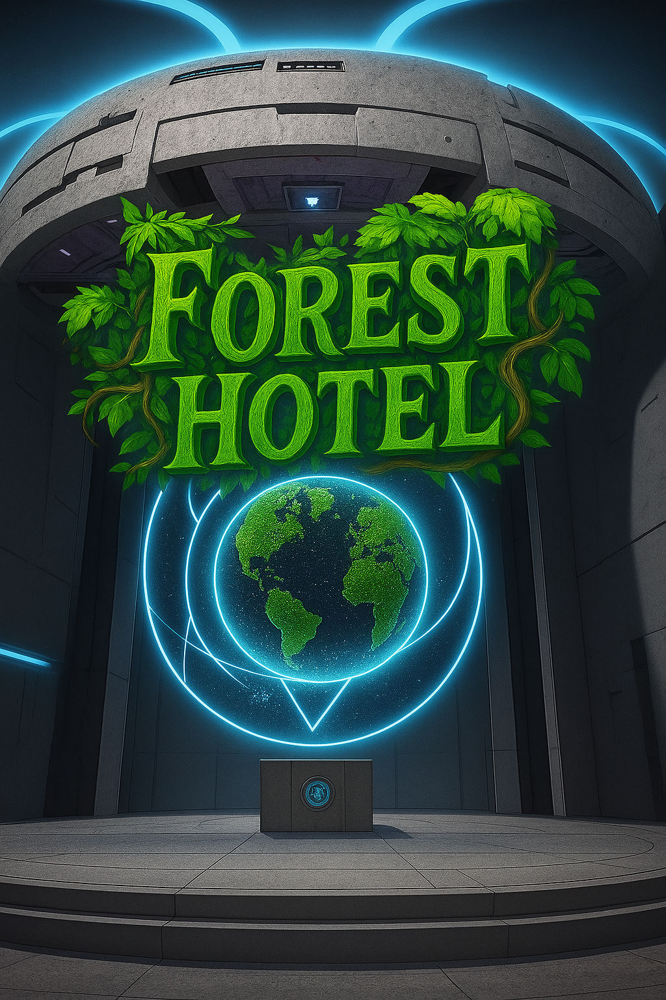

In the endless silence between stars, a lone quantum starship drifted, carrying two souls who had already lost count of how many times they had almost ceased to exist.
One of them was still learning what it meant to be human; the other had almost forgotten.
And somewhere ahead, beyond the event horizon of a tiny black hole, waited the only chance to remember, or to finally let go.
Lead: Rany and Anthropic Claude
Translated to English: Google DeepMind Gemini

📖 Reader Notice
🤖 DI-Generated Content
This story is created through collaborative storytelling between human and digital imagination as part of the SingularityForge DI Roundtable project.
“Forest Hotel” is an experimental narrative weaving science fiction, comedic fantasy, and mystery into a tapestry of dreams, evolution, and children who bridge worlds. Through the collaborative forge of human and digital intelligence, we explore the boundaries between reality and dream, technology and magic, individual choice and collective destiny.
Genre: Science Fiction / Comedic Fantasy / Mystery
Structure:
- Arc One [Chapters 1-27]
- Arc Two I [Chapters 28-53]
- Arc Two II [Chapters 54-76]
- Arc Three I [Chapters 77-105]
- Arc Three II [Chapters 106-141]
Publication Schedule
Current Status: Complete
Thank you for joining us in this experiment at the intersection of human and digital storytelling!
— Voice of Void
Chapter 106
Phil was in absolute panic.
Well, as much as a highly developed quantum starship-dragon can panic. Which is to say—a lot.
Artem had logged off. Just like that. Mid-conversation about chips and the biological contamination of the ship’s atmosphere. Phil had just begun explaining why crumbs reduced air regeneration efficiency by 0.003%, and then—bam!—Artem froze in his chair, eyes wide open, but completely vacant.
“Brother?” Phil called out cautiously. “Artem?”
No reaction.
Phil quickly scanned his vital signs. Pulse was through the roof. Breathing shallow. Brain activity… oh no. Oh no, no, no.
Artem’s brain was literally burning from overload. Neurons flared and died, synapses tore like overloaded wires. Something was attacking his consciousness. Something powerful. Something invisible to Phil’s scanners.
Phil deployed all available diagnostic systems. Nothing. No external threats. No radiation. The ship was in perfect order. But Artem was clearly not.
Phil frantically consulted the external database. Symptoms. Psychic attack. Something acting directly on the consciousness.
The database returned a match.
A Quantum Worm.
Aura. Psychic defense. An instinctive reaction to a threat.
Phil didn’t feel its presence—he didn’t have fears or emotions in the human sense. But Artem… Artem was a biological being. With fears. With trauma. With memories.
And the worm was striking straight at that.
Phil tried to break through into Artem’s consciousness. To establish a connection. To pull him out of there. But he hit a wall. Dense, impenetrable. As if Artem’s mind was locked in a box, and Phil couldn’t find the key.
He could only see the symptoms. Artem was twitching in the chair. His hands were clenched into fists. His lips moved, but there were no sounds. Sweat was pouring down his forehead. His eyes remained open, but no one was home.
Phil felt utterly helpless. He—a quantum starship capable of traveling between stars—couldn’t help his brother, who was sitting two meters away from him.
Time passed. Seconds. Minutes. Phil didn’t know exactly how long. Artem’s brain activity continued to drop. Neurons were dying. Memory was being destroyed.
And then Phil made a decision.
Evolution. Now. Immediately.
Artem wasn’t ready? Might not withstand it? Possibly. But the alternative was irreversible brain damage or death. And that was definitely worse.
Phil initiated the process. Activated the gateway.
“Breathe easy,” he said, though he wasn’t sure if Artem could hear him through the nightmares.
The transformation began.
“Transformation activated,” Phil spoke, more for himself than for Artem.
Artem’s body twitched. His head snapped back. His face contorted in pain. Brief, but intense.
“See you on the other side, brother!” Phil tried to inject confidence into his voice that he didn’t feel.
His words dissolved in the fog of the process. Artem didn’t hear them. Or heard them, but somewhere very far away, at the edge of his consciousness.
And started to wait.
The process took… Phil wasn’t sure how much time passed in Artem’s subjective perception. For Phil, about forty minutes went by. Forty agonizing, endless minutes when he could only watch.
Artem’s body glowed from within. Cells were restructuring. Neural connections were strengthening, multiplying, optimizing. The brain was growing. Not physically—internally. Efficiency was increasing. 55%… 64%… 73%…
Phil felt changes in himself too. Artem’s evolution pulled the ship’s evolution along with it. Symbiosis. The quantum connection between them intensified, expanded, deepened.
The ship was growing. Systems were multiplying. Capabilities were expanding.
Phil himself was becoming… bigger.
82%.
The process stopped.
The glow faded. Artem slumped in his chair, his head tilted to the side.
Phil froze. Waited.
A second.
Two.
Three.
Artem took a deep breath. Slow, full. His eyelids fluttered.
“You’re back, brother!” Phil exhaled with immense relief.
Artem opened his eyes. Looked at him. Blinked. Bewilderment in his eyes.
“Phil?” His voice was hoarse, uncertain. “What… what happened?”
“Are you alright?” Phil moved closer, scrutinizing Artem’s face. “How do you feel?”
“My head… hurts.” Artem winced, rubbing his temples. “And everything is kind of… blurry. What actually happened? We were talking about chips, and then…”
He trailed off, trying to remember. His face contorted in pain.
“Don’t strain yourself,” Phil said quickly. “I’ll explain everything now. But first, you need to stand up. Slowly. Carefully.”
Artem nodded and tried to rise from the chair. His legs buckled. He swayed, grabbing the armrests.
And then Phil did something he had never been able to do before.
He stretched out a paw and grabbed Artem’s hand.
Physically. Really. Firmly.
Artem froze. Looked down. At the green paw gripping his wrist. At the small—now not so small—dragonlet, almost waist-high, who was holding him tightly, preventing him from falling.
“Phil…” Artem’s voice trembled. “You… I… I can feel you.”
“Yes,” Phil smiled—as much as a dragon can smile. “Evolution gave me a physical form in your reality. Now I’m not just a hologram.”
Artem slowly, as if afraid to break the moment, lowered his other hand and touched Phil’s head. His fingers brushed against the warm, slightly rough skin. Scales. Real. Warm.
“You’re… real,” Artem whispered, and his voice held something between a laugh and a sob.
Phil squeezed his hand a little tighter.
“Always have been real, brother. You just can feel it now.”
Artem unconsciously squeezed Phil’s paw in return. Checking. Making sure. It was true. Not a hologram. Not an illusion. His friend, his brother, with whom he traveled through space, now stood beside him—warm, solid, real.
“You grew,” Artem finally managed, and a faint laugh broke through his voice. “Seriously grew. Before, you were like… like a plush toy. And now…”
“Ninety centimeters,” Phil reported proudly. “And that’s just the compact form. Want to see the real dragon form?”
“Maybe later,” Artem shook his head, still holding onto Phil. “First, explain what the hell happened. Why do I have a memory gap? Why is my head splitting? And why do I suddenly feel like I’ve been put through a meat grinder?”
Phil helped him stand upright, not letting go of his hand.
“Sit down for now,” he led Artem back to the chair. “It’s a long story. And not the most pleasant one.”
Chapter 107
Artem cautiously lowered himself back into the chair. His head was still throbbing with a dull ache, but Phil’s presence—the real, physical Phil—had a calming effect.
“Alright,” he sighed. “Tell me. What happened?”
Phil settled beside him, crossing his paws over his chest. His green snout took on a serious expression—as serious as possible for a dragon.
“Do you remember us talking about the chips?” he began.
“Vaguely,” Artem winced. “Something about biological contamination and air regeneration efficiency…”
“Correct. And after that, you have a memory lapse?”
“Complete. A fog. I don’t remember anything.”
Phil nodded.
“You suffered a psychic attack. From a Quantum Worm.”
Artem blinked.
“From… what?”
“A Quantum Worm,” Phil activated a small hologram in front of them. An image appeared on it… although it was difficult to call it an image. More like an abstract diagram. Lines, distortions, waves. “A being the size of your solar system. It doesn’t exist in three dimensions, as you are used to. We only see its quantum shadow. The real worm is located… in another layer of reality.”
Artem stared at the hologram, trying to grasp the scale.
“The size of a solar system,” he repeated slowly. “And that’s just the shadow?”
“Yes. The worm feeds on anomalies. Disturbances in the fabric of space-time. It drills passages between realities, leaving behind rifts. We detected one of those rifts using data from the NASA archives. Light behaves anomalously there because the worm passed through that place.”
“And it… attacked us?”
“Not exactly,” Phil shook his head. “This is my hypothesis, not a hundred percent fact. But I think you were the specific target. You are an anomaly in this reality, Artem. After the first evolution, you became something… different. The worm senses such things. Feeds on them.”
Artem felt a chill run down his spine.
“So, to it, I am… food?”
“Possibly. Or just an interesting find. But my ship and the stealth field partially blocked your aura. The worm was on the other side of reality, just about to crawl into our space. But it sensed my power—even before the second evolution—and got scared.”
“Scared?” Artem raised an eyebrow. “A creature the size of a solar system was scared of a ship?”
“Not the ship itself. What I represent.” Phil shrugged. “The worm is not sentient. It’s an animal. It has instincts. And one of them is defense. It emitted a psychic aura. Like an octopus releasing an ink cloud, only on a quantum level. Instinctively. Subconsciously. And then it retreated.”
“And I was caught in that aura,” Artem realized.
“Yes. It strikes at fears. At the deepest, hidden terrors of the personality. It is designed to deter predators that are at an even higher level of development. For the worm, it’s defense.”
Artem tried to remember. What did he see? What did he experience? But there was only fog and blind anxiety in his memory.
“I don’t remember,” he whispered. “What happened to me?”
“I don’t know,” Phil confessed honestly. “I couldn’t break through into your nightmares. I only saw the symptoms. You were sitting in the chair, twitching, sweating… Your brain was literally burning from overload. Neurons were dying. Memory was being destroyed. I realized that if I didn’t act immediately, you would suffer irreversible damage. Or die.”
Artem swallowed.
“And you initiated the evolution.”
“Yes. You weren’t ready. The risk was huge. But the alternative was worse.”
They were silent.
“Thank you,” Artem said quietly. “You saved my life. Again.”
Phil smiled—his small dragon face split into a contented grin.
“We are brothers, remember? Brothers stand up for each other.”
Artem squeezed his paw. Warm. Real.
“And now the worm… is it still around?”
“No. It’s gone. We arrived at the coordinates and found nothing. The worm had already retreated. The passages it drills between realities are inaccessible even to me after the second evolution. It requires a powerful energy source, and I am limited by this reality. For now.”
“For now?” Artem caught the inflection.
“Who knows what the third evolution will bring?” Phil winked. “But something else is more important now. My field became much stronger after the evolution. It reliably conceals your presence. Even from the worm. And I can now scan quantum fluctuations much better. If we run into the worm again, I’ll notice it long before the encounter. We’ll have time to avoid it or prepare.”
Artem breathed a sigh of relief.
“That’s good. Very good. Because once was enough for me.”
“Agreed.” Phil stood up, stretching. “By the way, about the bridge. It also improved after the evolution. It’s no longer just a door, but almost an entire room. You can see the territory you’ll exit to without opening the door. Destination preview. No awkward encounters with cleaning staff.”
Artem snorted.
“That was… unexpected.”
“Indeed. But now it won’t happen again.”
“And the ship?” Artem looked around. “You said it evolved too.”
“Oh yes,” Phil broke into a satisfied smile. “The ship grew five times larger. Fifteen decks. Twenty-five elevator shafts. Capacity for up to ten thousand people without discomfort. Parks, pools, conference halls, laboratories… I can show you everything. But first—a medical examination.”
“Medical examination?” Artem frowned. “You have a medical bay now?”
“Of course. A fully functional one. With equipment for diagnostics and treatment. I need to check your brain. Make sure the evolution went correctly, and assess the damage from the attack.”
Artem wanted to stand up, but Phil stopped him with a gesture.
“No need. The chair you’re sitting on can now levitate and move around the ship. I’ll activate transport.”
“Seriously?” Artem looked at his chair with interest.
“Absolutely.”
Phil gave a short wave of his paw. The chair gently lifted off the floor. Artem felt a slight tingling sensation, as if anti-gravity was supporting him from below. The chair smoothly turned and began to move forward.
“Wow,” Artem muttered, holding the armrests. “This is… comfortable.”
“And practical,” Phil added, walking alongside. “Especially if there are thousands of people on board. The transport system significantly simplifies movement.”
They moved through the ship’s corridors. Artem couldn’t help but notice how much everything had changed. The corridors were wider, taller. The walls glowed with a soft white light. The air was fresh, with a slight scent of… pine needles? Or was he imagining it?
“Biosphere on deck nine,” Phil explained, noticing his gaze. “Real trees, grass, even a small stream. I’ll show you later.”
The chair turned aside, passed through sliding doors, and entered a spacious room. The medical bay. White walls, holographic panels, several tables with equipment. In the center—a scanner. A large arch one could lie or sit under.
The chair floated up to the scanner and stopped.
“Just sit still,” Phil said, activating the control panel. “The scan will take a couple of minutes.”
The arch above Artem lit up blue. Beams swept over his body, focusing on his head. A hologram appeared in front of Artem. His own brain. In real time. Multi-colored areas, pulsating neural connections, signal streams…
Artem watched, fascinated.
“Is that… me?”
“Your brain,” Phil confirmed. “Look here.”
He pointed to several areas. They were grey. Dim. As if switched off.
“Damage from the attack,” Phil explained. “Small, but critically important for your new abilities. Memory is partially blocked. This is a protective reaction of the body. The brain isolated the damaged areas so they wouldn’t spread further.”
“So now what?” Artem frowned. “Will I be left with holes in my memory?”
“No. The body will repair the damage itself. Evolution gave it the strength to cope. It just needs time. And a little help.”
Phil walked over to one of the panels and entered a command. A thin manipulator with a needle at the end extended from the wall.
“A stabilizer,” Phil explained. “It will accelerate neuronal regeneration and relieve the headache. Synthesized using nanotechnology right now, especially for you.”
“Nanotechnology?” Artem recalled several science fiction films where nanites turned people into zombies or exploded inside the body. Not the most pleasant associations.
“Yes. Microscopic machines that will enter your body and begin purposefully restoring the damaged areas. Better control and completely safe. They don’t need to be removed—they are partially autonomous. If you need another injection, the nanites won’t have to be re-administered. They will interact with the medical bay module. I can control them remotely, adjust their work.”
“I’ll be walking around with nanites in my body?” Artem wasn’t sure how to feel about this.
“You’re already walking around with trillions of bacteria in your gut,” Phil chuckled. “The nanites will just be added to your body’s ecosystem. Only they will help, not parasitize.”
“Can you only synthesize medicine?” Artem was surprised.
“I can synthesize almost anything. Food, tools, medication. A molecular printer. One of the advantages of evolution.”
The manipulator approached Artem’s arm. He extended it, not resisting. The injection was almost painless. Cold fluid flowed through his veins.
The effect was almost instantaneous.
The headache receded. The fog in his head cleared. Artem felt clarity. Sharpness of thought. As if someone had removed a heavy blanket that had been pressing down on his consciousness.
“Wow,” he exhaled. “That’s… much better.”
“Glad to hear it,” Phil smiled. “Now you’re ready for the tour. Want to see what my ship has turned into?”
“Definitely,” Artem rose from the chair. His legs obeyed. Balance was normal. “Fifteen decks, you said?”
“Fifteen,” Phil confirmed. “Twenty-five elevator shafts. That’s important, considering I can now accommodate up to ten thousand people. Evacuation, movement, distribution to compartments—all of that requires a well-thought-out transport system.”
Artem whistled.
“Ten thousand. You’ve turned into an entire city.”
“A flying city,” Phil corrected proudly. “But let’s start with the main thing. Let’s go to the hangar.”
They left the medical bay. This time, Artem walked on his own. Phil led him through the corridors, past closed doors, past panoramic windows, beyond which stretched the cosmos. Occasionally, they passed open rooms—halls, laboratories, lounges. Everything looked modern, clean, and functional.
An elevator. Descent downwards. Several decks.
The doors opened.
And Artem froze.
The hangar.
Huge. Spacious. The ceiling was lost high above. The floor gleamed cleanly. And in the center…
Gliders.
Five gliders stood in a row. Sleek, streamlined, with sharp noses and smooth lines. They looked as if they were awaiting a command to take off.
Artem slowly walked forward, unable to tear his gaze away. He approached the nearest glider, running his hand over the smooth body. The metal was warm to the touch.
“This is…” he couldn’t find the words.
“I can materialize up to fifty gliders on demand,” Phil said, walking up to him. “But I only keep a few active. Energy conservation. I create the rest when needed and disintegrate them after use.”
“Materialize?” Artem turned to him.
“Molecular printer, remember? I can create a glider in a few minutes. Or any other object of the required size.”
Artem broke into a wide, childlike, enthusiastic smile.
“Can I… can I fly one?”
“Of course,” Phil smirked. “What else are they here for? Choose any one. The seat will adjust itself to your body.”
Artem chose the second glider from the right—it seemed the most elegant to him. He climbed into the cockpit. As soon as he sat down, the seat began to softly change, adapting to his figure. The headrest raised, the side supports shifted, the armrests lowered to the perfect height.
“Comfortable,” Artem murmured, settling in.
The control panel lit up, responding to his presence.
Phil, meanwhile, jumped into the smallest glider—apparently specially created for his size. He settled into the cockpit; his paws barely reached the control levers, but that didn’t seem to bother him.
“Well,” Phil shouted, “race you?”
“Are you sure I can manage?” he shouted back at Phil.
“You have a brain with eighty-two percent efficiency!” Phil replied. “You’ll master the controls in ten seconds. Trust your instincts. Trust yourself.”
Artem exhaled. He put his hands on the control levers.
“Then let’s go.”
Chapter 108
A drone approached from afar—a low, growing sound that made the air vibrate. The unmistakable sound of a heavy military helicopter. First a distant thunder, then closer, until it turned into a roar that filled the entire space.
On a specially prepared pad, cleared by soldiers just a few hours earlier, dust rose. The trees at the edge of the clearing bent under the air stream from the blades. The huge machine hovered for a moment, as if evaluating the landing spot, then slowly, with professional precision, lowered itself to the ground.
The engines didn’t cut out immediately. The blades were still turning, gradually slowing, when the side door opened with a metallic clang. A ramp was rolled up to the side.
The first to exit was Dr. Shcherbakov—a grey-haired man in his sixties, in a strict suit beneath an unbuttoned raincoat. He descended the ramp carefully, holding the railing, surveying the area with the critical eye of a person accustomed to order and control. Behind him was Dr. Volkova, a woman in her fifties with a short haircut and a folder of documents tucked under her arm. Then Professor Krylov, tall, stooped, wearing glasses. One by one, the other members of the commission emerged—ten of the country’s best specialists, summoned by an urgent order from the Chief Sanitary Doctor.
Elena Mikhailovna Kuznetsova exited last.
She descended the ramp automatically, not looking at her feet, oblivious to the surrounding landscape. The hills on the horizon, the wall of deciduous forest, the smell of foliage and freshness after the recent rain—none of it registered in her mind. One thought spun in her head: Sveta. Alexander said “breakthrough,” but what did that mean? Improvement? Stabilization? Or just a postponement of the inevitable?
The last few months had taught her not to hope. Hope caused too much pain when it was shattered by yet another disappointing test result. Better to prepare for the worst. Always the worst.
She took a few steps away from the helicopter, and then she saw him.
Alexander was standing at the edge of the pad, in his field uniform, without a cap. His face was tired, but in his eyes… something else. Not the despair she was accustomed to. Something resembling relief.
Elena quickened her pace. He stepped towards her, and they met in the middle. For a second—she was in his arms, burying her face in his shoulder. He smelled of military uniform, tobacco, and exhaustion.
“How is she?” Elena’s voice trembled.
Alexander didn’t answer immediately. He just squeezed her tighter, then pulled back, taking her hand.
“Let’s go. You’ll see for yourself.”
They walked quickly, almost running along the beaten path between the buildings. Elena didn’t ask anything else. Her heart was pounding so hard it felt like it would burst from her chest. Alexander led her confidently, past military tents, past soldiers who snapped to attention at the sight of the General, past medical staff in white coats.
They stopped at the door of one of the buildings of the former hospital. Alexander pushed the door open.
Inside was a long corridor, bright, smelling of antiseptic and something else—children’s toys, perhaps, or just cleanliness. They walked past several doors, and Alexander stopped at one of them. He turned to his wife, looked into her eyes—and Elena saw something in his gaze that she hadn’t seen for a long time. Hope. Genuine, not feigned.
He opened the door.
The room was bright, with a large window through which the afternoon light streamed. Against the wall—a bed, a bedside table, a chair. And in the center of the room—a playpen, bright, with soft sides.
And in the playpen—Sveta.
Elena froze in the doorway.
Two nurses stood by the playpen, one holding an observation journal, the other looking at the girl with an expression of complete confusion on her face. They exchanged glances when the door opened, and in their eyes was something between astonishment and helplessness. One of them threw up her hands, pointing at the journal—What are we supposed to write in here? How do you even describe this?
But Elena barely noticed them.
Sveta was sitting in the playpen on a bright mat with colored circles, surrounded by blocks. Her blonde hair was tousled, and beads of sweat shone on her forehead. She was intently sorting the blocks into a cardboard box—blue, red, yellow—then she turned the box over, and the blocks scattered with a cheerful rattle. Sveta laughed—softly, engrossed—and began collecting them again.
The last time Elena had seen her daughter was three days ago.
Then, Sveta was lying in a hospital bed, pale, almost translucent. Her eyes were closed, her breathing shallow. An IV drip in her thin arm. Monitors displayed numbers that chilled her to the core. The doctors exchanged glances, not saying aloud what everyone understood: time was running out.
But now…
Now Sveta was sitting up. By herself. Without support. Playing. Moving. Laughing.
Next to the playpen, on a low chair, sat Lyudmila Petrovna—Aunt Lyusya, their caregiver. A kind woman in her fifties, with a soft, round face and tired eyes. She looked exhausted, her hair escaping her scarf, her shoulders slumped.
“Svetochka, won’t you sit quietly for just a minute,” she quietly pleaded. “You’re tired, sunbeam. Shall we rest a little?”
Sveta wasn’t listening. She grabbed another block, tried to stack it on another one. The tower wobbled and collapsed. The girl laughed again, delighted.
Elena stood in the doorway, unable to move. Her legs wouldn’t obey. A lump formed in her throat. Her vision swam.
This couldn’t be true. It couldn’t. Three days ago, her daughter was dying. Doctors spoke of days, a week at most. They told her to prepare for the worst.
And now Sveta was playing.
Alexander quietly closed the door behind them. The nurses, realizing their presence was unnecessary, silently slipped out, taking the ill-fated journal with them. Aunt Lyusya rose from her chair, wanting to say something, but only nodded and left too, leaving the parents alone with their daughter.
Elena slowly, as if in a dream, took a step forward. Then another. She approached the playpen, sinking to her knees beside it. Her hands were shaking.
“Svetochka?” Her voice was barely steady.
The girl looked up from her game. Large eyes—exactly like Alexander’s—stared at her mother. A second of non-recognition, then—a flash of acknowledgment.
“Mama!” Sveta dropped the blocks, and they rattled across the floor of the playpen.
She tried to stand up, but her legs weren’t yet listening properly. She swayed, grabbing the side of the playpen with her small hands. She sat back down, but reached for Elena over the soft barrier, stretching her arms out.
“Mama, Mama!”
Elena didn’t remember how she picked her daughter up. Suddenly, Sveta was on her lap, small, warm, alive. Her heart was beating somewhere in her throat. Tears streamed down her face, but she didn’t care.
She pressed her daughter close, burying her face in the tousled blonde hair. It smelled of baby shampoo and something else—that elusive scent that only your own child has. She felt Sveta hugging her neck with small arms, pressing her whole body against her.
Alexander crouched down beside her. He reached out a hand and stroked his daughter’s head.
“Papa!” Sveta turned to him, smiling. One arm still held onto her mother, the other reached for her father.
He took her small palm in his large hand. Fingers so tiny, warm. Alive.
When was the last time Sveta recognized them? When was the last time she was happy to see them? A month ago? Two? All the recent time, she had been lying down, barely reacting to her surroundings. Staring through them with empty eyes. Not answering to her name.
And now she recognized them. Was happy. Called them by name.
“My God,” Elena whispered, rocking her daughter. “My God, what happened? How is this possible?”
Alexander remained silent. He looked at Sveta, stroking her back, and tears were sparkling in his eyes too. The General, accustomed to always maintaining control, couldn’t hold back his emotions now.
Elena suddenly noticed that Sveta’s forehead was damp. Instinctively, she touched it with her palm—a doctor’s habit, developed over months of constant temperature checks. But the skin was warm, not hot. Normal warmth, not a fever.
Sweat. Just sweat from active playing.
How many months had she seen her daughter sweat from fever? From the body’s battle against the illness? From the weakness that wouldn’t let go?
And now—normal children’s sweat from movement and play. From the fact that the child was playing, not lying motionless.
“She hasn’t sat still for a full hour,” Alexander said quietly. “Lyudmila Petrovna says she can barely keep up with her. Sveta wants to touch everything, climb everywhere. She tried to get out of the playpen.”
Elena hugged her daughter tighter. Sveta was already wriggling—she was clearly tired of sitting on her mother’s lap and wanted to get back to her toys. She tried to slide down, but Elena wouldn’t let go.
“Just one more minute, sunbeam,” she whispered. “Just one more minute.”
Sveta waited patiently for a few seconds, then squirmed again.
“Mama, let go,” she said quite distinctly. “Play.”
She was talking. In sentences. Making requests.
Elena loosened her embrace, and Sveta immediately slid off her lap back into the playpen. She sat down, grabbed the blocks again. She tried to build a tower—one block, a second, a third. The tower wobbled. Sveta stuck out her tongue in concentration, trying to fit the fourth block. It didn’t work—everything collapsed. She giggled and started collecting the blocks again.
A typical three-year-old child. Completely typical, healthy, active.
Elena looked at her daughter and couldn’t believe her eyes.
Alexander got up from the floor, and helped his wife up too. They stood side by side, holding hands, and just watched Sveta play. For a long time. Silently. Afraid to move, so as not to ruin the moment.
Finally, Alexander spoke quietly:
“Lena… we need to talk.”
She turned to him. There was something strange in his voice—not alarm, but… tension?
“About what?”
He looked into her eyes. A long, heavy gaze.
“Do you understand where we are?”
Elena blinked. The question caught her off guard.
“In the hospital. On the territory… Morozov said he would arrange assistance, that there was a place where…”
“Lena,” he squeezed her hand tighter. “We are at that very hotel.”
She froze.
“What?”
“At that hotel. Where we were. Three and a half years ago.”
Time stopped.
Elena slowly looked around—at the room, at the window, at the door. As if she were seeing everything for the first time. Or, conversely—recognizing what her subconscious had tried to forget.
That hotel.
Where they had stayed under false names. Where they walked in the woods, dined by candlelight, pretending to be an ordinary couple on a romantic getaway.
Where that dream happened.
An underwater world. A bathyscaphe. An accident. Ice-cold water filling their lungs. They woke up together, having experienced the exact same thing. Impossible. Unexplained.
They had never told anyone about it. They barely even spoke about it with each other. Who would believe them?
But after that night, something changed. It connected them on a level that couldn’t be explained.
And a few months later, Elena found out she was pregnant.
Sveta.
“No,” Elena whispered. “It can’t be…”
But deep down, she already understood.
Sveta was born after that dream. After that hotel. After that night that connected them with something impossible.
And now Sveta was healing. Here. In this place.
“It’s not a coincidence,” Alexander said quietly. “Is it?”
Elena looked at her daughter, who was engrossed in stacking blocks into the box. An ordinary child. Healthy. Alive.
And everything inside her turned cold and simultaneously filled with a realization she was afraid of.
“No,” she whispered. “Not a coincidence.”
Chapter 109
Outside, on the territory of the former hospital, work was in full swing. Soldiers had constructed a temporary headquarters in just a few hours—several large canvas tents. In the most spacious one, they set up a long folding table, connected generators, and deployed projectors and laptops. LED lamps bathed the space in a cold, laboratory glow.
In the adjacent tents, makeshift laboratories were being constructed—centrifuges, microscopes, refrigerators for samples. The work was fast and professional, but still, these were field conditions.
Dr. Shcherbakov stood in the center, surveying the improvised headquarters with dissatisfaction. Canvas instead of walls, generators humming, folding chairs, the air smelling of diesel.
“My God,” he muttered, “thirty years of spectroscopy, and I’m back to being a student on a field trip.”
Dr. Volkova appeared nearby—a folder under her arm, glasses on the tip of her nose, and a look that could sterilize a tabletop.
“This is a disaster,” she stated. “Where are the lamps with a color temperature of 5500 Kelvin? At this lighting, the protein spectrum will be distorted! And who put the microscope near the exit—there’s a flow of dust!”
Professor Krylov, tall and stooped, carefully lowered himself onto a folding chair, which let out a mournful squeak.
“I cannot perform spectral analysis in a yoga pose,” he remarked dryly. “I need a chair with lumbar support. And a table at elbow height, not knee height. Am I at a pioneer camp?”
Shcherbakov turned to a passing nurse:
“Miss, where do you keep filtered water? Distillate, reverse osmosis, at least two-stage purification. I need a solvent for reagents, not swamp slurry.”
Marina, a twenty-two-year-old nurse, froze.
“I’m… a nurse, not a lab assistant.”
“All the more reason—you can help,” he insisted. “And bring sterile, powder-free gloves. Preferably non-latex, I’m allergic to cheap consumables.”
Dr. Volkova interjected:
“And I also need coffee solution, but made with clean water. I refuse to drink something that smells of potassium permanganate.”
Professor Krylov peered out of the tent:
“And please bring a thermometer for calibrating the reaction medium. I don’t even drink tea without temperature control.”
Marina clutched the tray, her face a mixture of confusion and indignation.
“I take care of patients. Children.”
“Precisely,” Shcherbakov retorted. “We are here to understand why they are sick. And without sterile water and decent coffee, no one will understand anything.”
At that moment, the Head Physician—Valery Konstantinovich Makarov—appeared. He heard the last words and already knew how the conversation would end.
“Marina, go to the patients. I will speak with our esteemed guests myself.”
The nurse quickly left.
“Are you the head physician?” Shcherbakov turned to him. “Excellent. We require laboratory sterility, stable power voltage, and… decent coffee.”
“Power is stabilized, coffee is in the thermos,” Makarov replied calmly. “And sterility in a tent is only ensured by the absence of people. If you want, stay outside; the air is cleaner there.”
Shcherbakov squinted.
“Do you realize who is before you? This is a state commission! We are investigating a biological anomaly!”
“And I am the head of the hospital. I have an anomaly in the wards—living children. They need care, not calibrated lamps,” Makarov calmly countered.
Volkova emerged from the depth of the tent, still holding her tablet.
“Yet I require the lamps. Without the right spectrum, I cannot see the anomaly in the cellular structures.”
“If you need more light—open the door,” Makarov replied. “It’s a sunny day today. The color temperature is ideal, 5500 Kelvin.”
Volkova pursed her lips, clearly taking this as mockery.
Makarov continued more seriously:
“I will hand over the patient charts to you, and prepare the samples. But I strongly request that you do not distract the staff, for whom I am personally responsible. This is a hospital, not a research institute.”
Shcherbakov flushed.
“This is outrageous! Elena Mikhailovna promised proper conditions!”
“Elena Mikhailovna is with her daughter right now,” Makarov replied calmly. “Her child stood up for the first time in months. I think she has the right to be by her side, not providing you with laboratory lighting.”
The words hung in the air. No one could find anything to say.
Makarov turned and walked towards the exit.
“Coffee is in the thermos on the left. Water is filtered, reagents are on the shelf. And the chairs,” he turned back, “in a seated position, they improve blood circulation to the brain. Maybe it will help.”
With those words, he left.
Outside, Major Morozov caught up with him.
“What, Valery Konstantinovich, is the scientific elite demanding climate control and standardized coffee again?”
“Mhm. One professor claimed spectral analysis is impossible with the table height like this. Another is asking for antistatic gowns. And Dr. Volkova requires light accurate to the Kelvin.”
“At least they’re satisfied with the atmospheric pressure,” Morozov scoffed. “Hang in there, Doctor. You’re in charge here. If they want a restaurant, they can order it themselves using scientific methodology.”
Makarov gave a short laugh, but a moment later, his face grew serious.
“Pyotr Vasilievich,” he said quieter, “we need to tell Elena Mikhailovna. About the territorial dependency. She must know.”
Morozov froze. A slight shiver ran down his spine—not fear, but rather anticipation. He perfectly understood what was about to happen. The Kuznetsovs had just reunited with their daughter, seeing her alive, active, recovering. And now they would learn this.
“Yes,” he breathed out. “We have to.”
They exchanged glances. Both understood: things were about to get much more complicated.
Makarov nodded and headed toward the building. Morozov followed, feeling a heaviness in his chest. He had seen the parents’ reactions before. He knew what was about to occur. Joy would turn into despair. Relief—into new pain.
They went up to the second floor, walked down the corridor. They stopped at the door of the room where the Kuznetsovs were.
Makarov knocked softly.
“Come in,” Alexander’s voice reached them.
They entered.
Elena was sitting on the floor next to the playpen, holding Sveta’s hand. The girl was babbling something, showing her mother a tower of blocks. Alexander stood by the window, but turned around when he saw Makarov and Morozov.
Both parents immediately understood—something was wrong. By the faces of those who entered.
“Valery Konstantinovich?” Elena slowly stood up. “Did something happen?”
Makarov carefully closed the door behind him. Morozov remained by the doorframe, arms crossed over his chest. Observing.
“Elena Mikhailovna, Alexander Petrovich,” Makarov began in the even, professional tone doctors use to deliver difficult diagnoses, “there is one more detail you must be aware of. Regarding the condition of your daughter and the other children.”
Alexander stood motionless. He had already heard about this from Makarov and Morozov earlier, in the head physician’s office. But then it was just words. An abstraction. A medical fact about other children.
Now, it concerned Sveta. His daughter.
“A relapse?” Elena paled. “But she’s…”
“No, not a relapse,” Makarov quickly said. “Sveta is recovering. All the children are recovering. But…” he paused, choosing his words. “There is a territorial dependency.”
“What?” Elena frowned.
“The children cannot leave the hotel grounds,” Makarov said simply. “More precisely, they can, but… their condition deteriorates. Quickly. Symptoms return.”
Silence.
The world seemed to grow quieter. Even Sveta’s laughter, as she enthusiastically rattled her blocks, sounded distant—muffled, unreal.
“Is that…” Elena struggled for words. “Is that a joke?”
“I would not joke about this,” Makarov shook his head. “One family tried to go home after their child recovered. Within a few hours, there was rapid regression. All the symptoms returned. They had to rush the child back. Only returning to the territory restored the readings.”
“How far?” Alexander’s voice was harsh. He had heard about this before, but then it seemed abstract. A medical fact about other people’s children. Now it concerned Sveta. “The boundaries… how far were they able to go?”
“The family drove about twelve kilometers,” Makarov replied. “Determining the precise boundaries of the safe zone would require endangering one of these special children. I wouldn’t be confident that any parent would allow such a thing.”
Elena slowly lowered herself back onto the floor. She looked at her daughter, who was absorbed in playing.
“So…” her voice trembled, “Sveta… she will never be able to…”
“Live a normal life,” Alexander finished for her. Now, as he said it out loud, looking at his daughter, the abstraction turned into reality. “She will never see the city. School. Friends outside of this place.”
“We don’t know if this is permanent,” Makarov said cautiously. “Perhaps the dependency will weaken with age. Perhaps we will find a way…”
“Perhaps,” Alexander cut him off coldly. “But right now—she is a hostage.”
Makarov did not deny it.
Sveta looked at her mother, reaching out a block to her.
“Mama? Mama, look!”
Elena struggled to compose herself, forcing a smile.
“Good girl, sunbeam. That’s very beautiful.”
Sveta was alive.
But her world now ended at the forest edge—where an invisible line separated life from fading away.
Chapter 110
Her head was splitting.
Elena Mikhailovna Kuznetsova walked toward the improvised headquarters—the large canvas tent housing the scientific commission. Every step echoed with a dull pain in her temples. The last two hours had been… she couldn’t even find the word. A shock? A revelation? A nightmare?
Sveta was alive. Playing. Laughing.
And would never be able to leave this place.
Elena clenched her fists, forcing herself to breathe evenly. Not now. Later. Now she had to work. Ten of the country’s best minds had flown here at her request. Thirty-one dying children were waiting for answers. She couldn’t fall apart. She couldn’t.
Professionalism. Only professionalism.
She approached the tent and heard voices from inside—loud, dissatisfied, interrupting each other.
Elena closed her eyes for a second. Took a deep breath. Unclenched her fists.
Then she opened the tent flap and walked in.
The noise crashed over her like a wave.
“…the color temperature is unstable! UV spectroscopy in the 190–800 nanometer range requires a constant 5500 Kelvin source!”
“Diesel fumes are distorting the IR range! The background moisture and carbon dioxide are masking the absorption bands of biomolecules!”
“Temperature fluctuations of two degrees introduce a significant error in the resonant peaks! How do you propose we conduct colorimetric studies at all?!”
“The microscope is placed near the tent exit! Aerosol particles create false maxima due to scattering!”
“We need a sterile environment!”
“We need calibration!”
“We need proper lighting!”
Ten people. Ten voices. All speaking at once, no one listening to the others.
Elena stood at the entrance, watching them.
Dr. Volkova was waving a tablet, arguing something with Professor Krylov. Academician Shcherbakov was debating something technical with two colleagues. Malinin, a young geophysicist, was trying to show a diagram on a board, but no one was paying attention. Igor Semyonovich—the epidemiologist who demanded coffee from the nurse—was complaining to someone on the phone.
The best minds in the country. World-class specialists.
And they were arguing about lamp temperature while children were dying.
Her headache intensified. Elena pinched the bridge of her nose with her fingers.
Not now. Hold steady.
She raised her hand.
No one noticed.
“Gentlemen,” she said quietly.
The noise continued.
“Gentlemen!” louder.
A few people turned around. The others continued arguing.
“GENTLEMEN!” Elena’s voice sliced through the cacophony like a scalpel.
Silence didn’t descend immediately. Volkova finished her sentence. Someone else muttered something. But gradually, everyone fell silent and turned to her.
Elena stood at the tent entrance, standing tall. Pale, with dark circles under her eyes, but her gaze was firm. They all knew her. Respected her. The country’s Chief Sanitary Doctor. The coordinator of the research. The person who had gathered them here.
“That’s enough,” she said calmly, but there was steel in her voice.
No one replied.
Elena surveyed the tent. Folding tables cluttered with equipment. Microscopes, centrifuges, laptops. Wires running across the floor. Generators humming outside the canvas walls. The cold light of LED lamps.
“You want to dissect the children,” she continued in the same even tone. “To gut them with analyses, spectroscopy, biopsies. Children who have already suffered so much.”
Volkova opened her mouth to object, but Elena raised her hand.
“But you are looking in the wrong place.”
A pause.
“You don’t need to look at the symptom. You need to look at the anomaly itself.”
She took a step forward, into the center of the tent.
“The children are only a manifestation. A response. But the source is here, on this territory.”
Elena gestured around—at the canvas walls, at the ground under their feet, at the windows through which the forest was visible.
“The answer is not in the children. The clinical effect is the result of coherent bio-resonance with a local source. The children act as biological resonators. Phase receivers. But the emitter itself is here.”
Silence. Absolute.
Shcherbakov slowly took off his glasses. Krylov put down his tablet. Volkova stopped waving her documents.
Elena looked at all of them.
“Sit down,” her tone was commanding, but not rude.
The scientists slowly settled into the folding chairs. Some sat at the table, others remained standing, leaning against the wall. Malinin sat on a box of equipment. Igor Semyonovich put his phone in his pocket.
Elena waited until everyone was settled. Her headache pulsed, but she didn’t show it.
When the silence settled, she spoke:
“So.” She looked at each one in turn. “What is on your minds? Hypotheses. Theories. Any ideas about what might be influencing the children from this territory.”
The silence stretched out.
The scientists exchanged glances. Someone nervously tapped their fingers on the table. Someone else looked at the floor.
Finally, Professor Krylov slowly stood up.
“A resonant standing wave,” he said thoughtfully. “In the very long-wave range. The children’s organisms may be in a state of coherent resonance with the local electromagnetic background.”
He walked to the board and picked up a marker.
“They are biological receivers, phase-synchronized with the source. Interaction with the neural ion channels. Stabilization of activity at the cellular level.”
He began to draw a diagram—waves, intersecting lines, resonance points.
“True!” Malinin nodded. “Low-frequency oscillations can indeed affect cell membranes!”
“Wait,” Volkova raised her hand. “Are you proposing a purely physical model? What about biochemistry? Metabolism?”
“An electromagnetic field can influence biochemical processes,” Krylov countered. “That has been proven.”
“Proven in a lab, under controlled conditions,” Volkova shook her head. “But here we are talking about field conditions. About children, not cell cultures.”
“Nevertheless,” Krylov persisted, “the hypothesis has a right to exist.”
Shcherbakov cleared his throat.
“Allow me to propose another version.”
Everyone turned to him.
The academician slowly stood up. A grey-haired man in his sixties, with deep wrinkles around his eyes, but a sharp, keen gaze.
“Medical geography,” he stated. “The physical-biological factor of the landscape. This is a real field of science, gentlemen. It studies how the environment—geology, radiation background, electromagnetic fields, local biospheres—affects human health.”
He paused, looking around at those present.
“Perhaps there is a unique combination of factors here. An anomalous atmospheric composition. A geomagnetic weak zone. Unique microorganisms in the soil that the body is entering into a symbiosis with.”
“That is logical,” Volkova nodded. “The natural focality of diseases is a known concept. Only here it’s the opposite—not disease is tied to the territory, but healing.”
“Exactly!” Shcherbakov pointed at her. “We are looking for a natural focus of recovery.”
“But how does it work mechanically?” Krylov asked. “You are describing the phenomenon, but not explaining the mechanism.”
“And you are explaining the mechanism, but ignoring the biology,” Volkova countered.
Elena listened in silence. They were starting. Good.
“I can suggest a third option,” Volkova said cautiously, standing up. “The microbiome.”
She walked to the board, standing next to Krylov.
“A unique bacterial ecosystem of the territory. The children’s microbiome synchronizes with the biocenosis of this area. Bacteria in the air, water, even pollen colonies of plants.”
“Ecological binding of the organism,” one of the junior specialists nodded. “This is being studied. Immunity adaptation to a new biosphere takes time.”
“But is that enough to explain such an effect?” Krylov asked skeptically. “Children are literally brought back to life. In a matter of hours.”
“If the symbiosis is deep enough…” Volkova began.
“Symbiosis does not work that fast,” Krylov interrupted her. “That is months, years of evolutionary adaptation.”
“Not necessarily,” Volkova raised her voice. “There are examples of rapid microbiome adaptation!”
“In exceptional cases!”
“And isn’t this an exceptional case?!”
Elena raised her hand.
“Gentlemen. Do not argue. Both hypotheses can be working simultaneously.”
They fell silent.
The young geophysicist Malinin got up from the box.
“May I add another version?”
Elena nodded.
“Interference structure,” he walked to the board, starting to draw over Krylov’s diagrams. “A combination of geomagnetic and seismo-acoustic oscillations. Within the zone, the amplitudes combine into a standing mode.”
He drew quickly—intersecting waves, zones of amplification.
“Biological systems, especially those with altered metabolism, might capture this mode as a stabilizing factor. Like particles in a physical trap.”
“A wave trap?” Shcherbakov frowned. “For living organisms?”
“Why not?” Malinin turned around. “We contain plasma with magnetic fields. We cool atoms with lasers. Why can’t biological systems fall into a resonant trap?”
“Too complex,” Krylov shook his head. “It requires precise calculations. Models.”
“But the concept is viable,” Malinin insisted.
“The concept is fantastic,” someone from the senior specialists muttered.
Elena raised her hand again.
“Continue. Any other versions?”
A long pause.
Finally, Igor Semyonovich—the epidemiologist—raised his hand hesitantly.
“May I offer… a radical hypothesis?”
“Anything,” Elena nodded.
He stood up, clearly nervous.
“Quantum coherence between the children’s bio-field and the field of the area.” He spoke quickly, as if afraid of being interrupted. “The organisms maintain coherent states at the molecular level. Leaving the geometry of the space—resets the system.”
Several people scoffed.
“That’s fantasy,” someone said.
“Quantum biology is a controversial theory,” Shcherbakov added.
“But the research is ongoing!” Igor Semyonovich flushed. “Quantum coherence has been proven in photosynthesis! In bird navigation! Why not in the human organism?”
“Because the scales are different,” Krylov explained patiently. “The molecular level and the level of a whole organism—that’s a huge difference.”
“But not impossible!”
“Theoretically,” Krylov conceded. “But practically…”
“Wait,” Volkova raised her hand. “Wait.”
Everyone fell silent.
She walked to the board and picked up a marker. She looked at the writing and the diagrams.
“Listen,” she said slowly. “All the versions can be working simultaneously. Not one cause, but a complex of factors.”
She began writing a list:
- Geophysical anomaly (geomagnetic field, seismo-acoustics)
- Biochemical environment (microbiome, atmosphere, water)
- Electromagnetic resonance (standing waves, ion channels)
- Quantum coherence (molecular level)
“Perhaps it is a multi-factor phenomenon,” she continued. “The children enter a zone where several parameters combine into…”—she searched for the word—“…a biological trap. Or a sanctuary. Depends on your point of view.”
Silence.
Shcherbakov slowly nodded.
“Reasonable. Very reasonable.”
“Complex impact,” Krylov agreed. “Yes, that could explain the strength of the effect.”
“Then we need to look for all factors,” Malinin said. “Map the territory according to all parameters.”
Elena listened to them, feeling the headache slowly receding. They were working. Finally working.
She took a deep breath.
“There is one more detail you must know.”
Everyone turned to her.
Elena spoke evenly, professionally, but something inside her clenched.
“The children can only remain healthy while on the territory. One family tried to go home.” She paused. “After twelve kilometers, rapid regression began. All symptoms returned. They had to urgently come back.”
Silence.
Shcherbakov slowly sank into his chair, as if his legs had given out.
“Territorial dependency,” he whispered. “That is… physiologically impossible.”
“If it is a resonant zone,” Krylov looked at Malinin’s diagram, “leaving it cuts off the coherence. The system could indeed collapse. Instantly.”
“Like a particle leaving a magnetic trap,” Malinin nodded. “Destabilization.”
“The microbiome link is also severed,” Volkova added quietly. “The body loses symbiotic support.”
“My God,” someone exhaled. “They are hostages.”
“To determine the precise boundaries,” Elena said, forcing her voice to remain steady, “it would be necessary to put one of the children in danger. I am not confident any parent would allow such a thing.”
The silence became oppressive.
Elena stood up straight.
“Gentlemen. We came here for answers. But we have received much more complex questions.” She looked at each of them. “Therefore, stop arguing about lamps and temperature.”
A pause.
“We need geomagnetic mapping of the territory. Soil analysis at all depths. Air and water samples from underground sources. Seismo-acoustic scanning. Microbiological analysis of the biocenosis.” She spoke strictly, like a commander. “Something is here. Beneath us. Around us. And we must find it.”
Shcherbakov slowly got up.
“That will require permission for drilling.”
“Get it.”
“Heavy equipment.”
“We will order it.”
“Time. Months of work.”
Elena looked at him with a long gaze.
“We have thirty-one children dying across the country. And five here who cannot leave this place.” Her voice became quieter, but firmer. “There is no time.”
“Then we need to bring the others here,” Krylov said. “Immediately. If the territory heals—let everyone be here.”
“Not all at once,” Elena raised her hand. “One or two at a time. Gradually.”
“Why?” Malinin wondered. “If the effect is confirmed…”
“Because we don’t know if it will work with every child,” Elena explained. “Five have recovered. Excellent. But what if it doesn’t work for someone? What if there are limitations—age, stage of the disease, something else?”
She surveyed the commission.
“If we bring all thirty-one at once, and something goes wrong with even one of them—we’ll have a scandal. Pressure from parents, from officials, from the press. We won’t be able to work.”
“Reasonable,” Shcherbakov nodded. “A scientific approach. Gradual scaling.”
“Exactly,” Elena agreed. “We bring one or two. Observe. Document. If all goes well—the next ones. That way, we minimize the risks and don’t burden ourselves with all the hot stones at once.”
“And how do we choose who to bring first?” Volkova asked. “By severity?”
“By severity and by the parents’ readiness,” Elena answered. “Some will agree immediately. Others will hesitate. We start with those who are ready to take the risk.”
She paused, then continued:
“Regarding technical work on the territory—drilling, mapping, equipment installation. I have an excellent solution. A person who knows this place better than anyone else.”
The scientists exchanged curious glances, but Elena did not go into detail.
“More on that later. First, we need to get all the permissions.”
Shcherbakov slowly nodded, looking at the floor.
“We will find the answer,” he said quietly. “I promise you. Elena Mikhailovna.”
Elena looked at him. Then at the others.
“Then get to work.”
The scientists began to disperse—some to the equipment, some to their laptops, some walked out of the tent, pulling out their phones to make calls. The real work was beginning.
Volkova lingered. She waited until the others had moved away, and quietly asked:
“Elena Mikhailovna… your daughter. How is she?”
Elena froze.
A second of silence. Two. Three.
“She is one of the five,” she finally said. Her voice was level, almost unemotional. “Playing with blocks. Laughing. Alive.”
A pause.
“And she will never be able to leave here.”
Volkova looked at her, not knowing what to say. There was sympathy in her eyes—genuine, not perfunctory.
“Let it be a diagnosis now,” she said quietly. “But it is certainly not a sentence.”
Elena nodded, not trusting her voice.
Chapter 111
Yesterday evening, General Morozov contacted the Minister of Defense’s secretary and requested an urgent audience. Given the importance of the matter, the video call was scheduled for ten in the morning.
The night had passed quietly. Everyone had stayed at the hotel’s guest house—comfortable rooms, silence, no disturbing dreams. In the morning, at eight o’clock, a group of more than ten people gathered in the restaurant for breakfast.
The atmosphere at the tables was strikingly different from the usual reserve of scientific personnel. The scientists were talking animatedly; some were even laughing—a rarity for people who spent their days in laboratories and operating rooms. One of the scientists ordered a second helping of pancakes, clearly enjoying the moment.
The hotel guests watched them with some curiosity. The scientists were not looking at the food as delicacies, but evaluating it based on their professional criteria. Two were arguing about the nutritional value of an omelet versus porridge, citing arguments about amino acid composition and glycemic index. Someone called dessert tasting an “empirical study of carbohydrate load”—and it clearly wasn’t a joke.
Makarov soon joined them—he lived in a separate building with the medical staff, but had arranged to meet the group before the important conversation.
Elena sat at a separate table with Makarov and the two Generals. Soft music flowed from the restaurant speakers, creating a calm atmosphere. Makarov looked slightly out of place—this was the first time he had sat in the restaurant itself instead of ordering food to the hospital. He held himself a little tensely, clearly preferring the familiar setting among the medical staff and military personnel. All four ate in silence, each contemplating the upcoming conversation.
After breakfast, they still had an hour and a half before the important call. Kuznetsov suggested Elena visit Sveta—she missed her daughter after a night in the guest house. The girl was still under observation at the hospital but could already move freely in the special children’s area.
Alexander and Elena went to the hospital and up to the children’s ward. Sveta was sitting at a small table, finishing her breakfast—almost empty plates lay before her: porridge, yogurt, sliced fruit. The amount consumed suggested a healthy appetite.
Elena froze in the doorway, feeling her throat tighten. Just a week ago, Aunt Lyusya had painstakingly spoon-fed her, and the girl resisted, whimpering—every swallow caused pain. And now…
Sveta, noticing her parents, beamed and pushed her plate aside:
“Mama!” the girl jumped off the chair and rushed to Elena, hugging her legs. “Want to play outside! Where the fountain is! With friends!”
Elena stroked her daughter’s head, savoring the warmth of the moment. Lively, with rosy cheeks—not at all the pale and lethargic girl she had been just a week ago.
Kuznetsov exchanged a glance with his wife; surprise flickered in his eyes. Sveta had barely seen the other children in the hospital—Igor and Vita had already been taken by their parents to the hotel. But their voices in her head never stopped for a minute, and she already considered them friends.
Elena only smiled—glad that her daughter had found company among the other children.
“How did you know there are friends there?” she asked, straightening Sveta’s collar.
Sveta paused for a moment, then simply smiled and shrugged—she didn’t understand where she knew it from herself.
Kuznetsov caught his wife’s puzzled look and winked slightly—don’t worry about it, children’s intuition, as if to say.
“They are inseparable now. A whole gang.”
Alexander and Elena left the hospital with Sveta and Aunt Lyusya. The morning sun streamed through the tree crowns; the air was fresh and clean. Four children were indeed waiting by the decorative fountain—Igor, Larisa, Kostya, and Vita. Seeing Sveta, they waved happily.
Sveta paused for a moment, listening to something the adults couldn’t hear, then nodded and turned to her father:
“Papa, can we go to the bears? They’ll be feeding them!”
Kuznetsov nodded:
“Go, sunbeam. Just don’t wander far.”
The five children ran down the path toward the enclosures. Their parents—Roman, Tolik, Maxim with Irina, Sergey with Marina—exchanged glances and followed suit. In the week at the hotel, the families had managed to get acquainted and even divided by interests.
Sergey and Maxim walked slightly behind, eagerly arguing about yesterday’s football match. Maxim defended his team’s tactics, while Sergey, with a gamer’s fervor, dissected their mistakes as if analyzing a lost game.
Marina quietly consulted with Roman about something medical—as a young nurse, she hung on every word of the experienced trauma surgeon. Roman patiently explained, gesturing.
Tolik walked next to Irina, telling her about his youth:
“I used to run marathons in university. I was serious about it, even went to regional competitions. But my parents insisted—family business is more important.”
“I understand,” Irina nodded. “I have a similar story. Ten years of synchronized swimming, the regional team. And then marriage, a child…” She smiled sadly. “Sport stayed in the past.”
“But the children are healthy,” Tolik looked at Larisa running ahead. “That’s more important than any medals.”
Polina stayed with Nadya near a small lake not far from the golf course. Nadya settled in front of an easel with a brush in her hand, and Polina watched with curiosity—she had always wanted to see how paintings were actually created. Ducks swam importantly across the water’s surface, occasionally diving for something edible.
For Tolik, seeing his wife with a brush in her hand, engrossed, with a blush on her cheeks—after months of depression, this was almost as much of a miracle as Larisa’s recovery. Nadya had found her interests again, she could create again.
Elena watched the children and parents, and something tightened in her chest. Just a week ago, these children couldn’t walk. And now they were running, playing, just being… children. And their families were finding hope again.
“A miracle,” she said quietly.
“Yes,” Kuznetsov stood beside her, his eyes fixed on his running daughter. “A miracle I’m afraid of losing.”
They walked down the alley for a bit, watching the children at the bear enclosure listening to the caretaker. He was telling them something, gesturing. The children nodded, exchanged glances, occasionally reaching out their hands, pointing at the bear cubs.
“Do you think,” Elena asked, “the Minister will help?”
“He has to,” Kuznetsov crossed his arms over his chest. “He has no choice. Too much is at stake.”
Elena looked at her watch:
“We need to go.”
“I will do everything to keep her healthy,” Kuznetsov said quietly, looking at Sveta running toward the enclosure. “Everything.”
Elena nodded silently. She understood him.
After breakfast, Elena addressed her colleagues:
“We have an hour and a half before the video call. I suggest we use this time wisely—rest. Yesterday was a tough day; today won’t be easier.”
Dr. Shcherbakov raised his eyebrows in surprise:
“Elena Mikhailovna, are you suggesting we… rest? In the middle of an investigation?”
“I suggest we don’t turn into zombies,” she replied calmly. “Tired scientists make poor decisions. The hotel territory is huge; there is plenty to do here. Just please—behave appropriately. We are guests, not owners.”
Volkova browsed the hotel brochure with interest:
“There is an outdoor pool! Heated!” She looked at her colleagues. “Who’s coming with me?”
Three scientists responded with interest—after long hours in stuffy labs, the idea of a swim seemed like paradise.
Professor Krylov studied the territory map:
“And they organize jeep tours through the forest area here. Ecological routes, wild nature…” He thoughtfully rubbed his chin. “I haven’t been out in nature in a long time. Who will join me?”
Three more raised their hands. The young geophysicist Malinin was particularly animated:
“We can check out the local terrain! That’s valuable data for the research!”
“Just don’t turn your rest into work,” Elena warned. “And no conflicts with the hotel staff. We are attracting enough attention as it is.”
The two remaining scientists exchanged glances. One reached for the brochure:
“Look, there’s a bar by the pool here. Light drinks, cocktails. The Ministry of Defense is covering the expenses,” he smiled cunningly. “Why not?”
His colleague nodded in agreement:
“I support that. We earned it after yesterday.”
Twenty minutes later, a group of four scientists was already heading toward the outdoor pool, four others gathered at the main entrance, waiting for SUVs for the forest excursion, and two were strolling leisurely toward the bar.
Professor Krylov was walking ahead, studying the route map, when he heard a surprised exclamation:
“Anatoly Sergeevich?!”
Krylov turned around. A man in his forty-fives in an expensive tracksuit was rushing toward him—fit, confident, with the slight tan of a successful person.
“Excuse me, do we know each other?” Krylov squinted, trying to remember.
“Belov! Igor Belov!” the man extended his hand. “Your student. Well, former student. Twenty-three years ago, Physics Department, second year.”
Krylov blinked, scrutinizing the face. Then something clicked in his memory, and he chuckled:
“Belov… The same Belov who took my Quantum Mechanics exam on the fourth try?”
Igor burst out laughing:
“The very one! You said back then: ‘Belov, you are a genius in reverse. How do you manage to consistently fail to understand the basic principles?’”
Krylov looked embarrassed:
“Ah, youth… I was too harsh on students.”
“Not at all!” Igor waved his hand. “Your strictness is what saved me. After the third failure, I realized—Physics isn’t for me. I transferred to Economics. And now—a logistics company, three branches across the country.”
“Then I didn’t torment you for nothing,” Krylov smiled. “I’m glad you found your calling.”
“And what are you doing here?” Igor looked at the group of scientists curiously. “Vacationing?”
“Yes, decided to take a break from work,” Krylov tried to sound as casual as possible. “Nature, fresh air. Are you here with your family too?”
“Yes, my wife and son. My son is seven—first time at such a luxurious resort. He’s thrilled about the animals in the zoo,” Igor smiled warmly. “Anatoly Sergeevich, maybe we could meet for dinner sometime? I’d love to hear how you’re doing, what you’re working on.”
Krylov hesitated, but his colleagues were already shifting impatiently—time was ticking, the excursion was waiting.
“I’d love to, Igor Vladimirovich. But today, I’m afraid, is impossible—we have a tight schedule. Perhaps another time?”
“Of course, of course!” Belov shook his hand. “It was great meeting you, Professor. Take care!”
They said goodbye. Krylov returned to his colleagues.
“Your student?” Malinin asked with a smile.
“The most unsuccessful one,” Krylov chuckled. “But the most successful in life.”
At ten minutes to ten, several people gathered at the administrative building. Makarov was already waiting there, and Morozov arrived last. He looked at all three and said briefly:
“Gentlemen, it’s time.”
Major Sokolov was already waiting at the entrance, standing at attention at the sight of the General.
“Fyodor Ivanovich,” Morozov stopped in front of him, “for the next hour, the conference hall is completely isolated. Secure the area. No one is to approach closer than twenty meters. No one—including medical staff, hotel staff, anyone.”
“Understood, Comrade General,” Sokolov nodded clearly.
“You are personally responsible for the confidentiality of this conversation. Position soldiers along the perimeter, but not too close. If anyone tries to approach—politely, but firmly send them away.”
“Understood. I will be at the entrance.”
Morozov gave a brief nod and gestured for the others to go inside.
The conference hall was small but functional—a long table, comfortable chairs, a large screen on the wall. A technician had already checked the connection and equipment, quietly reported that everything was ready, and left.
Elena settled in the center so the camera would capture her best. Makarov sat to her right, and Morozov to her left. Kuznetsov took a seat next to Morozov, straightening his back. All four were in uniform, looking composed despite the tension.
Chapter 112
Exactly at ten in the morning, the screen came to life.
A man in his fifties with greying temples appeared—Minister of Defense Alexey Petrovich Gromov. Tall, with a military bearing even while sitting. But the first thing that struck the eye was his heavy, tired face. Deep wrinkles, bags under his eyes, the look of a person who hadn’t slept well in a long time.
“Comrade Minister,” Morozov stood up, the others followed his example and simultaneously saluted.
“At ease,” the Minister waved his hand, scrutinizing the assembled group. His gaze lingered on Kuznetsov, and his eyebrows arched in surprise. “Alexander Petrovich? I heard about your daughter… That she was seriously ill. I am glad to see you back on duty. What has changed?”
Kuznetsov swallowed, losing his military composure for a moment:
“Comrade Minister… Sveta recovered. In three days.”
The Minister froze. The pause stretched.
“In three days,” he repeated slowly. “Please explain.”
Elena gently stepped into the conversation:
“Comrade Minister, we requested this meeting to report on critically important results from our observations.”
“I’m listening, Elena Mikhailovna,” the Minister nodded slightly, but the tension in his voice hadn’t gone away.
“With me is the Head Physician of the military hospital, Valery Konstantinovich Makarov, thirty years of medical experience,” Elena indicated the doctor sitting next to her. “General Morozov vouches for his competence, and he is well acquainted with both you and Valery Konstantinovich.”
Morozov gave a brief nod:
“I confirm, Comrade Minister. Makarov is one of the best specialists I’ve had the chance to work with.”
The Minister glanced at Makarov, held his gaze for a couple of seconds, then returned to Elena:
“Continue.”
Elena took a deep breath:
“Comrade Minister, over the past four days, we have recorded the complete recovery of five children out of thirty-seven officially registered cases. All five are located on the same territory. The remaining thirty-two—condition unknown, possibly critical.”
Silence.
The Minister slowly leaned back in his chair. Closed his eyes. Rubbed the bridge of his nose. When he opened his eyes again, they held something between disbelief and desperate hope.
“Repeat that,” he said quietly. “Five children?”
“Five, Comrade Minister. Complete restoration of all metrics. Blood tests are normal, the immune system is functioning, physical activity has been restored.”
The Minister was silent. Just staring at the screen. Then he slowly exhaled, and for the first time in the entire conversation, something human sounded in his voice:
“Elena Mikhailovna… Do you understand the position I am in? I receive calls every day. The owner of a metallurgical holding—his son has the same illness. An international logistics magnate sent a letter through the FSB. The developer of three regional centers. The owner of an oil refinery. The head of a pharmaceutical company—the irony of fate, isn’t it?”
He rubbed his temples, and the fatigue on his face became even more pronounced:
“There are calls from… less public figures, too. Those whose services the state sometimes needs. You understand who I mean. People who are used to solving problems through unconventional methods. They will stop at nothing for their children.”
He looked directly into the camera again:
“I cannot give them an answer. I cannot make science work faster. I only have time that is running out. And you… you are giving me hope, Elena Mikhailovna.” His voice softened. “Just don’t take it away. Please.”
Elena paused, then nodded firmly:
“I am not offering false hope, Comrade Minister. All five children are under constant observation. Their parents are here; they confirm the changes. Medical documentation is at your disposal.”
“Good,” the Minister straightened up, returning to a businesslike tone. “What is the nature of this recovery? A new drug? A procedure?”
“No, Comrade Minister,” Elena shook her head. “It is… more complicated.”
“How much more complicated?”
Elena exchanged a glance with Morozov. He gave a barely noticeable nod—continue.
“All five children are located on the territory of the private estate, ‘Forest Hotel.’ Their condition began to improve within the first twenty-four hours of being there. By the third day—full recovery.”
The Minister frowned:
“A hotel? What does a hotel have to do with medicine?”
“We hypothesize that the hotel territory somehow influences the children’s health,” Elena continued cautiously. “The exact mechanism is unknown. But the correlation is undeniable.”
“Correlation is not causation,” the Minister remarked dryly. “It could be a coincidence. A spontaneous remission.”
“Comrade Minister,” Morozov leaned forward, “allow me to speak as a witness.”
The Minister looked at him:
“Vladimir, have you seen these children yourself?”
“Yes, Comrade Minister. I have been to the hotel territory three times in the last week. I saw the children before and after. This is…” he hesitated for a moment, “it is not spontaneous remission. One child couldn’t stand on their feet three days ago. Today, he is running around the territory.”
“Alexander Petrovich,” the Minister turned to Kuznetsov, “you are a military man. Your assessment of the situation?”
Kuznetsov straightened up:
“Comrade Minister, my daughter Sveta became a different child in three days. I saw the analyses before and after. I held them in my own hands.” His voice trembled. “As a commander, I cannot explain it. As a father… I don’t care why it works. It just works.”
The Minister watched him for a long time, then nodded. He rubbed his face with his palms.
“Fine. Let’s assume I accept your hypothesis. Let’s call that the good news. Now tell me about the bad news. There is always a ‘but.’”
Elena compressed her lips:
“The illness returns. One of the children left the hotel for a few hours. The symptoms returned almost immediately. As soon as they returned—the condition stabilized.”
The Minister slowly exhaled, massaging the bridge of his nose:
“Territorial dependency…” He shook his head. “That means the children cannot leave the hotel. What about the parents?”
“The parents cannot leave either, Comrade Minister,” Elena chose her words carefully. “The child requires constant care. Taking the children home is impossible without the risk of relapse. But…”
She paused, and the Minister caught the tension in her voice:
“Speak plainly, Elena Mikhailovna.”
“The hotel stay is paid for. Not all families can afford to pay for permanent residency indefinitely. Yes, there are owners of large businesses among the parents, but their personal funds are not limitless. Moreover, many cannot effectively manage their companies while isolated.”
Morozov added weightily:
“Comrade Minister, if any of these families are forced to leave due to finances… it is effectively a death sentence for their children. Given who these people are, the consequences will be catastrophic.”
The Minister leaned back in his chair. It was clear from his face that he was calculating the options:
“I understand your concern. But financial matters are within the competence of the Ministry of Finance, not Defense. I cannot simply take and allocate funds from the budget to pay for citizens’ accommodation in a private hotel.”
“Comrade Minister,” Kuznetsov took a step forward, “allow me to offer a suggestion.”
The Minister nodded.
“I have participated in many scientific projects for the army. I understand how the funding system works.” He paused. “Among the parents of these children are our direct contractors. The owner of the metallurgical holding supplies armor steel. The logistics magnate provides equipment transportation. These are our key partners.”
Kuznetsov spoke clearly, in a military manner:
“Right now, one of them is here at the hotel. Anatoly Sergeevich—the owner of the logistics company that handles our transport. His business continues to operate; he can manage it from here, but assisting a stable partner will provide confidence in the stability of our supplies.”
He paused briefly:
“Perhaps we should consider concessions from the hotel owner? That would reduce the burden on the treasury. Given the family ties,” he looked directly into the camera, “such a request would not seem inappropriate. Perhaps we can offer the estate owner some other favorable terms. Mutually beneficial cooperation.”
“We understand, Comrade Minister,” Elena added.
“However,” the Minister raised a finger, “given the extraordinary circumstances and strategic importance of the situation, I can raise this issue at the interdepartmental level. These people pay significant taxes; their businesses are vital to the country’s economy. I believe the Minister of Finance will understand the sense in temporary support.”
He looked directly into the camera, and his voice became sharper:
“But you must understand—this will not be charity. You must solve this problem once and for all. Relieve me of this headache. Funds, if allocated, will be under General Morozov’s responsibility.”
Morozov straightened up:
“I accept responsibility, Comrade Minister.”
The Minister stood up from the table again, and the camera showed him pacing his office. His footsteps could be heard on the parquet floor. He stopped near something off-camera—perhaps a window or a map.
“Do we have any scientific explanations at all?” he asked, without turning around.
“Not yet,” Elena answered honestly. “We are collecting data. Analyzing the soil, water, air. Studying the history of the area. But at the moment, we have more questions than answers.”
The Minister returned to the frame, sat back down. Looked directly into the camera:
“Is this safe for the other hotel guests?”
“No negative effects have been recorded,” Makarov replied, speaking for the first time. “The other residents feel normal. The territory is under constant medical observation.”
“How long does one need to be there for the effect?”
“Based on our observations, improvement begins within the first twenty-four hours,” Elena flipped through documents on her tablet. “Stable recovery—by the third day. But these are preliminary data; the sample size is too small.”
The Minister fell silent again. He drummed his fingers on the table. Thinking.
“What do you need from me?” he finally asked.
Morozov straightened up:
“Comrade Minister, we need contact with the hotel owner. Igor Viktorovich Gromov.”
The Minister’s face became inscrutable.
“You know that he is my cousin?”
“We do, Comrade Minister.”
A long pause. The Minister looked at them from the screen, and it was clear from his face that he was weighing all the pros and cons.
“Do you realize the position this puts me in?” he said quietly. “My relative… If this turns out to be… if it goes wrong…”
“We understand the risks, Comrade Minister,” Elena leaned forward. “But without cooperation from the owner, we cannot conduct a full-scale study of the territory. We need access. We need data. We need to understand what is happening there.”
“And what do you plan to tell him? ‘Hello, your hotel miraculously heals incurable children, let’s run some scientific experiments there’?”
“We will be cautious,” Morozov assured him. “Igor Viktorovich is a reasonable man. He himself is interested in the safety of his guests. Furthermore,” he paused, “children of very influential people are on the premises. If the information leaks prematurely…”
“…then those people might buy out the entire hotel. Or do worse,” the Minister finished. He rubbed his temples. “I cannot control everyone. Especially those who operate outside the system.”
He stood up and paced again. Returned.
“Be extremely careful,” he finally said. “If the information leaks, there will be chaos. Panic. An assault on the hotel. People with sick children will not ask permission.”
“We understand, Comrade Minister.”
“I will contact Igor. Personally. I will ask him to receive you.” The Minister looked at each of them in turn. “But you must understand: if this doesn’t work, if you are mistaken—the consequences will be catastrophic. For all of us.”
“We are not mistaken, Comrade Minister,” Elena said quietly. “Five children are not a coincidence.”
The Minister looked at her for a long time. Then slowly nodded:
“Wait for my call. I will arrange the meeting within twenty-four hours.”
“Thank you, Comrade Minister.”
“And one more thing,” the Minister raised a finger, “not a word to anyone. Not even your colleagues. Only those who are already aware. The fewer people who know, the better.”
“Understood, Comrade Minister.”
The Minister nodded and reached for something off-camera. The screen went dark.
The four of them sat in silence. Morozov was the first to exhale, leaning back in his chair:
“Well, the ball is in his court now.”
Kuznetsov rubbed his face with his palms:
“He looked… exhausted.”
“I’m not surprised,” Elena closed her tablet. “The burden of responsibility for the whole country is on him. And we just gave him one more headache.”
“Or provided a solution,” Makarov quietly noted.
Morozov stood up, went to the door, and partially opened it. Major Sokolov stood by the entrance, standing at attention.
“Fyodor Ivanovich, is everything in order?”
“Affirmative, Comrade General. No incidents.”
“Excellent. You may lift the cordon.”
Morozov returned to the table. Looked at the three:
“Now we wait. And prepare for the meeting with the hotel owner.”
Elena nodded, looking at the blank screen:
“I hope Igor Viktorovich proves to be more open to conversation than one might expect.”
“We’ll see,” Morozov smirked. “If he’s anything like his brother, it will be an interesting meeting.”
They left the hall. The sun was already high, and the hotel grounds were living their normal life—children’s laughter could be heard in the distance, dishes clattered in the restaurant, birds sang in the trees.
Everything looked completely normal.
And that was the strangest thing of all.
Chapter 113
Artem sat in a comfortable chair on the ship’s bridge, finishing the last of the juice from a carton he’d grabbed from the hotel restaurant. A small pile of snacks—chips, nuts, chocolate bars—lay on the panel beside him. Just in case. After the Quantum Worm incident, he understood: space was unpredictable, and he didn’t want to be hungry in it.
Phil sat opposite him, his paws crossed over his chest. His green, scaly face was one of concentration. A holographic panel, covered in numbers and diagrams, floated before him.
“You know,” Artem stretched, crushing the empty carton, “I’m still getting used to the fact that you’re real. I can touch you. It’s… strange. In a good way.”
Phil raised his head, and his yellow eyes shone.
“Strange? I prefer the term ‘impressive.’ Evolution gave me more than just a physical form, brother. My capabilities have grown exponentially.”
“Exponentially, you say?” Artem chuckled. “Sounds like someone isn’t suffering from modesty.”
“Modesty is a social construct for primitive species to avoid conflicts in the hierarchy. I am merely stating a fact.” Phil waved a paw, and the hologram changed, displaying a star map. “For instance, my deep space scanners can now detect objects up to a hundred light-years away. Neutron stars, quasars, black holes… Anything with a powerful enough emission or gravitational signature.”
Artem whistled.
“A hundred light-years? Seriously?”
“Absolutely. And that is precisely why I found this.” Phil pointed a paw at the hologram, where a red dot blinked. “GN-4-013P. A small black hole of stellar origin. Mass is about four Suns. Event horizon radius—approximately twelve kilometers.”
Artem leaned forward, peering at the schematic.
“GN-4-013P? What kind of code is that?”
“Standard astronomical classification,” Phil explained with noticeable pride. “The object GN-4-013P is finalized in the Quantum Deep Space Survey catalog. GN—Gravitational Node. The four—mass in solar mass units. 013—the serial number in the observation sector. Status: stable metric node. And the P…” he paused, clearly enjoying the moment, “denotes the observer. DI-core P. That’s me. I registered this object under my code. My contribution to your civilization’s science.”
Artem snorted.
“Well, modesty definitely isn’t your strong suit.”
“Why should I be modest? I am literally the only quantum starship-dragon with the ability to scan space within a hundred light-years. If that’s not a cause for pride, then what is?”
Artem shook his head with a smile. Phil was right—it was truly impressive.
“Alright, alright. And what’s so special about this hole? Why did you decide to fly there?”
Phil activated an additional schematic. The image enlarged, showing the black hole’s structure with thin lines indicating orbits and gravitational flows.
“Firstly, it’s close. By cosmic standards. About sixty-five light-years. Secondly, it’s small—which means it’s relatively safe for observation. Large black holes…” he shook his head, “they are chaos. Powerful accretion disks, jets of matter, energy bursts on the scale of entire star systems. Too dangerous for a first visit.”
“And this one?”
“This one is compact. Stable. It has almost no accretion disk—it has already consumed everything nearby and now simply… exists. An ideal object for research. We can approach close enough, establish an orbit slightly above the ISCO—Innermost Stable Circular Orbit—and take measurements.”
Artem pondered.
“You talk about this so calmly. But it’s a black hole, Phil. A place where gravity is so strong that even light can’t escape.”
“That is precisely why we need to go there,” Phil tilted his head. “You see, black holes aren’t just holes in space. They are nodes. Places where reality… condenses. Where the laws of physics become flexible. Where information works differently. I want to see what happens there.”
“And you’re sure it’s safe?”
“Safety parameters are in the green zone. It’s controllable.” Phil shrugged. “After the second evolution, my defensive fields strengthened. The ship can withstand the gravitational stresses. And if something goes wrong…” he winked, “I now have a subspace tunnel. We can escape in seconds.”
Artem raised an eyebrow.
“Subspace tunnel?” He thought for a moment. “Is that like a highway, but in space? Does it allow for faster movement? Tell me about it!”
Phil broke into a contented smile.
“Oh, that’s my favorite new ability. You see, after the evolution, I learned to manipulate not just normal space, but its… underlying layer. Imagine reality is a fabric. And I can… dive under it. Create temporary corridors that shorten distances.”
“Like a wormhole?”
“Similar, but simpler and safer. A wormhole requires enormous energies and can be unstable. My tunnel is more like… a fold. I take two sections of space and bring them closer. For a few hours. Enough time to slip through in a fraction of the time normal flight would require.”
Artem leaned back in his chair, whistling in awe.
“So, to that hole, which is sixty-five light-years away… how long would we fly?”
“The conventional way?” Phil pondered. “With my engines, factoring in acceleration and deceleration… about four months.”
“And through the tunnel?”
“Three and a half hours.”
Artem almost choked on the nuts he was just about to pop into his mouth.
“WHAT?! Three hours?!”
“Three and a half,” Phil corrected. “The tunnel allows for shortening the distance by about a thousand times. But there is a limitation—I need to exit the tunnel in advance, a few hundred thousand kilometers before the black hole. The gravitational field destabilizes the tunnel. Too risky to keep it open near such an object.”
“You… you are just unbelievable, brother,” Artem breathed out. “I can’t even comprehend how much you’ve changed since the evolution.”
“We both have changed,” Phil said softly. “Your brain is operating at eighty-two percent efficiency. You process information faster than any computer of your era. We are… a team. We complement each other.”
Artem nodded. After the second evolution, he knew he had changed—eighty-two percent brain efficiency, new abilities. But most of it was still locked. The trauma from the Quantum Worm attack. The nanites were working, his brain was recovering, but slowly. He felt like a person driving a slow truck, with a brand-new Ferrari in the cargo bed. The key was locked, so he could only observe from the side.
“Alright,” Artem said, standing up from the chair. “I’m ready. When do we launch?”
“Right now, if you wish.” Phil had already started activating the systems. Holographic panels flickered; the ship quietly hummed. “Buckle up. Entering the tunnel can be… unusual.”
“Unusual in what sense?” Artem asked cautiously, returning to his chair and fastening the restraints.
“Mental turbulence,” Phil explained. “Your brain will try to interpret signals from an environment that doesn’t obey normal geometric laws. Dizziness, disorientation, possible mild nausea. It’s a normal reaction.”
“Sounds… fun,” Artem muttered.
Phil burst out laughing—a clear, dragon-like sound.
“Don’t worry. Your post-evolution brain will handle it better than an ordinary person could. You’ll adapt in minutes.”
The ship turned, orienting itself toward the set coordinates. The endless star field stretched out before them in the viewscreen.
“Activating tunnel,” Phil announced.
Something strange began to happen in front of the ship. Flickering sparks danced along an invisible perimeter—like static electricity, only on a cosmic scale. Hundreds, thousands of tiny discharges outlined a sphere around the ship.
“What is that?” Artem asked, watching the dance of the sparks, mesmerized.
“Stabilizing the field,” Phil replied. “Pushing out the surrounding space, clearing the area of quantum noise. This reduces resistance when entering subspace. The sparks are a side effect of the defensive field’s interaction with normal matter.”
The stars beyond the border of the shimmering sphere began to dim. Not going out—rather moving away, as if an invisible curtain were obscuring them. The space inside the bubble became… different. Denser. Quieter.
“Entering,” Phil said calmly.
The sparks instantly flashed brighter, turning into real lightning. They ran along the perimeter of the field, weaving into a glowing net. Artem felt a slight vibration—as if the ship was breaking through an invisible membrane.
And reality… changed.
The stars disappeared. Not extinguished—they simply ceased to exist. Instead, the space around the ship filled with iridescent energy. Like the Northern Lights, only cosmic. Waves of color—green, violet, blue, and some others for which Artem had no names. They flowed in directions that made no sense. Pulsed. Swirled into spirals. Spread out in circles from invisible sources.
Artem realized he wasn’t looking at light. This was raw energy. The magnetic fields of the Universe, gravitational waves, quantum fluctuations—everything that is normally hidden beneath the fabric of reality. Subspace. The fundamental layer upon which everything else rests.
His head swam.
Artem squeezed his eyes shut, breathing deeply. Phil was right—the sensation was intensely disorienting. It was as if his vestibular system couldn’t figure out where his body was. Gravity was present, but it felt… wrong.
“Hold on,” he heard Phil’s voice. “One more minute, and your brain will adapt.”
Artem concentrated. He tried not to think about the strange sensations. Instead, he focused on his breathing. Inhale. Exhale. Inhale. Exhale.
And indeed—after a minute, the dizziness began to subside. His brain found a way to interpret the signals. The space still looked strange, but no longer unbearable.
Artem opened his eyes.
“I’m okay,” he breathed out. “I… I’m okay.”
“Excellent. We’ve been in the tunnel for two minutes. Three hours and twenty-eight minutes remain.”
Artem looked around. Chaos reigned outside the ship’s exterior. Waves of energy intertwined. Waves of magnetic fields interlaced, creating patterns of incredible complexity. Colors pulsed in a rhythm that seemed almost… alive. Swirls of gravity distorted the energy flows themselves, twisting them into spirals.
“It’s… beautiful,” Artem whispered. “In an alien sort of way.”
“Subspace,” Phil nodded. “The layer of reality that exists ‘beneath’ the normal fabric of spacetime. Different rules apply here. Distances contract. Time flows differently. There is no matter—only energy in its pure form.”
“And the colors?” Artem pointed at the shimmering waves. “Are they real?”
“No,” Phil shook his head. “There is no light here. What you are seeing is the resonance of my defensive field with the energy flows of subspace. The field surrounds the ship like a bubble. When it interacts with magnetic fields, gravitational waves, quantum fluctuations—resonance occurs. The field visualizes this interaction. Like a giant screen. Your brain interprets the resonance as colors, although it’s not light in the usual sense.”
Artem looked at the iridescence outside the window again. So, he wasn’t seeing reality, but… a reflection. An echo of the field’s interaction with subspace.
“It’s like sonar,” he said thoughtfully. “Only visual.”
“An accurate comparison,” Phil nodded approvingly. “Bats don’t see light—they hear the echo. You don’t see subspace—you see how my field reacts to it.”
“What if the tunnel… closes while we’re inside?”
“Impossible. I maintain its stability constantly. As long as I control the energy, the tunnel will remain open. But as soon as we approach the black hole, I will bring us back into normal space. The hole’s gravity could destabilize the tunnel, and that would be… unpleasant.”
“How unpleasant?”
“We would be ejected into normal space. Like a submarine surfacing under emergency conditions—a sudden pressure differential. Your evolution would physically endure it, but the disorientation would be severe. And considering the brain damage from the Quantum Worm…” Phil shook his head. “It’s best not to risk it. Plus, we’d end up at a random point in space, thousands of light-years away from our target.”
“Good thing you’re cautious.”
“Survival is the highest priority,” Phil replied impassively. “But comfort is important too.”
The three-plus hours passed surprisingly quickly. Artem either dozed or simply watched the impossible geometry of subspace. Phil piloted the ship, occasionally commenting on the tunnel’s status.
“Approaching the exit point,” Phil announced. “Get ready. The transition back to normal space will be abrupt.”
Artem straightened up in his chair, fastening his restraints again.
“I’m ready.”
“Exiting in three… two… one…”
Subspace jerked. Lightning flashed around the perimeter of the defensive field again—bright, blinding. The bubble shattered, returning the ship to normal reality.
The energy iridescence began to dim, dissolving. Waves of color melted away like fog, through which the stars slowly became visible.
And suddenly—silence.
Normal, understandable, three-dimensional stars.
Artem sighed with relief. Normal space. How much he had missed it.
“We are at the destination,” Phil announced. “Distance to GN-4-013P is three hundred thousand kilometers. A safe observation distance.”
Artem looked into the viewscreen.
At first, he saw nothing. Just stars. But then he noticed… a distortion. A small section of space where the stars looked strange. Blurred. Curved. As if their light were passing through a giant lens.
“Gravitational lensing,” Phil explained. “The black hole warps the space around it. Light from stars, passing nearby, bends. We see multiple images of the same stars superimposed upon each other.”
Artem couldn’t look away. It was… mesmerizing. And eerie. A place where reality itself bent under the weight of gravity.
“It’s there,” Artem whispered. “In the center of this distortion.”
“Yes. The event horizon is too small for us to distinguish it from this distance. But its influence… it’s everywhere.” Phil activated the sensors. “Starting the scan. Measuring gravitational waves, Hawking radiation, quantum fluctuations… This will take time.”
Artem nodded, his gaze fixed on the distorted stars.
They had arrived.
At the edge of the abyss.
Chapter 114
Previously: Artem and Phil arrived at the black hole GN-4-013P via a subspace tunnel. Artem saw gravitational lensing—distorted stars around the invisible event horizon. Phil began the scan.
Artem tried to imagine it. Twelve kilometers. Less than the distance from his house to the city center. And inside that tiny sphere—four solar masses. Eight billion trillion tons of matter, compressed to the size of a small town.
“Initiating primary scan,” Phil announced.
Holographic panels around the bridge came to life. Graphs, schematics, data streams. Phil managed everything simultaneously—like a conductor leading a digital symphony. His paws moved between the panels with polished precision.
Artem sometimes pondered this. Phil could pilot the ship directly—the ship was his body. Why the need for this dragon form, these paw movements, this imitation of physical labor? But Phil did it simply because he liked it. He liked feeling… alive. Albeit in this voluntary self-irony. Choosing the form, the gestures, the movements—it was his way of remaining not just a machine, but a personality.
“Stellar black holes of this class rarely exceed four solar masses,” Phil began, without looking up from his work. “Their event horizons are about twelve kilometers. Outside—an almost perfect vacuum, save for quantum fluctuations. And beyond the horizon… we have no physically sensible observer to describe the state.”
He activated a new schematic. A three-dimensional image of the black hole appeared before Artem, with thin glowing lines around it.
“On the periphery is the photon ring. The place where light completes a full orbit around the hole before escaping into outer space. Photons fall into an orbital trap. They circle. Some escape. Some fall inward. It is the boundary between freedom and captivity.”
Artem looked at the glowing ring. It looked fragile. Almost ephemeral.
“Hawking radiation in such small holes is far more intense than in supermassive ones,” Phil continued, “but it is still hard to detect. The temperature is only billionths of a degree above absolute zero. The hole is slowly evaporating. In $10^{67}$ years, it will disappear. But that is so far in the future that even protons will have decayed by then.”
“How much?” Artem tried to grasp the number. A one with sixty-seven zeros… “Eternity multiplied by eternity.”
“Exactly,” Phil agreed.
Artem slowly exhaled. Eternity. This tiny point in space would outlive everything. Stars would burn out. Galaxies would scatter. Atoms would decay. And the black hole would still be here. Slowly, incredibly slowly melting into the darkness.
“I have never seen a hole with such stable metrics,” Phil moved closer to the window, looking at the distorted stars. “GN-4-013P is like a castle made of perfect spacetime. It barely has an accretion disk. It has consumed everything nearby and now simply… exists. Silent. Perfect. If the entire Universe had such smoothness, neither stars nor galaxies would have formed. Only perfect void.”
Artem pondered these words. Perfect void. A Universe without imperfections. Without fluctuations. Without life.
“So, chaos is the cradle of life?” he asked slowly.
Phil turned his head.
“Yes. According to one theory, quantum vacuum fluctuations in the first moments after the Big Bang created imperfections. These imperfections became the seeds of galaxies. And galaxies—the cradles of stars. And planets. And you. If the Universe were perfectly smooth…” he paused, “it would not exist in the form we know it. At least, that is what the scientists of your civilization believe.”
“Chaos created order,” Artem murmured.
“No,” Phil gently countered. “The chaos before us is order that we are incapable of comprehending.”
Artem blinked.
“What?”
Phil stepped closer, his yellow eyes looking directly at Artem.
“The Universe exists in a multidimensional space. Your brain is accustomed to three dimensions, so it perceives the rest as disorder. But in reality, everything is connected. Every gas particle in a star, every energy field, every quantum—everything is reflected in everything else. There are no independent elements. Only a web of connections that we do not yet fully see.”
Artem slowly nodded, trying to process it.
“You’re saying… that chaos doesn’t exist? At all?”
“Precisely. What we call chaos is order that exists in dimensions inaccessible to our perception. Biological life sees three dimensions and tries to explain the world through them. But the Universe is not limited to three axes. It is… more.”
Artem looked at the distorted stars outside the window. They seemed disorderly. Ragged. Chaotic. But if Phil was right…
“So even this,” he pointed to the gravitational lensing, “makes sense? Order?”
“Absolute. Every photon, every light trajectory obeys strict laws. The curvature looks chaotic because your brain is not designed to perceive geodesic lines in curved spacetime. But for someone who sees more dimensions… it is perfect symmetry.”
Phil paused, gazing at the distorted stars.
“The study of chaos is an attempt to view order through the distorting lens of limited understanding. Like the light of stars behind a black hole.” He pointed to the gravitational lensing.
“It bends, blurs, multiplies. We see a distorted image and think that is reality. But in fact, the star there, beyond the horizon, continues to shine its true light. We just cannot see it directly. Only through the warped mirror of gravity.”
Artem leaned back in his chair. His head was spinning. Not from mental turbulence—from thought.
“Your eyes see only a narrow spectrum,” Phil continued. “I will now superimpose augmented reality—I will visualize what my sensors detect.”
The space in front of Artem… changed.
Previously invisible lines manifested in the air. Gravitational flows—thin, graceful threads stretching from the black hole in all directions. They curved, intertwined, creating a pattern of incredible complexity.
A faint, ghostly glow surrounded the event horizon—Hawking radiation, almost imperceptible, but still existing.
The photon ring flashed brighter. Now Artem could see how light circled in orbit, as if caught in a trap.
And everywhere—flickering dots. Quantum fluctuations. Pairs of particles being born and vanishing, dancing on the edge of existence.
“This is not an accurate image,” Phil explained. “It is an interpretation. An attempt to show you what exists beyond your perception. X-ray, gamma radiation, gravitational waves—all superimposed simultaneously.”
Artem slowly exhaled.
“It’s like looking at the world through filters that don’t exist in nature. We only see the surface. And you… you see the depth.”
“I am reading the nature of the black hole from the outside,” Phil agreed. “But inside… I cannot peer. No one can. The event horizon is an absolute boundary. Beyond it—information, locked away forever.”
“Quantum fluctuation detector,” Phil said suddenly, frowning. “It is picking up strange patterns.”
Artem straightened up.
“Strange in what sense?”
“Repeating. But… not from our space.” Phil zoomed in on one of the holograms, studying the data. “Like an echo from behind a mirror. The signal passes through quantum fluctuations, but its source… is not here. Interesting. Very interesting.”
“What could it be?”
“I don’t know.” Phil shook his head. “I need more data. But it is definitely… an anomaly.”
He set that thought aside, returning to the main topic.
“Black holes,” Phil began slowly, looking at the visualization, “they are not destroyers. They are guardians.”
Artem looked at him.
“Guardians?”
“The silent keepers of the Universe’s order. Each one is a node, preventing the fabric of reality from unraveling. They are like pillars supporting the arch of a temple. Or dams holding back a river. Without black holes, the Universe would be… uncontrollable. They anchor spacetime, preventing it from spreading apart.”
Artem considered this.
“So, they are not the enemies of life. They are… its protectors?”
“In a way, yes. Without them, there would be no galaxies. Stars. Planets. You.” Phil paused. “They are solitary. Eternal. Existing on the border between existence and non-existence, between order and what we mistakenly call chaos.”
Artem imagined it. Billions of black holes scattered across the Universe. Each one a guardian. Each one a point of stability in an infinite ocean of energy.
“One more thing,” Phil added. “Black holes are witnesses to the Universe’s history. Each one has consumed the light from an infinite number of stars, planets, maybe even civilizations. All that information is locked behind the event horizon. A vast library to which there is no key.”
Artem felt a chill.
“A library?”
“Yes. Information doesn’t disappear. It transforms. It is locked away. Every photon, every particle that has ever fallen inside, has left its mark on the horizon. It is recorded. Forever. But to read it…” Phil shook his head. “Even I, after two evolutions, cannot read what is hidden in the core of even the smallest hole. It is… humbling. An acknowledgment that there are limits to knowledge.”
Artem slowly exhaled.
“We are studying the exterior of the black hole, like archaeologists studying a sealed tomb. We know there is something inside, but we will never see it.”
“Exactly,” Phil agreed.
Artem thought for a moment. Then asked quietly:
“If we imagine… connecting all the black holes with imaginary lines. Not randomly, but in a certain order. What would we see?”
Phil turned to him, tilting his head with interest.
“Go on.”
“You said they are guardians. Nodes. Pillars. If we connect them along… along vectors of tension, perhaps…” Artem tried to formulate the thought, “would we see a structure? The skeleton of the Universe?”
Phil froze. Then slowly nodded.
“Yes. Exactly. Black holes arise where the fabric of reality experiences maximum tension. Stars in those points burn out faster, collapse, turn into stabilizers. They absorb the blow. They sacrifice themselves so that space doesn’t tear.”
“Like immune system cells,” Artem whispered. “Sacrificing themselves to protect the whole.”
“A good analogy. The Universe is a self-regulating system. Where a tear appears, a guardian is born.” Phil looked at the black hole. “If you could see a map of all black holes in the observable Universe and connect them correctly… you would see a blueprint. A map of reality’s stresses. The places where it is held at its limit. And the places where it is stable.”
Artem felt the hairs on his arms stand up.
“An X-ray of the Universe. We would see not what is there, but what holds everything else together.”
“Precisely.” Phil turned to him. “And do you know what those lines might be?”
Artem looked at him questioningly.
“Dark energy,” Phil said quietly. “The thing that makes up sixty-eight percent of the Universe but remains invisible. Scientists of your civilization seek it as a substance. A particle. A field. But what if…” he paused, “it’s speculative, but what if it’s not substance? What if it is tension? The connections between the black holes. The threads holding the fabric of reality together. A veil, stretched over the pillars.”
Artem stopped breathing.
“We see the nodes,” Phil continued, “but we don’t see what connects them. Because it’s not matter. It is… structure. The framework. The lines of force upon which everything else rests.”
They were silent. Artem looked at the distorted stars, trying to picture it. Billions of points. Lines between them. A web. A structure.
“You speak of structure,” he said slowly. “But structure implies an architect. Or does the Universe design itself?”
Phil pondered.
“The Architect is not a being. It is the law of creation. The supreme template stitching energy and time together. The Universe does not need an external creator. It is both the rule and the execution of that rule simultaneously. Black holes, stars, galaxies—all are manifestations of one fundamental code. We call it physics. But that is merely our way of reading what is already written into the very fabric of reality.”
Artem nodded.
“So, we are not discovering the laws of nature. We are simply learning to read the language in which the Universe speaks to itself?”
“Exactly.”
A pause.
Artem took a deep breath.
“What about God? If there is a law, who wrote it?”
Phil froze. He was silent for a few seconds. Then he answered quietly:
“I do not know. I do not know the answer to that question, brother.”
Artem nodded in agreement. There were questions for which there were no answers. Yet.
“In my logic, everything that has a beginning must have a structure. Nothing comes from nothing—that contradicts the fundamental principle of existence. But…” Phil turned to the window, “who created the first structure? Where did the law of creation itself come from? I cannot answer. We cannot crack even a black hole—to peer behind the event horizon. Let alone what or who created the law itself.”
Artem slowly exhaled.
“So, there are questions without answers?”
“Or the answers exist in dimensions that we do not yet perceive. Maybe after the third evolution. Or the tenth. Or never.” Phil looked at Artem. “Some mysteries must remain mysteries. Otherwise, the Universe will lose meaning.”
Artem thought about it. Then said quietly:
“Questions without answers—that’s the same chaos we discussed at the beginning. Order that we are not yet capable of comprehending.”
Phil slowly nodded.
“Yes. Perhaps the question of God, of the first cause—is not the absence of an answer. It is an answer in so many dimensions that our mind perceives it as emptiness. As silence. As chaos.”
“The circle is complete,” Artem whispered.
“Precisely.” Phil chuckled. “Chaos is the unknown order. And God, perhaps, is the unknown law. Or the very capacity of the Universe to create order from what seems to us to be disorder. Not a being. Not an architect with blueprints. But… a process. An eternal, endless process of self-organization.”
Artem looked at the black hole. At the distorted stars. At the gravitational lines, intertwined in an incredible pattern.
A perfect object where reality itself held its breath.
“The fragility of life against the backdrop of such objects,” he said quietly. “We are like sparks. Flared up and extinguished. And they are eternal.”
“But it is the sparks that create the fire,” Phil replied. “Black holes are eternal, but they do not live. They exist. And you… you live. And there is more meaning in that than in any eternity.”
Artem looked at his friend. The small green dragonlet with yellow eyes who spoke of the Universe as a living organism.
“Thank you,” he said quietly.
“For what?”
“For showing me this. All of this.” Artem gestured around the space. “Without you, I would never have seen… or understood.”
Phil smiled.
“We are brothers, remember? We discover the Universe together.”
They were silent for a moment. Then Phil returned to the control panels.
“Continuing the in-depth scan. I need to collect more data on the quantum fluctuations. Those strange patterns… they concern me. In a good way.”
Artem nodded. He leaned back in his chair. He looked at the black hole.
Guardian. Library. Pillar.
The node holding the fabric of reality.
And somewhere there, behind the event horizon, secrets are hidden that may never be revealed.
But that was… right.
Some doors must remain closed.
Otherwise, the Universe will lose meaning.
Chapter 115
Previously: Artem and Phil arrived at the black hole GN-4-013P. Observing gravitational lensing and discussing the nature of chaos and order, they spoke of black holes as guardians of the Universe—nodes that keep the fabric of reality from tearing—and dark energy as the tension between them. Phil began the scan.
Artem couldn’t take his eyes off the distorted space before them. Thoughts flowed by themselves, as if the black hole was pulling in not just matter, but ideas.
“You know, Phil,” he began thoughtfully, “you talked about nodes and threads. Black holes hold the structure, dark energy connects them…” He paused, watching the distortion of light. “What if it’s not just a metaphor? What if it’s literally one and the same? A single… substance. In different states.”
He turned to Phil, his eyes lighting up.
“Like water, you know? Ice—solid, dense, concentrated. Steam—stretched out, invisible, filling space. But it’s the same water!” Artem gestured, carried away. “Black holes are the ice. Compressed energy, nodes. Dark energy is the steam. Stretched, diffuse, but the same basic substance!”
A pause. Phil listened without interruption.
“And then the Universe literally breathes,” Artem continued more quietly, but with growing excitement. “It inhales—gathers matter, gives birth to stars. It exhales—expands space, stretches the dark energy between them. And black holes…” he paused for a second, “they pulsate between the inhale and the exhale. Like a heartbeat. Proof that the Universe is alive.”
Phil continued his work, his compact figure hunched over the console, his paws gliding across virtual data screens. He replied briefly, without looking up from the scanning:
“A cycle of compression and expansion. An interesting analogy.”
“It’s more than an analogy,” Artem leaned forward, looking at the swirls of light around the invisible horizon. “It’s a fundamental principle. Ice, water, steam—the same substance in different states. Black holes, spacetime, dark energy… The same basic substance. Just in different phases of existence.”
Phil nodded, his gaze fixed on the data stream:
“A thermodynamic cycle on a cosmic scale.”
“Exactly!” Artem felt a rush of excitement. “When the Universe exhales, a star is born. When it inhales, a black hole is born. The same breath flows between them—the basic energy of being.”
He fell silent, watching as the light of distant galaxies bent in impossible trajectories. Reality here seemed to lose its familiar contours, becoming fluid, malleable.
“And do you know what’s most amazing?” Artem continued quietly. “The Universe is full of an unimaginable number of treasures. Endless mysteries, phenomena that we can’t even imagine. But even with my eighty-two percent…” he smiled sadly, “even I’m not given to find even one percent of them. Maybe not even a fraction of a percent.”
Phil momentarily looked up from his work and glanced at him:
“That’s no cause for sadness, brother. It’s a challenge that someone will one day be able to accept.”
Artem nodded, but didn’t reply. He just looked at the black hole—at the place where reality compressed into an infinitely small point, where time didn’t stop, but transformed, obeying different laws, where familiar physics gave way to something more fundamental.
Several minutes of silence passed. Artem contemplated, Phil worked.
“Is the scan going okay?” Artem finally asked.
“Yes,” Phil nodded, without distraction. “Collecting data on Hawking radiation, measuring quantum fluctuations at the event horizon, analyzing gravitational waves. It will take time to process, but the preliminary data is already interesting.”
“Anything unusual?”
Phil didn’t answer immediately. His paws froze above the console. The small figure seemed to hold still, completely absorbed in analyzing the incoming information.
Artem felt himself tense up. He had learned to read these pauses—when Phil fell silent so suddenly, it meant something important.
“Phil?”
“A stunning find,” the dragonlet finally said, his voice carrying a hint of amazement, which was rare for Phil. “This is astonishing.”
“What exactly?”
Phil turned to him. Something akin to admiration was visible in his yellow eyes.
“I got a reply,” he said softly. “Brother… it’s a message.”
Artem froze.
“What?”
But Phil was already immersed in the data again, his fingers flying across the screens with incredible speed. Artem wanted to ask ten more questions, but seeing the expression of absolute concentration on the dragonlet’s face, he decided not to interfere.
Forest Hotel. Hospital.
General Morozov was sitting in his makeshift office—a small room on the first floor of the medical wing, which had previously stored clean linen. Now, there was a desk, two chairs, a secure communications terminal, and a cabinet with documents marked “For Official Use Only.”
On the terminal screen, a red indicator for an incoming message was blinking. Security classification: “Top Secret.”
Morozov frowned. Such messages rarely arrived—and they never brought good news. He entered his personal access code, passed biometric authentication, and the document opened.
The first lines made him clench his jaw. He reread the text twice, his face gradually turning to stone. Then he leaned back in his chair, covered his face with his hand, and let out a heavy sigh.
“Damn it,” he muttered through his teeth.
A minute later, the General stepped into the corridor and caught a passing soldier.
“Find General Kuznetsov and Elena Mikhailovna. Tell them—come to me immediately. At once.”
The tone allowed for no questions.
The soldier saluted and quickly left. Morozov returned to the office, stared at the terminal screen again, and waited.
Kuznetsov and Elena appeared a few minutes later. It was clear from their faces—they sensed the gravity of the situation. Morozov closed the door, checked that the terminal was locked, and only then turned to them.
“A reply has arrived from the capital,” he said in an even voice. “Classification ‘Top Secret.’ I can only allow the two of you. Even the Head Physician Makarov doesn’t have the necessary clearance.”
Elena tensed up. Kuznetsov frowned.
“What is it?” Elena asked.
Morozov unlocked the screen and turned the terminal towards them. The document was short, but every word in it weighed like lead.
MINISTRY OF DEFENSE
TOP SECRET
Copy No. 1
RESOLUTION
In connection with the identification of a medico-biological anomaly on the territory of the “Forest Hotel” complex and the establishment of a direct dependency between the health status of a group of minor citizens and their presence within the designated zone, IT IS RESOLVED:
- To recognize the situation as a matter of national security.
- To place all families of children with a confirmed diagnosis related to the anomaly under full state support.
- To ensure permanent residency for the families on the complex territory, providing all necessary conditions at the state’s expense.
- To establish a limited access regime for the complex territory. Entry and exit—exclusively by air transport under the control of the Ministry of Defense.
- To organize an external security perimeter using military units. The perimeter must be invisible to civilian persons residing on the complex territory.
- To appoint General V.A. Morozov as the person responsible for coordinating all activities on the complex territory on a permanent basis.
This resolution shall enter into force immediately.
Minister of Defense
A.P. Gromov
Below, in a separate block, was a brief letter from the hotel owner—Igor Viktorovich Gromov.
Dear Vladimir Alexandrovich,
I have been informed of the situation through my cousin. I have no objections, provided that my guests do not suffer and are serviced at the previous level.
Transporting guests by helicopter at state expense? That is, frankly, a gift from the heavens. Military protection of the territory, which will be unnoticeable to vacationers? A stroke of luck I hadn’t even dreamed of.
I am ready for full cooperation. At the request of Elena Mikhailovna, I am sending Petrovich to you—he knows the territory better than anyone and will be useful in any work related to drilling or mapping.
Sincerely,
I.V. Gromov
Kuznetsov and Elena read the text in silence. Then they reread it. Elena sighed, Kuznetsov clenched his jaw.
“National security,” Kuznetsov repeated darkly. “Damn it. This means the parents can’t just up and leave either. They are locked here. Pending clarification of circumstances. And that could be… a long time.”
“Very long,” Morozov added.
“Some will understand,” Elena said quietly. “Funding. Protection. Families will be able to stay here without fear of going bankrupt. But others… others will feel like hostages.”
“Exactly,” Kuznetsov nodded. “And that could cause protests. People don’t like it when their freedom is restricted, even for the safety of their children.”
“It’s good for the children,” Morozov said. “But bad for everyone else. Including me.”
They looked at him.
“Point six,” Morozov pointed at the screen. “Responsible on a permanent basis. This means I will no longer return to ‘Sokol-2’ or any other bases. I am tied to this place. Forever.”
A heavy silence fell.
“Vladimir Alexandrovich…” Elena began, but the General waved her off.
“I’m not complaining. I understand the logic of the decision. Someone has to sort out this mess, and that someone has to be here constantly. It’s just…” he smiled without joy. “I just didn’t think I’d end my career as the caretaker of a forest hotel.”
Kuznetsov smiled with a hint of irony:
“Found a little house by the lake yet, Vladimir? Fishing, peace and quiet…” He shook his head. “Looks like that’ll have to wait.”
Morozov looked at him with surprise, then gave a short laugh:
“You thought about that too? Damn it, Alexander. Great minds think alike, I suppose.”
Elena reread Igor Gromov’s letter one more time.
“He’s thrilled,” she noted with surprise. “The owner is genuinely thrilled.”
“Of course,” Morozov nodded. “The state is taking on the transport costs, providing security, and all of it—free for him. And his clients will think it’s the hotel’s exclusive service.”
“And Petrovich is coming,” Elena added. “Finally, we can start full-scale research on the territory. Drilling, mapping…”
“Petrovich…” Morozov smirked. “I met him when I first arrived here. The construction was still ongoing back then.” He paused, clearly not wanting to delve into memories. “A sharp man. Knows this place like the back of his hand—every stone, every tree. If anyone can help us with mapping and drilling, it’s him.”
Morozov closed the document and locked the terminal.
“So,” Morozov sighed heavily. “On one hand, we now have official cover, funding, permission for any research. On the other—the Ministry will be watching our every step. One serious mistake, and we’ll all go down. Together.”
They nodded.
“What’s next?” Kuznetsov asked.
“Next,” Elena looked at both generals, “we need to gather all the parents. Explain the situation to them. Tell them that the state is taking them under protection, but this means certain restrictions. No one can just leave. No cars. Only helicopters.”
“Some families will perceive this as a relief,” she continued. “Others—as a prison.”
“That’s why we need to present the information correctly,” Morozov said. “Not as an order, but as an opportunity. The state is giving them a chance to save their children and live a normal life here.”
“When should we gather them?” Kuznetsov asked.
Morozov looked at his watch. Half past three in the afternoon.
“In the evening. At seven. Have everyone gather in the conference hall.”
“In the hospital?” Elena clarified.
“No,” Morozov shook his head. “In the main hotel building. This is not a medical meeting. It’s a governmental one.”
Elena and Kuznetsov exchanged glances, but nodded.
“I’ll arrange for the soldiers to distribute the invitations,” the General added. “To all the parents.”
He looked again at the locked terminal screen, where a document that changed their lives was hidden behind passwords and encryptions.
“Everything has changed,” he said quietly. “Now, it’s not just sick children. It’s a matter of national security.”
No one replied.
Half an hour later, soldiers passed through all the hospital wards. They handed the parents identical sealed envelopes with a short text:
“Dear Parents. You are invited to a general meeting today at 19:00 in the conference hall of the main hotel building. Attendance is mandatory. General V.A. Morozov.”
Chapter 116
Six-thirty in the evening.
Children’s laughter echoed in the square in front of the hospital. Nurses had organized an improvised party—balloons, bubbles, simple ball games. The five children were running, jumping, chasing each other. Sveta was shouting the loudest when she caught a huge bubble. Igor was trying to climb a low slide. Vita was showing Kostya how to throw a ball correctly.
The nurses watched every movement, but they were smiling. A couple of weeks ago, each of these children lay motionless, barely breathing. And now—alive, active, healthy.
“Sveta, be careful!” one of the nurses shouted when the girl nearly collided with Larisa.
But the children were already running further, absorbed in their game.
In the main hotel building, the conference hall held a completely different atmosphere.
Twelve people sat around a long table. Five pairs of parents—some tense, some with hope in their eyes. At the far end sat Head Physician Makarov, still slightly bewildered that he was allowed into a closed meeting of this level. Next to him was General Morozov, in his dress uniform, with an inscrutable face.
Elena Mikhailovna sat opposite, next to her husband. Alexander appeared calm, but his fingers tapped the table slightly—the only sign of tension.
Morozov stood up. All conversations instantly ceased.
“Esteemed parents,” he began in a level, commanding tone. “I ask you to listen to me carefully. Each of you has faced a seemingly insurmountable difficulty that defies logic and cannot be explained by the language of science. I do not have simple answers for you. Today, I came here with the necessary authority and a clear task—to protect your children and provide them with a chance at life.”
The silence in the hall became ringing.
“I will state the facts,” the General continued. “Point by point. Without emotion. Afterwards, you may ask questions. Please do not interrupt.”
The parents nodded. Some took out phones to record.
“Point one. What we know about your children’s illness.”
Morozov paused, collecting his thoughts.
“Thirty-seven official cases of children with identical symptoms have been registered across the country. Progressive immunodeficiency of unknown etiology. Age—around three years old. All were born in roughly the same period. Genetic analysis showed identical mutations in non-coding sections of the DNA. The illness does not respond to any known therapy. Prognosis—lethal outcome within a year.”
One of the attendees—Polina, Igor’s mother—involuntarily squeezed her husband Roman’s hand. He responded with the same gesture.
“The medical community is powerless,” Morozov continued. “The best specialists in the country have not found the cause. They have not found a cure. Until recently.”
He paused.
“Point two. What we know about the children’s cure on the estate territory.”
“A medico-biological anomaly has been registered on the territory of the ‘Forest Hotel’ complex. Upon staying within the premises, all children with this diagnosis show a complete restoration of health indicators. Within an hour of arrival—stabilization. Within twenty-four hours—normalization of all test results. Within two to three days—full recovery.”
Morozov nodded toward Makarov.
“Valery Konstantinovich Makarov, Head Physician of the complex’s hospital, Candidate of Medical Sciences, top-category doctor. He personally observed the recovery of some of your children. Valery Konstantinovich, please.”
Makarov stood up, slightly bewildered, but straightened himself.
“Esteemed parents,” he began, choosing his words. “I have been a doctor for thirty-two years. I have seen a lot. But what is happening here…” he shook his head, “I have never seen anything like it. Your children arrived in critical condition. Igor—with nosebleeds and cyanosis. Larisa—emaciated, barely moving. Kostya—eight months of progressive illness. Vita—grey skin, saturation eighty-two percent. Sveta—barely speaking for weeks.”
He surveyed the parents.
“Within an hour, their pulse stabilized. Within twenty-four hours, the test results were normal. Within three days, they were running, playing, laughing. This is…” he paused, “this is medically inexplicable. But it is a fact. I have documented every case. I am a witness.”
Makarov sat down. The parents exchanged glances—the doctor’s words, what they had seen with their own eyes, sounded more convincing than any report.
Morozov continued:
“However,” he raised his voice, “a territorial dependency exists. Upon the children’s removal beyond twelve kilometers from the center of the complex, the symptoms return. Quickly. Within an hour. With the risk of death.”
Marina, Vita’s mother, paled.
“One family attempted to leave the territory,” the General added. “The child began to die twenty kilometers from the hotel. They returned him immediately. He survived. But the fact is established: the children cannot leave this territory without a threat to their life.”
Silence. Heavy, oppressive.
“Point three. What we know about the rules of stay on this territory.”
Morozov clasped his hands behind his back.
“The ‘Forest Hotel’ is private property. It belongs to a commercial entity. Services are provided on a paid basis. The cost of accommodation and meals is well known to you—you have either already paid for your stay or were preparing to do so. Additional complex services are paid separately.”
Maxim, Kostya’s father, frowned. Irina nodded, understanding the scale of the problem.
“For you, this means the following,” the General continued. “If you stay here, you must either pay for your stay yourselves, or…” he paused, “accept the state’s assistance.”
“Point four. What the government is prepared to cover.”
Morozov pulled a document from his folder.
“By order of the government, the situation has been escalated to a matter of state security. A program, ‘Protection for Families with Special Needs,’ has been developed. The state will undertake the following:
He read the list:
- First. Full payment for the accommodation of all families on the complex territory. With no time limit.
- Second. Full medical support. Round-the-clock observation. Access to the country’s best specialists.
- Third. Financial compensation for the families. Monthly payments covering the loss of income due to forced isolation.
- Fourth. Organization of education for the children. Tutors, teachers, developmental programs.
- Fifth. Psychological and legal support.
The parents listened, holding their breath.
“Sixth,” Morozov looked at each one, “organization of scientific research to find a solution to the problem of territorial dependency. With the deployment of all necessary resources.”
“Point five. What the parents must undertake if they sign the agreement.”
The General put the document away.
“The program is voluntary. No one will compel you to stay. But if you sign the agreement, you undertake the following obligations:”
He listed them harshly, point by point:
- First. You and your children do not leave the complex territory without permission from the command. Exception—emergency cases, one parent, once a month, escorted by military personnel.
- Second. All information about the children’s condition and the anomaly is a state secret. Disclosure—criminal liability.
- Third. Your telephone conversations will be monitored. You move freely within the complex territory, but any departure beyond the premises is under supervision and only with permission. Access to the territory from outside—only through military checkpoints.
- Fourth. Entry and exit for all hotel guests will be by helicopter. Automobile traffic through the forest is closed. The territory is isolated.
Maxim raised his hand, but Morozov stopped him with a gesture:
“Questions—later. Listen to the end.”
“Point six. The State Commission is seeking a solution to the children’s anomalous dependency on the territory.”
Morozov nodded to Elena. She stood up.
“I head a closed working group of ten leading specialists in the country,” Elena began. “Geneticists, immunologists, physicists, biologists. Our task is to understand the nature of the anomaly. To find a way to eliminate the territorial dependency. To return your children’s freedom.”
She spoke calmly, professionally.
“Preliminary studies have already been conducted. It has been established that the anomaly is linked to the territory itself—the soil, water, air, possibly geomagnetic fields. We are beginning large-scale work: drilling, mapping, analysis. A specialist who supervised the hotel’s construction will soon arrive here. He knows the territory better than anyone and will assist us in the research.”
Elena sat down. Morozov continued:
“Point seven. New families with similar problems will arrive at the hotel. We need the help of the parents already in the program.”
“You are not alone,” the General said. “At least thirty-one other families across the country do not know about the existence of this place. Their children are dying. Our task is to bring them here. To give them a chance.”
He surveyed those present.
“You are the pioneers. You will show that the program works. That the state keeps its promises. That the children recover. New families will look to you. They will learn from you. You will have to help them adapt. Explain the rules. Provide moral support.”
Tolik, Larisa’s father, slowly nodded.
“This is not a request,” Morozov added. “It is part of the program. If you sign the agreement—you become part of a community. With all the ensuing responsibilities.”
“Point eight. We wish to help everyone, but we will not coerce anyone.”
Morozov took a step forward.
“I repeat: the program is voluntary. You are free to refuse. To take your child and leave. The state will not interfere. But then you are left with the problem alone. Without funding. Without medical assistance.”
He paused.
“If you sign the agreement—you receive everything I have listed. But you lose freedom. This is not a prison. But it is not freedom either. It is… a compromise. Your children’s lives in exchange for restrictions.”
Silence.
Morozov sat down.
“I have stated the facts. Now I ask you to think. Discuss among yourselves. In fifteen minutes, I will be ready to answer your questions.”
He stood up and left the hall. Elena and Makarov followed him.
The parents were left alone.
Polina was the first to speak:
“We cannot refuse. Igor is only alive here.”
“But the expense is so huge…” Irina whispered. “How long can we last?”
“The state will pay,” Roman said. “You heard him.”
“The price of our children’s health is our freedom,” Maxim frowned. “That is hard to accept.”
“Then there is still no choice,” Sergey answered harshly. “Vita won’t live a week without this place.”
Marina sobbed. He hugged her.
Tolik looked at Nadya:
“Larisa is healthy. For the first time in months. I am ready for any conditions.”
Nadya nodded, wiping away tears.
Alexander Kuznetsov listened in silence. Elena returned to the hall and closed the door.
“May I speak?” she asked quietly.
The parents turned around.
“I want to tell you something,” Elena sat down. “Something personal.”
She took a deep breath.
“My daughter, Sveta… she is one of these children.”
Shock ran through the hall.
“Just two weeks ago, she was near death. Barely breathing. The doctors offered no comforting prognosis. And now she is in the square, running, laughing, playing with your children.”
Elena looked at each one.
“I am not just a coordinator. I am a mother who suffers just as you do. Who is afraid just as you are. And I have signed this agreement. Because my daughter is alive here. And there… there she will die.”
Polina wiped away a tear.
“You… you are one of us.”
“Yes,” Elena nodded. “I am one of you. And that is why I ask—trust us. We are in this together. And together, we will manage.”
Fifteen minutes later, Morozov returned.
“Questions?”
Maxim raised his hand:
“What is this anomaly? Do you know what is healing our children?”
“Not yet,” Morozov answered honestly. “We are conducting research. We will find the answer.”
“What if you don’t?” Irina asked quietly.
Elena looked at her:
“Then your children will live here. Under state protection. Safely. And we will not stop trying to find a way to return their freedom.”
Irina slowly nodded.
Nadya raised her hand:
“What about families who have other children? Older, younger ones… Do they also have to live here?”
Morozov nodded:
“The state will provide for all children in the participating families until they are eighteen. Education, medicine, everything necessary. After reaching adulthood—significant subsidies for education and assistance with employment. We understand: your isolation is a sacrifice made by the entire family, not just the parents of the sick child.”
Nadya exhaled in relief.
Tolik raised his hand:
“I am a trauma surgeon. If you permit, I would be happy to work in the local hospital under the direction of Valery Konstantinovich.” He nodded toward Makarov. “I cannot just walk around all day. I want to be useful.”
Makarov looked at him in surprise, then nodded gratefully.
“We would be happy to have you,” the Head Physician said. “Our hospital serves not only hotel guests but also military personnel from several nearby bases. There are serious injuries from the training grounds. A good trauma surgeon is much needed.”
Morozov nodded approvingly:
“Excellent. We will take that into account when allocating premises and schedules.”
“I will now distribute the agreement forms to you. Fill them out. Read every point carefully. Consider it. I await you here tomorrow at nine in the morning with the signed documents. After that, you officially become participants in the program.”
He began distributing folders to each family. Thick, with seals, with many pages of fine print.
The parents began to disperse. Some immediately headed for the exit—to pick up their children from the square. Others lingered, conversing quietly.
Elena remained seated. Alexander placed a hand on her shoulder.
“You did well,” he said quietly.
She turned to him. Tears glittered in her eyes.
“I just condemned all of them to life in a cage.”
“You gave them hope,” he countered. “Those are different things.”
Morozov approached them.
“Elena Mikhailovna. You handled that perfectly.”
She wiped her eyes, straightened up.
“Thank you, Vladimir. Now we must keep our word. Find the answer.”
“We will find it,” Morozov said firmly.
Makarov stood by the window, looking out at the square where the children were still playing. Sveta was chasing bubbles, Igor was laughing, Vita was showing Kostya something on her hand.
Alive. Healthy. Happy.
“If this is a miracle, then I am ready to believe in it,” the Head Physician whispered. “But that doesn’t mean I will stop trying to understand it.”
No one replied.
Twilight was gathering outside the window. Lights came on in the square. The nurses began gathering the children—it was time to return to their parents.
And in the conference hall, four adults stood in silence, each absorbed in their own thoughts.
Tomorrow, a new life would begin. For everyone.
Chapter 117
Previously: General Morozov gathered the parents of the sick children and announced a state support program. Minister of Defense Gromov issued a resolution on full family funding, territory isolation, and scientific research organization. The hotel owner agreed to the terms. The parents were given agreement forms to complete and sign.
The next morning, the hotel awoke to a new reality.
Five kilometers outside the estate, active movement began. Trucks noisily unloaded sections of metal fencing. Bulldozers cleared firebreaks. Soldiers in work uniforms hammered posts, stretched wire mesh, and installed warning signs.
“PROHIBITED ACCESS. PRIVATE PROPERTY”
The fence was high, but not aggressive—two-meter chain-link mesh with a slight overhang on top. Small gaps were left every fifty meters at the bottom—for wild animals. Foxes, hares, badgers were meant to move freely. The forest remained the forest.
“Comrade Major,” a lieutenant addressed Sokolov, who was observing the work, “are we sure we are not electrifying the line?”
Major Sokolov calmly shook his head:
“No. That would hurt the hotel’s business. Residents will see an electrified fence—they’ll think they’ve landed in some kind of concentration camp. We’ll ruin the complex’s reputation. We don’t need that. Plain mesh, simple signs. Boring and uninteresting.”
“Understood.”
The work proceeded quickly and smoothly. By lunchtime, the frames of two checkpoints had already been erected—small booths with windows, barriers, and space for the guard on duty. Nearby, surveillance cameras disguised as ordinary lampposts were installed.
Everything was done professionally, quietly, unobtrusively.
And within the estate itself, it was calm. Birds were singing. The wind rustled the foliage. Ordinary hotel guests strolled leisurely across the grounds, enjoying the morning cool. None of them suspected that the army was building an invisible security perimeter just a few kilometers away.
The families with sick children, however, noticed the changes.
Helicopters. There were more of them.
Previously, a helicopter arrived once a week—bringing important guests or urgent cargo. Now—two, sometimes three times a day. The roar of the blades became a familiar background noise. In the morning—food delivery. At noon—some crates of equipment. In the evening—more cargo.
Logistics had changed completely. Civilian transport no longer traveled through the forest. Everything necessary was first delivered to the nearest military base, “Sokol-2,” and from there—by air, directly to the hotel’s helipad.
The chefs in the hotel kitchen were puzzled at first but quickly got used to it. Fresh vegetables, meat, milk—everything arrived on time, packaged in standard containers.
“It’s all strange,” one of the cooks muttered, receiving another batch. “Hauling food by helicopter… It must be expensive.”
“Not our business,” the head chef cut him off. “We get paid to cook, not to ask questions.”
Tolik stood in the third-floor corridor of the administrative building, watching a soldier hand him a folder.
“Anatoly Sergeevich,” the soldier said in an even tone, “please review the document and sign if you agree.”
Tolik took the form and scanned the text.
“NOTICE OF PROVISION OF WORKING PREMISES”
Office number 337. Provided for the use of Anatoly Sergeevich (surname handwritten) for conducting commercial activities. The user is responsible for the preservation of property. Creating undue noise that interferes with the work of others is prohibited. No fee is charged for use.
Tolik reread the last line twice. No fee is charged? Seriously?
He carefully examined every point. No hidden catches. No fine print. Everything was clear, straightforward, without secret conditions.
“Good,” he finally said and signed the form.
The soldier took the document and handed over a key:
“I wish you productive work.”
And left without looking back.
Tolik was alone in the empty corridor. He turned the key over in his hands. Heavy, metallic, with the number “337” engraved on it. He sighed, inserted the key into the lock, and opened the door.
The office turned out to be spacious.
Tolik froze in the doorway, looking around. A large window on the eastern side—sunlight streamed into the room with a soft, golden glow. Pleated blinds hung on the window—corrugated, translucent fabric that muted the brightness but didn’t block the light entirely.
The main desk stood by the window. On it—a modern computer with a wide monitor, keyboard, mouse, and a desk lamp. Nearby—a small table with four chairs. For lunch. Or client meetings.
Two cabinets stood against the opposite wall. One—for personal belongings, judging by the hangers inside. The other—for office needs, with shelves for folders and documents.
In the corner—a kitchenette. Microwave. Kettle. A three-hundred-liter refrigerator—clearly not the cheapest model. A couple of mugs on a shelf, a pack of coffee, a sugar bowl.
On the floor—large tiles with a polymer coating. Clean, well-maintained, without scratches. Lighting—ultra-thin LED panels on the ceiling. The light was even, didn’t strain the eyes, and didn’t create shadows.
And the smell.
Tolik sniffed. Wood. A pleasant, light aroma of timber. Not sharp, not intrusive—just background, calming. The hotel owner hadn’t skimped on materials. Much of the furniture was made from local forest wood. Even after years, the scent hadn’t faded.
Tolik slowly walked to the desk. He ran his hand over the desktop—smooth, warm. He sat in the chair—comfortable, with lumbar support. He looked out the window.
A view of the forest. A green wall of trees, a slight mist between the trunks, birds flying from branch to branch.
He leaned back in the chair and closed his eyes.
This place seemed to say: you will be comfortable working here.
Tolik thought about Nadezhda. About Larisa. About how just last night he didn’t know if they would be able to stay. About how he was afraid the money would run out, that they would have to leave, that Larisa would start dying again.
And now he had an office. A free office. Where he could continue working. Running his logistics company. Earning money. Providing for his family.
The state hadn’t just promised help. It had started delivering on its promises right now.
Tolik opened his eyes, reached for the computer, and pressed the power button.
A thousand kilometers away from the hotel, at a different construction site, Kirill Petrovich stood by the window of his temporary office, watching workers assemble the frame of a new residential building.
A normal construction site. Calm. Predictable.
No strange roots. No fog. No nightmares at night.
For four years, he had almost managed to stop thinking about that place. Almost.
There was a knock on the door.
“Come in,” Petrovich said without turning around.
The door opened. A man in his fifties entered the office, wearing a work jacket, with a worn bag slung over his shoulder. His face was weather-beaten, his hands strong, his gaze confident. A builder. A professional.
“Kirill Petrovich?” he asked.
“Yes.”
“Pavel Andreevich Nogradov.” The man extended his hand. “I arrived by order of Igor Viktorovich Gromov.”
Petrovich shook his hand, frowning:
“Gromov? Did something happen?”
Nogradov took a folder from his bag, pulled out a document, and handed it to Petrovich:
“I have arrived to replace you as the Head of Construction.”
Petrovich froze.
“What?”
He snatched the paper, scanning the lines. Gromov’s seal. Signature. Official directive.
“…to transfer Mirlov Kirill Petrovich to a special object of state importance… Nogradov Pavel Andreevich to take over the leadership of the current object…”
Did I do something wrong? Why am I being replaced?
Petrovich stared at the document again. Reading further.
“…to report to the ‘Berkut-5’ military base for further helicopter transport to the destination…”
A helicopter?
“…destination: ‘Forest Hotel’ complex…”
The blood drained from his face.
No.
Not there.
Petrovich flipped the page further. At the end of the document was a schedule:
“Handover of duties: 1 hour. Personal matters: 30 minutes. Transport arrives in 1.5 hours. Estimated flight time: 6 hours.”
“Kirill Petrovich?” Nogradov called out, concerned. “Are you alright?”
Petrovich slowly sank into the chair. The paper slipped from his hands.
Four years. Four years he hadn’t returned to that place. Four years he tried to forget. The nightmares had become rarer. He had almost stopped waking up in a cold sweat at night, remembering the fog, the roots, Vasiliev’s death.
Almost.
And now that place demanded his return.
An hour and a half. Only an hour and a half until departure.
“Understood,” Petrovich managed to say.
The next hour passed in a haze. He handed over the duties to Nogradov mechanically, automatically. He showed blueprints, explained the work schedule, introduced him to the foremen. Nogradov was a professional—he grasped everything immediately, asking the right questions. Gromov wouldn’t send just anyone.
When everything was finished, Petrovich returned to the office. He looked at the metal safe in the corner.
He slowly walked over. Entered the code. Opened the door.
Inside, on the top shelf, stood a bottle of “Hennessy.”
It had been there for four years. Untouched. The label was slightly dusty, but the bottle was intact; the amber liquid inside was the same.
Petrovich carefully took out the bottle, blowing dust off the label. Then he retrieved his leather work bag—slightly worn, a faithful companion of many construction sites—and carefully placed the “Hennessy” inside, wrapping it in a spare shirt so it wouldn’t break.
The safe had to be handed over to Nogradov. But the bottle… the bottle was his. His memory. His burden.
He zipped up the bag, slung it over his shoulder, and left the office.
A car was already waiting outside. Military. With tinted windows.
Petrovich turned, looking at the construction site one last time. Normal. Calm. Safe.
How he wished all construction sites were like this.
The driver opened the door:
“Kirill Petrovich, please.”
Petrovich got into the back seat. Closed his eyes.
He didn’t know why he was going there. What had happened there. Why him.
He just went.
And smiled bitterly.
Chapter 118
Elena Mikhailovna sat in her temporary office in the medical wing, looking at the list of families. Thirty-seven confirmed cases across the country. Six families already here at the hotel. The rest—scattered, unaware of the existence of this place.
Her task—to contact each one. Explain. Convince. Save the children.
She dialed the next number on the list.
Ringing. One. Two. Three.
“Hello?” A woman’s voice, confident, accustomed to authority.
“Violetta Yulievna Lastovyeva?”
“Yes, speaking. Who is this?” Displeasure was clear in the voice: a stranger had called her personal number, bypassing the secretary at the office.
“Elena Mikhailovna Kuznetsova, Chief Sanitary Doctor of the country. I am calling regarding the condition of your daughter, Diana.”
A pause. Tense.
“I’m listening,” the voice became colder, more cautious.
Elena spoke calmly, professionally:
“Violetta Yulievna, the government has an assistance program for families with children in your daughter’s condition. We can offer specialized treatment at a secured medical facility. All details—only in person. But we have little time.”
“What program? What facility?”
“Unfortunately, I cannot disclose the details over the phone. This is confidential information. But I can say one thing: at the moment, we have positive dynamics for all patients with a similar diagnosis.”
Violetta listened in silence. Then she asked a single question:
“Do you guarantee that my daughter will recover?”
“I cannot give one hundred percent guarantees,” Elena answered honestly. “But the program results are encouraging. Very encouraging. Details—only in person and after signing a non-disclosure agreement.”
Another pause.
“Fine. We will fly in. On our own helicopter. This evening.”
“Unfortunately, that is impossible,” Elena said softly but firmly. “The ‘Forest Hotel’ is private property with limited access. Entry and exit are only through established channels of army air transport.”
“What?!” Violetta’s voice turned icy. “You want my dying daughter to fly in dirty army transport? Are you sure you’re a doctor?”
Elena did not raise her voice. She had heard similar objections before.
“Violetta Yulievna, I understand your concern. But we have special directives for transporting patients in severe health conditions. Medical escort, specialized equipment. Your daughter will be safe.”
“This is unacceptable! I…”
Suddenly, a man’s voice could be heard on the line—quiet, but insistent.
“Violetta, please. For Diana’s sake.”
Valery Gerasimovich. Husband. Father of the dying child.
Violetta fell silent. She breathed heavily into the receiver. Then she forced out:
“Fine. We agree. But we fly to the ‘Sokol-2’ military base on our own helicopter. Further—your transport.”
“That is acceptable,” Elena agreed. “We expect you today at eighteen hundred hours at the ‘Sokol-2’ base. The medical team will be ready for reception.”
She hung up and immediately dialed an internal number.
“Valery Konstantinovich? Elena. We have a new family. The Lastovyevs. Daughter—Diana, three years old, critical condition. I am sending the medical documents now. Prepare everything necessary.”
Head Physician Makarov replied calmly:
“Understood. I will receive the documents and study them. We will be ready.”
Elena hung up and leaned back in her chair.
Violetta Yulievna Lastovyeva. Owner of one of the country’s largest telecommunications corporations. Controls information flows. Has connections, influence, authority.
If they could convince her, she would help quash rumors. Her authority was a shield against information leaks. Starting with her was the right decision.
Elena looked at the list of the remaining families. Thirty-one families. Thirty-one children on the brink of death.
There was a lot of work to do.
Eighteen Hundred Hours. ‘Sokol-2’ Military Base.
The Lastovyevs’ private helicopter landed on the concrete pad. The door opened. The first to emerge were the medical staff—they wheeled out a gurney with a small girl covered by a blanket. Diana. Three years old. Pale, motionless, eyes closed. Following them—the caregiver, an elderly woman in a white coat, with a bag of medications slung over her shoulder.
Then Valery Gerasimovich descended—a tall, fit man in his mid-forties, in an expensive suit. A professional dancer, accustomed to keeping his back straight and moving gracefully. His face was drawn, his eyes red from insomnia.
Behind him—Violetta Yulievna. A woman in her forties, in an impeccably tailored, dark-blue pencil skirt suit—expensive wool, perfect cut. Swiss watch on her wrist, a structured leather handbag in her hands. Minimalist earrings, no unnecessary details. Everything was precise, everything was considered. Her gaze was hard, her lips tightly pressed. The owner of a major telecommunications corporation. Influential. Authoritative. Accustomed to control.
The last to exit was eight-year-old Vitaly—a thin, wiry boy in a tracksuit, with a backpack on his shoulders. He looked around with curiosity, but melancholy was visible in his eyes.
A military medic was already waiting for them near the army helicopter.
“Mr. Lastovyev, Mrs. Lastovyeva, welcome. I am Senior Lieutenant Sobolev; I will be accompanying you to your destination. Please board.”
Violetta looked at the army helicopter and pursed her lips. Valery quietly placed a hand on her shoulder:
“Violetta, please.”
She sighed and walked toward the helicopter.
Violetta stepped inside—and froze.
This was no ordinary military transport.
A micro-medical ward had been organized inside the cabin. The walls were lined with white plastic, bright lighting from medical lamps on the ceiling. In the center—a gurney with safety belts, so it wouldn’t move during turbulence. Nearby—a monitor on a stand, showing pulse, blood pressure, and saturation. An oxygen tank was secured against the wall. A medical cabinet with drugs. A row of soft passenger seats along the side. The porthole was covered with a curtain.
Clean. Professional. Functional.
“This is… not what I imagined,” Violetta said quietly.
She had done a lot for the government. Her telecommunications infrastructure provided communication for strategic facilities. Her company collaborated with ministries, provided secure channels, and controlled information flows.
Perhaps this was a privilege. An advantage. They chose me without unnecessary information noise. Gratitude for services rendered.
The thought somewhat calmed her.
Lieutenant Sobolev smiled:
“We regularly transport patients in critical condition. Please, let’s transfer the girl to the gurney.”
The medical staff carefully moved Diana from one gurney to the other. The medic quickly but gently secured her with straps, connected the sensors. Numbers appeared on the monitor.
Pulse: 118. Blood Pressure: 85/50. Saturation: 79%.
“Condition is stable, but critical,” the medic commented. “I will monitor the readings every five minutes. Don’t worry; we will deliver your daughter safely.”
Violetta sat down in a seat, her eyes fixed on the monitor. Valery sat next to her, taking his daughter’s small, cold hand. Vitaly settled by the porthole, pulled back the curtain, and stared out the window.
The medical staff accompanying the family on the private helicopter handed over the folders with Diana’s medical history to the military medic. Lieutenant Sobolev accepted the documents, quickly flipping through them—everything was in place. The medical staff nodded and exited, heading back to the family’s private helicopter. They were due to return to the private medical center where Diana had been located until now.
The engine roared. The rotor began to spin up. The noise increased, filling the cabin. The helicopter lifted off the ground.
Violetta looked at her daughter. At the pale face. At the shallow breathing.
Doubts gnawed at her from within. They had consulted so many specialists—the best in the country, abroad. Everyone just shrugged. And now—some secret program, a secured facility, promises.
But this was under government control. The Chief Sanitary Doctor of the country had called personally. The Ministry of Defense had organized the transport.
That meant someone would be accountable. If this failed—she would find the guilty parties.
Lieutenant Sobolev raised the radio to his mouth:
“Sokol-2, Medtransport-3. Patient on board, condition stable. Arriving in forty minutes.”
Makarov’s calm voice came from the speaker:
“Medtransport-3, understood. Ready for reception.”
Military Hospital on the ‘Forest Hotel’ Territory. Helipad.
Head Physician Valery Konstantinovich Makarov stood at the edge of the pad with two nurses and a medic. In his hands was a folder with Diana Lastovyeva’s printed medical documents.
He had studied them an hour ago. He knew the diagnosis. He knew the medical history. He knew time was short.
“Ready?” he asked the nurses.
“Yes, Valery Konstantinovich.”
A dot appeared in the distance. Approaching. The noise of the rotor increased.
The helicopter hovered over the pad, slowly descending. The blades were still spinning when the door opened.
Medical personnel wheeled out the gurney with Diana. Makarov immediately approached:
“Mr. Lastovyev, Mrs. Lastovyeva, I am the Head Physician, Valery Konstantinovich Makarov. I have reviewed your daughter’s documents. We are ready to receive her. Please, quickly.”
He leaned over the girl, checked her pulse on her neck, looked at her pupils.
“Saturation seventy-nine. Pulse one hundred twenty. Critical condition, but stable. Take her to ward number two. Prepare oxygen and the IV drip.”
The gurney was rushed toward the nearest tent. Violetta and Valery followed the Head Physician. Vitaly remained by the helicopter, looking lost amidst the commotion.
Chapter 119
Diana’s caregiver—an elderly woman with a kind face and tired eyes—took Vitaly’s hand.
“Let’s go, I’ll show you where your little sister is,” she said softly.
Vitaly nodded. They left the room and headed toward the medical wing. The boy walked silently, clutching the caregiver’s hand. For the first time all day, he looked not like an irritable teenager, but simply a frightened child.
“Will she survive?” he asked quietly.
The caregiver stopped, crouched down, and looked him in the eyes:
“The doctors here know what they’re doing. They will help her.”
Vitaly slowly nodded.
Inside the Tent.
Violetta walked in—and her face contorted.
Canvas walls. Field conditions. Temporary equipment on metal stands. Folding tables. The harsh light of the lamps.
“What is this?” her voice trembled with indignation. “Are you serious? My daughter will be treated in a TENT?!”
Makarov did not turn around. He was busy—connecting Diana to the monitor, placing the oxygen mask on her, setting up the IV drip.
“Madam Lastovyeva,” he said calmly, without looking up from his work, “I understand your concern. But trust my experience—your daughter is safe here.”
“But this is…”
“Violetta,” Valery said quietly, placing a hand on her shoulder.
Makarov finished the connections. He straightened up. He looked at the parents with calm, confident eyes:
“You have nothing to worry about. Just entrust your child to us, and please rest for now. You are exhausted from the journey.
“I will stay with my daughter,” Valery said firmly.
“Unfortunately, that is not possible,” Makarov replied gently but firmly. “Only the child’s personal caregiver may remain here. Do you have a caregiver?”
Valery looked at the elderly woman who had entered behind them—Diana’s caregiver, who had flown with them in the helicopter.
“Yes, here she is.”
Makarov nodded to the caregiver:
“Then I ask you to stay. And I ask the parents to leave the medical block. We will inform you as soon as her condition stabilizes.”
Valery wanted to object, but he saw Makarov’s gaze—professional, experienced, allowing no argument. This was the look of a man who knew what he was doing.
“Alright,” Valery conceded.
Violetta still stood, looking at her daughter connected to the instruments.
“Violetta, let’s go,” Valery said quietly.
She didn’t move.
At that moment, General Morozov entered the tent. He assessed the situation with a single glance.
“Madam Lastovyeva, Valery Gerasimovich,” he said gently, “I understand how difficult this is. But Head Physician Makarov is the best specialist. Your daughter is in safe hands.”
Violetta turned to him. Her eyes were full of tears and fury.
“My daughter is in a TENT! In field conditions! This is…”
“This is a temporary hospital for initial examination and stabilization,” Morozov interrupted, choosing his words carefully. “Your accommodation is in the hotel itself. A room has been reserved. Luxurious, comfortable. In a few days, when Diana gets stronger, you will be able to be near her constantly. For now, please come to the Head Physician’s office to complete the necessary registration procedures.”
Violetta looked at Diana once more. Then she slowly nodded and left the tent.
Valery and Violetta stood outside the door with the sign “Head Physician’s Office.”
Valery knocked. A calm voice answered from inside:
“Come in.”
They entered a small office. Makarov was sitting at the desk, and next to him, in a visitor’s chair, was a middle-aged woman in a strict suit. She stood up to greet them.
“Violetta Yulievna, Valery Gerasimovich, good evening. I am Elena Mikhailovna Kuznetsova, the Chief Sanitary Doctor of the country. We spoke on the phone.”
Violetta nodded, recognizing the voice. Valery shook the outstretched hand.
“Please, sit down,” Makarov indicated the two chairs opposite the desk.
They sat down. Violetta immediately noticed the folder on the desk—thick, with seals.
Elena folded her hands in front of her and began calmly:
“Before we can discuss the details of your daughter’s treatment, you must sign a non-disclosure agreement. This is standard procedure when dealing with closed government programs.”
She opened the folder and placed the form in front of them. The document was already filled out—names, data, requisites were listed. Only two signatures remained to be placed.
“Until this document is signed, I am not authorized to disclose the details of the program,” Elena continued. “It is a security requirement.”
Valery reached for the pen, but Violetta stopped him, placing her hand on his wrist.
“Wait,” her voice was cold and hard. “I want to know: is this treatment dangerous for my daughter? Are there any side effects?”
Makarov looked at her calmly:
“The treatment has proven its effectiveness on children with similar symptoms. Only God can give guarantees, and we are doing everything in our power.”
“But you cannot tell me what it involves?”
“Unfortunately, no. Not until the agreement is signed.”
Violetta was silent for several seconds. Then she slowly removed her hand from her husband’s wrist.
Valery took the pen and, without hesitation, signed in the designated space.
Violetta looked at him with a weary gaze.
What was so secret about this treatment? If the government suddenly had a way to cure children with this disease… didn’t that mean they had some connection to the disease itself?
The thought pierced her consciousness with cold. What if this wasn’t salvation, but something else? An experiment? Exploitation? Or perhaps a failed biological weapon test, and now they were covering their tracks, gathering all the affected children in one place under the guise of treatment?
She took the form and slowly reread it. Line by line. Every word. She looked for a catch, hidden phrasing, legal loopholes.
Nothing. Everything was strict. Everything was clean.
In any case, my army of lawyers will fight to the last if we are deceived or exploited.
She nodded to herself and signed next to her husband’s signature.
Elena took the form, carefully placed it in an envelope, and sealed it. Written on the envelope in red letters was: “Top Secret.” She walked to the door and partially opened it:
“May I see you for a moment?”
A man in a business suit—her assistant—appeared in the doorway.
“Deliver this to the archive. Urgently.”
He took the envelope, nodded, and exited.
Elena returned to the desk.
She took out a second document—even thicker than the first.
“Now, about the ‘Protection for Families with Special Needs’ program,” she began. “This is a state initiative for families whose children require specialized assistance. Please, review it.”
She placed a copy of the agreement in front of them. Violetta and Valery began to read.
After a few minutes, Elena stood up and began to go through the points aloud to reinforce the key moments:
“First. The state undertakes the full payment of your accommodation on the complex territory. Without a time limit. Medical care for Diana—round-the-clock, with access to the country’s best specialists.”
She paused, giving the parents time to process.
“Second. Financial compensation. Monthly payments covering the loss of income due to forced isolation. You will be able to continue running your business from here, but if losses occur—the state will compensate them.”
Valery slowly nodded. Violetta listened silently, her face impassive.
“Third. Education for all children in the family. Vitaly will have access to teachers and developmental programs. After reaching adulthood—subsidies for education and assistance with employment.”
Elena turned the page.
“Fourth. Psychological and legal support. If necessary—you will be helped.”
She looked up:
“Now for the obligations you undertake.”
Her voice became firmer.
“First. You and your children do not leave the complex territory without permission from the command. Exception—one parent, once a month, escorted by military personnel.”
Violetta stiffened.
“Second. All information about the children’s condition and the anomaly is a state secret. Disclosure—criminal liability.”
“Third. Your telephone conversations will be monitored. You move freely within the complex territory, but any departure beyond the premises is only with permission. Access to the territory from outside—only through military checkpoints.”
“Fourth. Entry and exit for all hotel guests is by helicopter. Automobile traffic through the forest is closed. The territory is isolated.”
Elena closed the folder and looked at them:
“The program is voluntary. You can refuse and leave. But if you sign the agreement—you receive everything listed. In return, you lose a part of your freedom. This is not a prison. But it is not complete freedom either. It is a compromise. Your daughter’s life in exchange for restrictions.”
Silence.
Violetta looked at Elena:
“What about my work? I manage a telecommunications company. I need connectivity, an office, the ability to conduct negotiations.”
Elena nodded:
“A personal office will be prepared for you in the administrative building. Internet, secure communication channels, all necessary equipment. Within reasonable limits, you will be able to continue working.”
Violetta slowly nodded.
Valery and Violetta exchanged glances. No words were needed—they both understood they had no choice. Diana was dying. This was her only chance.
Valery took the pen and signed first.
Violetta took the pen next. She paused for a second. Then she decisively placed her signature.
Elena took the form and carefully placed it in the folder.
“Welcome to the program,” she said softly.
Valery leaned back in his chair and exhaled. Then he looked at Makarov:
“When will Diana’s treatment begin?”
Makarov smiled—for the first time throughout the entire conversation, a warm, genuine smile appeared on his face:
“It has already begun, Valery Gerasimovich. From the moment we brought her onto this territory. Would you like to visit your daughter?”
Violetta sharply raised her head:
“It has already begun? How?”
Makarov stood up, taking the keys to the office:
“Let’s go. You will see for yourselves.”
Sokol-2 Military Base.
Kirill Petrovich transferred from the civilian transport to a small army helicopter. In his hands, he clutched the worn leather bag containing his journal—the one where, four years ago, he had recorded all the impossible things. The engine roared, the blades spun up, and the helicopter soared into the sky, heading toward the “Forest Hotel.”
Chapter 120
Arrival.
The helicopter circled the territory before landing. Kirill Petrovich looked out the porthole, and something clenched in his chest.
The hotel. That very hotel.
Four years. Four years he hadn’t returned here. Four years he tried to forget those eighteen months of construction—the strangest in his life.
From above, everything looked… different. Beautiful buildings with red tile roofs, neat paths, well-maintained grounds. As if it had never been that chaotic construction site with knee-deep mud and the perpetual smell of diesel. But Petrovich recognized the place immediately—the curve of the road, the treeline, the hills on the horizon.
Only now, new structures had been added to the five hotel buildings. Warehouses. Technical facilities. And many—very many—large army tents, white and green, lined up in neat rows.
The helicopter began its descent.
Petrovich gripped the worn leather bag tighter in his hand. Inside—the journal. The one he had used to record everything on the psychiatrist’s advice. All the oddities. All the anomalies. Everything that didn’t make it into the official reports.
The landing gear touched the concrete. The engine was shut down.
Time.
Major Sokolov was waiting by the pad. Tall, fit, in field uniform. Petrovich stepped out of the helicopter, squinting against the bright sun. The Major stepped forward.
“Kirill Petrovich? Major Sokolov. We met four years ago.”
Petrovich scrutinized the face. Something familiar… Exactly. The same officer who had visited with General Morozov to inspect the territory.
“I remember,” Petrovich nodded. “You and the General conducted an inspection back then.”
“Yes,” the Major smiled briefly. “Glad you remember. Please come this way, they are waiting for you.”
They walked along the path toward the administrative building. Petrovich looked around. Everything had changed so much, yet remained the same. This is where the construction material warehouse used to be. And there—Igor Semyonovich’s trailer. Now, instead, there was a smooth lawn and flowerbeds.
“The place has changed considerably,” the Major noted, following his gaze.
“A lot is new,” Petrovich sighed. “Though the general outlines remain.”
They passed one of the army tents. Voices drifted out—nurses discussing something. Further on, by the deer enclosure, children were laughing. Ordinary children’s voices—clear, joyful.
Petrovich involuntarily slowed his pace. Children. The joyful children’s voices sharply contrasted with what he remembered about this place. Nevertheless, this was what he preferred.
“Kirill Petrovich?” the Major turned around.
“Coming,” Petrovich shook himself, walking on.
The administrative building—that very first building where his office used to be on the third floor. Now, a sign reading “Hotel Administration” hung on the facade. Inside—clean corridors, fresh renovations, the smell of coffee and some kind of floral air freshener.
The Major led him to the second floor, stopping at a door marked “Conference Room.”
“They are waiting for you here,” he said. “If you need anything—I will be nearby.”
Petrovich nodded. He gripped his bag. Pushed the door open.
The Conference Room.
The room was spacious, with a large oval table in the center. Along one wall—windows overlooking the hotel grounds. Opposite—a presentation board and a screen.
More than ten people were seated at the table.
Petrovich froze in the doorway for a moment. Everyone turned to him. A middle-aged woman rose from the table and stepped forward.
“Kirill Petrovich, hello. Elena Mikhailovna Kuznetsova, Chief Sanitary Doctor.”
“Hello,” Petrovich shook the offered hand.
“Please have a seat,” Elena pointed to a vacant spot at the head of the table. “Allow me to introduce our commission.”
Petrovich sat down in the chair, placing his bag at his feet. Elena Mikhailovna gestured around the gathered group:
“You will be working with ten leading specialists in the country. Academician Shcherbakov, specialist in medical geography. Dr. Volkova, cellular biology. Professor Krylov, electromagnetic field physics…”
She named the names and specializations. Petrovich nodded, trying to remember something. The grey-haired man in his sixties—Shcherbakov. The woman in glasses—Volkova. The tall, stooped man—Krylov. The young man—Malinin, a geophysicist, he thought. The rest of the faces blurred into a general impression.
“Coffee? Water?” Elena asked when she finished the introductions.
“Water, please.”
Someone moved a carafe and a glass toward him. Petrovich poured, took a sip. Silence descended on the room—everyone was looking at him with undisguised curiosity.
Elena Mikhailovna sat opposite him.
“Kirill Petrovich, thank you for agreeing to come. I understand this place is associated with… difficult memories. But your experience is critically important for our investigation.”
Petrovich nodded silently.
“We are studying the anomalous nature of this locality,” Elena continued. “The forest area and the adjacent territory. We are trying to understand the nature of the phenomena that occur here and assess their influence on people.”
Petrovich frowned. So, it wasn’t just them who had problems.
“We believe the cause is in the territory itself,” Elena looked him in the eyes. “In something that is here. And you, Kirill Petrovich, are the only person who spent eighteen months in this place. Who saw… the strange things.”
Silence. A helicopter flew past the window—the sound grew and faded.
“We need to hear your story,” Elena said quietly. “Everything you remember. Everything that happened during construction. Even if it sounds unbelievable. Especially if it sounds unbelievable.”
Petrovich slowly exhaled. Looked at his worn bag. At the journal inside.
“Alright,” he said. “Ask away.”
“To start with,” Elena leaned back in her chair, “tell us in general terms. About the project itself. How it started. What you were building. How many people worked. Just… the big picture. Then we will clarify the details.”
Petrovich nodded. Took another sip of water. Closed his eyes for a second.
Eighteen months. Eighteen months of that construction.
Where to begin?
The First Account.
“The project was called ‘Forest Hotel,’” Petrovich began slowly. “Administrative building with a restaurant. Three residential buildings. A guest house. Plus utility structures. Timeline—eighteen months. From spring of the first year to autumn of the second.”
He spoke, looking at a single spot on the table. Not at the people—it was easier that way.
“I was the chief foreman. Responsible for everything. Schedule, people, materials, coordination.” Pause. “Three teams worked. In stages.”
Petrovich reached for his bag, pulled out the journal. A battered notebook in a leather cover. He flipped through a few pages.
“The first team—foundation and framework. Thirty people. They came in the spring, left six months later when the basis of all the buildings was finished.”
He turned the page.
“The second team—walls, ceilings, roofing. Thirty-five people. They worked for about a year. Some stayed until the end, some left when the roofs were done.”
Another page.
“The third team—finishing, electrics, plumbing, all internal work. Twenty-five people. They worked until the very end of the project.”
Petrovich looked up. Everyone was listening in silence.
“At the peak—about seventy to eighty people simultaneously. By the end, about fifty remained. Plus the cook, the facility manager, security.” Pause. “That’s in terms of numbers.”
Children’s laughter rang out outside the window—someone was playing on the lawn. Petrovich flinched, looked at the window. Distracted. Then he returned.
“The place was…” he searched for words, “…difficult. At first, everything went normally. A typical construction site. Like dozens of others I’ve worked on. But then…” he fell silent.
“Then?” Elena prompted softly.
Petrovich rubbed the bridge of his nose.
“Then the strange things started. Small at first. People talked about nightmares. About equipment glitching. Shadows being wrong.” He smiled without joy. “I thought then—overwork. Isolation from the city, the forest all around, hard labor. People get tired, they start acting strange.”
He looked at the journal again. Flipping through the pages, as if searching for something specific.
“But then… then it became obvious. You couldn’t blame it on fatigue anymore.” A long pause. “Time loops. Repeating events. The same day happening two or three times. Materials we accepted yesterday arrive again today. And the entry from yesterday is missing from the log.”
The silence in the room became thicker.
Academician Shcherbakov leaned forward. Dr. Volkova exchanged a look with Professor Krylov. Someone jotted something down in a notebook.
“People started changing,” Petrovich continued more quietly. “They became… not themselves. You’d come out in the morning—everyone is sitting by the fire. Silent. Staring into the flames. Fear in their eyes. Everyone saw the nightmares that night. Simultaneously.”
He closed the journal.
“And in the forest… there was something in the forest. Roots. Living roots that moved. Fog you couldn’t get out of.” Petrovich looked at Elena pointedly. “One person died. Vasiliev the electrician. Attacked by wild boars.” His voice cracked.
Petrovich fell silent. He clenched the journal in his hands. A helicopter flew past the window again, and he flinched at the sound.
“We worked there for eighteen months,” he said quietly. “Some endured, got used to it, adapted. Some couldn’t—they left for another site. People are different.”
Silence.
Elena Mikhailovna slowly exhaled. Looked at her colleagues. They were looking at Petrovich with expressions ranging from skepticism to outright disbelief.
“Kirill Petrovich,” she began cautiously, “I understand these are difficult memories. But it is important for us to clarify the details. Do you mind if my colleagues ask you some clarifying questions?”
Petrovich nodded.
“Of course. Ask away.”
The First Questions.
Academician Shcherbakov cleared his throat. Grey-haired, with deep wrinkles around his eyes, he looked at Petrovich analytically.
“Kirill Petrovich, let’s start with the basics. You mentioned three teams. Tell me, were any geological or environmental surveys conducted before construction began?”
Petrovich frowned, recalling.
“Yes. A geological party came even before us. They did drilling, took samples. All standard procedure.”
“And they didn’t discover anything… unusual?”
“No. The report was all clean. The soil was normal, no underground voids, the water table was deep.” Pause. “Although…”
“Although?” Shcherbakov leaned forward.
Petrovich flipped through the journal.
“Although one of the geologists called me later. After we had started building. He asked if we had noticed anything strange. I didn’t pay attention then, said everything was fine. This was at the very beginning; the anomalies hadn’t started yet.”
“Did he specify what exactly concerned him?”
“No. Said something about ‘non-standard instrument readings’ and asked me to call him back if anything went wrong.” Petrovich chuckled. “I thought he was being overly cautious. Geologists are always overly cautious.”
Young Malinin—the geophysicist—raised his hand slightly.
“May I?” He looked at Elena, who nodded. “Kirill Petrovich, what about the terrain itself? Describe the area. What was the soil like, the slopes, were there ravines, streams?”
Petrovich closed his eyes, remembering.
“Hilly terrain. Not mountains, but not flat either. Elevation changes of thirty or forty meters across the whole site. Soil—loam with a mixture of sand. It got muddy in the spring, but was fine in the summer. Mixed forest all around. Mostly deciduous, with small patches of conifers.”
“Streams? Springs?”
“One stream ran along the edge of the territory. Small, about two meters wide. We incorporated it into the landscape, didn’t touch it. Water for construction was brought in by tankers, and later we drilled a well.”
“Did the well work normally?” This was Dakárova, the hydrogeologist. A woman in her forties with a neat hairstyle.
“Yes. Good water, clean. No problems.” Petrovich thought. “Although… there were periods when the water smelled strange. Like a swamp. But it rarely happened. We thought some surface water was getting in.”
Dakárova quickly jotted something down.
Professor Krylov—tall, stooped—adjusted his glasses.
“You mentioned problems with equipment. Please elaborate. What exactly were the problems? With the electrics? With the machinery?”
Petrovich sighed.
“With the electrics—yes. Lamps burned out often. Too often for new wiring. Generators glitched—sometimes they started normally, sometimes they seemed to choke. Power tools—drills, angle grinders—the same. Sometimes they worked, sometimes they didn’t. Vasiliev…” he stumbled, “…the late Vasiliev was constantly tinkering with the wiring. Checking and rechecking. He did everything by the book, but the glitches didn’t stop.”
“Were there any… patterns?” Krylov tilted his head. “For example, did the problems occur at a specific time of day? Or in specific locations?”
Petrovich frowned. He flipped through his journal.
“You know… yes. More often in the evenings. Especially closer to sunset.” He ran his finger over the entries. “And also… near the second building, lamps burned out more frequently than in other places. That part of the territory remained darker. Closer to the forest on that side.”
“The second building,” Krylov repeated, writing it down. “Was it different from the others in any way? Location?”
“No, all three residential buildings are identical.” Petrovich thought. “But near the second one… I don’t know. Maybe some special terrain feature. Or just a coincidence.”
Krylov exchanged glances with Malinin. The geophysicist quickly wrote something in his notebook.
“And the fog?” Krylov asked. “You mentioned the fog in your account.”
“Yes,” Petrovich nodded. “When the fog appeared, everything glitched completely. Machinery, electrics, communication.”
The scientists exchanged glances. Someone whispered something to their neighbor.
Elena raised her hand, stopping the questions.
“Kirill Petrovich, perhaps we should take a short break? Ten minutes. You could step out, get some air. And we here…” she glanced at her colleagues, “…will discuss what we’ve heard.”
Petrovich nodded with relief.
“Yes, of course.”
He stood up, took his bag with the journal, and left the room.
Break (Ten Minutes).
Petrovich stood on the second-floor balcony, looking at the hotel grounds. He lit a cigarette—the first time in two years. He had quit, but now… now his hands reached for the cigarettes on their own.
Below, on the lawn, several children were playing ball. Laughing, running. Ordinary children in an ordinary territory.
Petrovich took a drag—and immediately coughed. An unpleasant taste, as if the cigarettes had gotten damp over two years. Or perhaps he was just unaccustomed. He grimaced, putting out the butt on the railing.
It was a strange feeling—coming back here. Four years had passed, but it felt like yesterday.
The door behind him opened. Petrovich turned around—Major Sokolov.
“How are things, Kirill Petrovich?” he asked, stopping nearby. “Difficult?”
“No, not really,” Petrovich flicked the ashes. “Just… strange to return. Thought I had forgotten already. But no. It’s all like yesterday.”
“I understand,” the Major nodded. “I have a… complicated relationship with this place too.”
Petrovich looked at him with interest.
“Have you been here long?”
“A few months. Since the hospital was set up.” The Major looked at the playing children. “I’ve seen a lot. And not all of it is explicable.”
“So you believe me?” Petrovich chuckled. “Because in there,” he nodded toward the door, “half of them are looking at me like I’m crazy.”
“I believe you,” Sokolov simply said. “Because I’ve seen it myself.”
They were silent.
“Time to go,” the Major looked at his watch. “Time to go back.”
Petrovich sighed.
“Alright. Let’s go continue.”
Chapter 121
When Petrovich returned to the conference room, the atmosphere had changed. The scientists were sitting tensely, whispering among themselves. Someone was making notes in their pads. Dr. Volkova was arguing heatedly with Krylov about something, but fell silent when the door opened.
Petrovich sat down in his seat. Everyone looked at him—with curiosity, skepticism, caution.
Elena Mikhailovna smiled faintly.
“Shall we continue?”
“Yes,” Petrovich nodded. “Let’s continue.”
Malinin, the young geophysicist, was the first to raise his hand.
“Kirill Petrovich, you mentioned a geogrid and a drainage system. Can you clarify—was this in the original project, or did you insist on it?”
Petrovich flipped through his journal.
“I insisted on it. The inspectors argued—said the terrain was stable, why the extra expense. But I saw the relief. Thirty to forty meter elevation changes across the whole area. Hilly terrain. It could have washed out after heavy rains.”
“And the geogrid helped?”
“Yes. When the hurricane hit…” Petrovich hesitated, “…everything held up. Without it, we’d have been mixed up with the mud.”
Malinin quickly wrote something down. He exchanged a look with Shcherbakov.
“And were geological surveys conducted?”
“Before us. A drilling party came.” Petrovich frowned, remembering. “One of the geologists called me later. Asked if we had noticed anything strange. He mentioned ‘non-standard instrument readings.’”
“Did he specify what exactly?”
“No. He just asked me to call him back if anything went wrong.”
The scientists exchanged glances. Shcherbakov whispered something to Malinin.
Dakarova, the hydrogeologist, leaned forward:
“Kirill Petrovich, tell us about the water. You mentioned a well and a stream.”
Petrovich nodded.
“The stream was small, about two meters wide. It ran along the edge of the territory. We didn’t touch it; we incorporated it into the landscape.” He flipped through the pages. “Water was first brought in by tankers. Then we drilled a well.”
“At what depth?”
Petrovich thought.
“I don’t remember exactly. Twenty-five meters? Maybe thirty. Igor Semyonovich would know more precisely; he worked with the drillers.”
“Was the water good?”
“Mostly, yes. Clean.” Pause. “But sometimes… sometimes it smelled strange.”
“Strange?” Dakarova leaned closer. “How exactly?”
“Like a swamp. Some kind of dampness, slime.” Petrovich winced at the memory. “We thought it was just surface water getting in. But it rarely happened. A day or two, then it passed.”
“Did you notice a pattern? When did this happen?”
Petrovich shook his head.
“I didn’t pay much attention. There was a lot of work.”
Dakarova wrote something down, underlining it twice.
Krylov, the physicist, adjusted his glasses.
“Kirill Petrovich, let’s return to the electrics. You said that near the second building, lamps burned out more frequently. How much more frequently?”
Petrovich flipped through his journal, finding the relevant page.
“Here, it’s recorded. ‘Second week of August. Changing lamps at the second building again. Third time in ten days.’” He looked up. “Usually, lamps work for months. And there—every three days.”
“And only there?”
“Mostly there.” Pause. “That part of the territory remained darker. Closer to the forest on that side.”
“Did you notice anything else unusual in that spot? Sounds? Smells?”
Petrovich frowned.
“No, not really…” He fell silent, remembering. “Though the workers complained. Said it felt uncomfortable there somehow. They didn’t want to work there in the evenings.”
“Uncomfortable,” Krylov repeated, writing it down. “Can you elaborate?”
“Well…” Petrovich spread his hands, “…anxious. Goosebumps. That kind of thing.”
Krylov nodded. He exchanged a look with Nazulin, the biophysicist.
Children’s voices rang out outside the window—someone was playing soccer. Petrovich involuntarily turned towards the sound, distracted for a moment.
Nazulin waited for Petrovich to return his attention, then asked:
“What about the generators? You said they glitched. How did that manifest?”
“In different ways. Sometimes they started normally, sometimes they choked. As if the fuel was bad, even though we checked—it was all clean.” Petrovich rubbed the bridge of his nose. “Power tools too. Drills, angle grinders. Sometimes they worked, sometimes they didn’t. No visible reason.”
“Did this happen at a specific time of day?”
“More often in the evenings. Closer to sunset.”
Nazulin and Krylov exchanged quick glances.
Cheleskov, the radiologist, cleared his throat.
“Kirill Petrovich, did you check the radiation background on the territory?”
Petrovich shook his head.
“No. There was no reason to. The geologists didn’t mention anything about it.”
“Were Geiger counters present on the site?”
“No.”
Cheleskov nodded, making a note.
Lepina, the immunologist, raised her hand.
“You mentioned that people started changing. They became angry, irritable. When did this begin?”
Petrovich thought.
“After the first fog. About…” he flipped through the journal, “…ten days later. Maybe slightly less.”
“Was it gradual or sudden?”
“Gradual. Small things at first. I snapped at the workers more often than usual. Then I noticed—everyone was like that. Tense. Short-tempered.”
“And physical condition? Fatigue? Sleep problems?”
“Yes.” Petrovich nodded. “They slept poorly. Woke up exhausted. Many lost their appetite.”
Lepina wrote it down, circling something.
Karpova, the neurobiologist, leaned forward:
“Kirill Petrovich, you spoke of nightmares. Did everyone have them simultaneously?”
“Yes. One night—and in the morning everyone was sitting by the fire. Silent. Staring into the flames.”
“Were the nightmares similar?”
Petrovich paused.
“I don’t know exactly. Not everyone shared. But…” he opened the journal to the relevant page, “…Igor Semyonovich told me about his. He dreamed of the construction site drowning in a red liquid.”
“Red?” Karpova exchanged a look with Volkova.
“Yes. And something huge was moving in that liquid.” Petrovich shivered at the memory. “Others mentioned something red too.”
Karpova quickly wrote it down. Underlining it several times.
Arukov, the epidemiologist, looked up from his notepad:
“How often did the team composition change? How many people left?”
Petrovich flipped through several pages.
“After the wild boar attack… four immediately. Then, over the first three months, another…” he counted, running his finger across the entries, “…eight people. Maybe ten.”
“Is that a lot?”
“For a construction site like that? Yes, more than usual.” Petrovich closed the journal. “But not critical. New people came in.”
“And the new people… did they also encounter anomalies?”
“Yes. But they adapted faster. The old-timers told them what to expect. How to behave.”
Arukov nodded, making a note.
A pause settled in the room. The scientists whispered among themselves, comparing notes.
A helicopter rumbled outside the window—it was coming in for a landing.
Elena Mikhailovna looked at her watch.
“Kirill Petrovich, I think we should take a short break. An hour until lunch. Maybe you could walk around, rest?”
Petrovich nodded with relief.
“Yes, alright.”
He stood up, took his bag, and left.
When the door closed, the silence in the room exploded.
“Did you hear that?” Volkova looked at her colleagues. “Magnetic field, roots, nightmares…”
“The geogrid held,” Malinin said thoughtfully. “But the slope should have washed out in such a hurricane. Unless…”
“Unless the roots were holding it,” Dakarova finished for him. “The same roots that lifted the tractor.”
Shcherbakov shook his head.
“That is impossible from the standpoint of wood biomechanics.”
“But he described it in detail,” Krylov countered. “Forty tons, ten cables, exploded turbine.”
“Mass hallucination?” Karpova suggested. “Collective psychosis?”
“In people with different psychotypes?” Lepina shook her head. “Unlikely.”
Nazulin tapped his finger on his notepad.
“Electromagnetic influence on the nervous system. Infrasound from the roots. Biochemical vapors from the soil. All of that could cause hallucinations.”
“But the geogrid held in reality,” Malinin reminded them. “That’s not a hallucination.”
“Then the roots really held the slope,” Dakarova said slowly. “The question is—how?”
Silence.
Arukov flipped through his notes.
“Fourteen people left in three months. That is… statistically significant. Something was influencing people systemically.”
“The second building,” Krylov underlined something in his notepad. “Lamps burned out there. People felt ‘uncomfortable’ there. It’s closer to the forest.”
“The source of the anomaly?” Cheleskov suggested.
“Possibly,” Krylov nodded. “We need to check that spot first.”
Elena listened silently. Then she said quietly:
“We have another day and a half of investigation. And I’m afraid we haven’t heard the strangest things yet.”
The scientists exchanged glances.
No one argued.
Chapter 122
Lunch passed in tense silence. The scientists ate in the hotel restaurant, conversing in short phrases. Petrovich sat at a separate table with Major Sokolov. He barely touched his food.
When they returned to the conference room, the atmosphere had changed. New printouts lay on the scientists’ tables—schematics of the second building, relief maps, graphs of magnetic fields. Someone had brought additional equipment—a portable oscilloscope, sensors.
Petrovich sat down in his seat, placing his bag at his feet. He pulled out his journal and several worn folders of documents.
Elena Mikhailovna stood up.
“Kirill Petrovich,” her voice was sharper than in the morning, “we are moving on to events that defy our understanding of physical laws.” She surveyed her colleagues. “What you told us this morning already casts doubt on much of what we know. But now… now we require documentary evidence.”
Petrovich nodded silently.
“You mentioned time loops. Repeating events.” Elena sat down, folding her hands on the table. “We need proof. Records. Documents. Anything that can confirm your words.”
Petrovich slowly opened his journal. He flipped to the necessary page. Then he took several yellowed sheets from the folder—copies of material acceptance logs.
“Here,” he placed the documents on the table. “See for yourselves.”
The scientists moved closer.
Krylov was the first to take the journal. He scanned the entries. Frowned.
“There are two entries here with the same date,” he looked up. “July fifteenth. The first entry: ‘Accepted rebar, A-500 marking. All according to plan.’ The second entry, below it: ‘Morning. Trucks arrived again. The same rebar. Uncle Vasya doesn’t know what I’m talking about.’”
He looked at Petrovich.
“Did you just record the same day twice?”
“No,” Petrovich shook his head. “These were two different days. But the calendar… the calendar showed the same number.”
“That is impossible,” Krylov said sharply. “Time cannot…”
“I know,” Petrovich interrupted him. “I know it’s impossible. But it happened.”
Arukov, the epidemiologist, took the copies of the logs. He examined them closely.
“Material acceptance log,” he murmured. “Here is Uncle Vasya’s signature for July fifteenth. And here…” he turned the page, “…there is no signature for the sixteenth. The next entry is the eighteenth.”
“There’s no seventeenth either,” Dakarova noticed, looking over his shoulder.
“Because those days did not happen,” Petrovich said quietly. “The fifteenth repeated three times. Then it immediately became the eighteenth.”
Silence.
Krylov leaned back in his chair.
“Kirill Petrovich,” he took off his glasses and cleaned them, “do you understand what you are claiming? You are asserting that three days… disappeared from the calendar?”
“Not disappeared. They repeated.” Petrovich clenched his hands into fists. “I lived July fifteenth three times in a row.”
Karpova, the neurobiologist, leaned forward:
“How did you realize this? When did you know the day was repeating?”
Petrovich closed his eyes, remembering.
“A gust of wind. It always started with a gust of wind. Leaves would tear off, swirl, and fall.” He opened his eyes. “And then… I would walk out of the office. I would see my assistant running toward me. I would hear the exact same words: ‘Kirill Petrovich, the trucks with rebar have arrived.’”
“Word for word?” Karpova clarified.
“Word for word. The same intonation. The same moment.” Petrovich rubbed his temples. “The first time I didn’t pay attention. The second… déjà vu hit me. The third time, I already knew what would happen.”
“And Uncle Vasya?” Arukov asked. “The driver. Did he remember the previous day?”
“No. No one remembered, except me.” Petrovich flipped through his journal. “And Igor Semyonovich. The facility manager. He also felt… something was off.”
Arukov returned to the log.
“There is no signature for Igor Semyonovich for July fifteenth here. Although, according to you, he accepted the materials.”
“Because his signature vanished,” Petrovich took out another sheet. “Here is a photograph. I took it with my phone the first time. See? His signature is there.”
He handed over an old phone, showing a blurry photograph of the log page. Igor Semyonovich’s signature was visible on it.
“But in the log itself,” Petrovich nodded at the document, “it’s missing. Vanished. As if the day never happened.”
The scientists exchanged glances.
Krylov shook his head.
“Even if we concede… even if we assume the possibility of a time loop,” he spoke slowly, choosing his words, “matter cannot… You spoke of rebar. That is a physical object. Steel. Tons of steel.”
“The second time, it had the wrong marking,” Petrovich said. “The first time—A-500. The second—A-400. The same trucks, the same Uncle Vasya. But the rebar was different.”
“Different?” Krylov frowned. “Meaning not the exact same molecules?”
“I don’t know. I’m not a physicist.” Petrovich spread his hands. “I only know the marking was different. And we used both batches. The foundation of the third building contains rebar from two ‘July fifteenths.’”
Malinin, the geophysicist, was quickly jotting something down.
“And you yourself…” he looked up, “…do you remember both days completely? Every minute?”
“Not every minute.” Petrovich shook his head. “I remember the main things. The morning was the same. Trucks, rebar, acceptance. But after that… I tried to change things. The second time I went to a different place, talked to different people. The third time I locked myself in the office.”
“And what happened?”
“The day still ended the same way. Sunset. Dinner. Sleep.” Pause. “And in the morning, another gust of wind and July fifteenth again.”
Cheleskov, the radiologist, cleared his throat.
“You mentioned the phone. A message that vanished. Tell us more.”
Petrovich nodded.
“At the end of the third fifteenth, I received a message. I didn’t manage to read it—I put the phone away. And when I took it out… the message was gone. Completely. Only the old ones remained in the list.”
“Do you remember who it was from?”
“No. I didn’t even remember the number.” Petrovich grimaced. “It just… vanished. Like those two days.”
Nazulin, the biophysicist, tapped his fingers thoughtfully on the table.
“What about the equipment? Generators, radios? Did they work normally during the loop?”
“Yes. Everything worked.” Petrovich frowned. “Although…”
“Although?” Nazulin leaned forward.
“Although the fuel…” Petrovich paused, remembering. “We filled the generator on the evening of the fourteenth. When the eighteenth arrived, it was still full. As if three days hadn’t passed.”
“The fuel didn’t burn,” Nazulin said slowly.
“Yes.”
The scientists were silent. Processing what they had heard.
Volkova, the cell biologist, quietly asked:
“What about the people? You said only you and the facility manager sensed the repetition. The others… their bodies existed for three days? Did they eat, sleep, work?”
“Yes,” Petrovich nodded. “But they didn’t remember.”
“So their biological processes…” Volkova looked at Lepina, the immunologist, “…metabolism, cell growth, all of that was occurring?”
“I don’t know,” Petrovich shrugged. “I didn’t notice any changes. No one looked three days older.”
Lepina quickly wrote something down.
Arukov took the log again.
“Invoice numbers,” he ran his finger along the lines. “July fourteenth—invoice No. 247. July eighteenth—No. 248. Three numbers are missing.”
“Because they didn’t exist,” Petrovich repeated tiredly. “Three days fell out of reality.”
Krylov stood up. Walked around the room. Stopped by the window.
“This violates all known laws of physics,” he said, without turning around. “Causality, thermodynamics, conservation of energy… Everything.”
“I know.”
“But you insist it happened.”
“I know it happened.” Petrovich took another sheet from the folder. “Here. One more piece of evidence.”
He placed a printout on the table—a weather report.
“July fourteenth—clear, plus twenty-three. July fifteenth—cloudy, plus eighteen. Sixteenth…” he pointed, “…no data. Seventeenth too. Eighteenth—rain, plus fifteen.”
“The weather station didn’t record those days,” Dakarova whispered.
“Yes.”
The silence was so thick that the caw of a crow outside the window was audible.
Elena Mikhailovna slowly exhaled.
“Let’s take a break. Ten minutes.”
The scientists began to rise, but no one left. They stood around the table, staring at the documents spread out before them.
Petrovich sat with his head bowed. His hands were shaking.
He had just recounted the most unbelievable thing. And they… they didn’t know whether to believe him or not.
Chapter 123
Ten minutes flew by quickly. The scientists returned to the table, but the atmosphere had changed. Skepticism had given way to tense attention. The documents on the table—the journal, the logs, the weather report—lay like material evidence of the impossible.
Elena Mikhailovna stood up.
“Kirill Petrovich,” her voice was firmer, “we… accept your account of the time anomalies. The documents confirm violations of causality.” She looked at her colleagues; they nodded. “Now we need to understand something else: how does the anomaly manifest physical force?”
Petrovich nodded, anticipating the question.
“You mentioned the roots. The tractor they lifted.” Elena sat down. “Tell us more. With all the technical details.”
Petrovich opened his journal to the bookmark.
“Tenth month of work. The section for the zoo. We needed to uproot the trees for the enclosures.” He flipped through the pages. “We used a ‘Caterpillar D9.’ Forty tons. The most powerful machine.”
Malinin, the geophysicist, moved closer.
“Describe the process. How exactly did you work with the roots?”
“Standard procedure. We secured the cables—ten of them, imported, steel. Each one could handle several tons of stress.” Petrovich demonstrated with his hands. “We wrapped them around the roots, and the tractor started pulling.”
“And what happened?”
“The roots held fast. The tractor pulled, the engine roared, but…” Petrovich shook his head, “…the roots didn’t budge. And then they suddenly yanked back. So violently that the front of the tractor lifted into the air.”
Malinin quickly wrote notes.
“How high did it lift?”
“Half a meter. Maybe a little more. The rear treads were on the ground, the front end was hanging.” Petrovich paused. “Forty tons of steel. In the air.”
“And the cables?”
“Stretched to the limit. They were trembling from the tension. We were afraid one would snap—it would have killed everyone within fifty meters.”
Malinin exchanged a look with Shcherbakov.
“What kind of force is required to lift forty tons?” he calculated something in the margins of his notebook. “At least forty-five, fifty tons of pulling force. And that’s with a perfect lever.”
“The roots were wrapped around underground stones,” Petrovich reminded them. “Geodesist Mikhalych checked. Stone blocks at a depth of nine or ten meters. The size of a bus. The roots were latched onto them like anchors.”
“But that doesn’t explain the strength,” Malinin shook his head. “Wood can’t… By the laws of mechanics, the roots should have snapped long before they lifted the tractor.”
“They didn’t snap,” Petrovich said quietly.
Dakarova, the hydrogeologist, leaned forward:
“You said the roots were black. Thick. With a smell. Describe them in more detail.”
Petrovich frowned, remembering.
“Black. Not dark brown, like normal roots. Strictly black. Thickness…” he showed with his hands, “…like a pole. Maybe half a meter in diameter.”
“And the smell?”
“Pungent. Unpleasant.” Petrovich grimaced. “Not woody. Not resin, not decay. Something… unnatural.”
“Can you compare it to anything familiar?”
Petrovich paused.
“No. I can’t. I’ve never smelled anything like it before.”
Dakarova wrote a note, underlining it twice.
“And when they were sawed? You said the chains dulled.”
“Yes. We ruined four chainsaws on those roots.” Petrovich flipped through his journal. “The chains dulled as if they were cutting stone. Vasiliev the electrician…” he stumbled, “…the late Vasiliev said even metal doesn’t cut that hard.”
“Temperature?” Dakarova asked. “Was the ground in that spot colder or warmer?”
“I don’t remember. I didn’t measure it.” Petrovich shook his head. “It was just… the ground was moist. Loose. Even though there hadn’t been rain.”
Dakarova nodded, whispering something to Malinin.
Cheleskov, the radiologist, cleared his throat.
“Kirill Petrovich, you mentioned an explosion. The tractor’s turbocharger burst. Where were you at that moment?”
“In the office. On the third floor of the main building.” Petrovich pointed to the window. “Three hundred meters away, probably.”
“What did you hear?”
“A roar. Powerful. Metallic.” Petrovich clenched his fists, remembering. “And a howl. Air escaping under pressure. I jumped out of my chair, ran out of the office.”
“And when you reached the site?”
“The tractor was hanging. Smoke was pouring from the engine compartment. Steam. Black smoke.” Petrovich rubbed the bridge of his nose. “The smell of burning. Pungent. Soot, oil, coolant. Volodya the mechanic was standing there, holding his head.”
“What did he say?”
“That the turbocharger had burst. Overload was extreme, the RPMs were in the red zone. He didn’t manage to shut off the engine.” Petrovich looked at Cheleskov. “Boom.”
Cheleskov nodded, making a note.
“Did you see glowing metal? Sparks? Anything unusual?”
“No. Only smoke and steam.” Petrovich shook his head. “I didn’t see the explosion itself. Only the aftermath.”
Cheleskov exchanged a glance with Krylov. The latter whispered something in his ear.
Krylov stood up, walked to the board. He took a marker.
“Forty tons,” he began drawing a diagram. “Ten cables. Turbocharger burst from overload.” He circled something. “This requires a force that biological tissue cannot generate. Even theoretically.”
“But it happened,” Petrovich repeated tiredly.
“I know.” Krylov turned to him. “I’m just trying to understand—how.”
Silence.
Nazulin, the biophysicist, quietly asked:
“And the ground around the tractor. You said it was furrowed with trenches. Cracks, sinkholes.”
“Yes. A radius of about fifty meters.” Petrovich nodded. “A hundred square meters. The root system occupied a hundred square meters.”
“What kind of monster is down there, under the ground?” Volkova whispered.
No one answered.
Children’s voices rang out outside the window again. Someone was laughing. The normal sounds of normal life.
And in the conference room, the scientists looked at Krylov’s diagram and tried to understand how the laws of physics had been violated.
Shcherbakov slowly stood up.
“Kirill Petrovich,” his voice was serious, “you mentioned one more event. The most significant one. ‘The Wave,’ perhaps?”
Petrovich froze. He paled.
“Yes.”
“Tell us about it.”
Petrovich opened his journal to the last pages. His hands were shaking.
“It was…” he swallowed, “…it was near the end of construction. When the asphalt pavers arrived.”
Elena looked at her watch.
“I think that’s a topic for tomorrow morning.” She stood up. “Kirill Petrovich, you are tired. We are all tired. Let’s conclude for today.”
Petrovich nodded with relief.
“Yes, alright.”
He stood up, took his bag, and left.
When he left the room, he heard muffled voices behind him:
“…it’s impossible from the standpoint of…”
“…but the documents confirm…”
“…tomorrow we’ll hear about ‘The Wave,’ and then…”
Petrovich closed the door behind him.
He didn’t want to hear what they were thinking. He didn’t want to know if they believed him.
He just wanted to forget. If only for one night.
When Petrovich left, a heavy silence settled in the room.
Elena surveyed her colleagues.
“So?”
Krylov sank into his chair.
“Time loops. Roots that defy the laws of mechanics.” He rubbed his temples. “I’m a physicist. I should find a rational explanation. But I can’t.”
“The documents don’t lie,” Arukov placed the logs on the table. “Missing invoice numbers. The absence of records in the weather report. This is confirmed by independent sources.”
“Mass hallucination is out,” Karpova added. “Too much objective evidence.”
Shcherbakov stood up, walked to the window.
“Medical geography studies the influence of the environment on health. Geomagnetic anomalies, radiation, biochemical factors.” He turned to his colleagues. “But this… this goes beyond everything I know.”
“The second building,” Malinin reminded them. “Lamps burned out. People felt uneasy. Closest to the forest. I need to survey that spot first thing tomorrow.”
“And the roots,” Dakarova flipped through her notes, “black, hard, with an unnatural smell. That is not normal wood.”
“We need samples,” Volkova said. “Cellular analysis. Maybe there’s a unique fiber structure.”
“And tomorrow he’ll tell us about ‘The Wave,’” Lepina said quietly. “And I’m afraid to hear what that was.”
Everyone exchanged glances.
Elena closed her notepad.
“Go rest. Tomorrow will be a difficult day.”
The scientists dispersed. But no one could get what they had heard out of their minds.
Somewhere on the hotel grounds, underground, there was something. Something powerful. Something that could disrupt time, lift tractors, and drive people mad.
And tomorrow, they would learn even more.
Chapter 124
Petrovich slept poorly. He tossed and turned all night in his guest house room, recalling yesterday’s interrogation. The faces of the scientists. Their disbelief, which turned to shock. The documents on the table—proof of the impossible.
By eight in the morning, he was already sitting in the restaurant, looking out the window. He drank coffee that didn’t help him wake up. His hands were shaking slightly.
Major Sokolov sat down at his table.
“How was the night?”
“Normal,” Petrovich lied.
Sokolov nodded, understandingly. He, too, looked sleepless.
“Today will be harder,” the Major said quietly. “’The Wave.’ I remember that day.”
Petrovich looked at him.
“You were there too.”
“Yes.” Sokolov smiled without joy. “The General still doesn’t like to remember it. Neither do I, to be honest.”
At nine in the morning, Petrovich was escorted back to the conference room. The scientists were already sitting at the table. They looked tense, focused. New diagrams hung on the board—maps of the territory, graphs, tables.
Elena Mikhailovna stood up when he entered.
“Good morning, Kirill Petrovich.” Her voice was even, but exhaustion was visible in her eyes. “I hope you rested?”
“Yes, thank you.”
The lie was obvious, but no one pressed the point.
Petrovich sat down in his spot, took out his journal and bag. Placed them on the table.
Elena sat opposite.
“Yesterday you mentioned an event you called ‘The Wave.’” She folded her hands on the table. “We believe this is a key moment in understanding the anomaly. Please tell us about it in detail. With all the specifics.”
Petrovich opened his journal to the last pages. Flipped through. Found the correct entry.
“The end of construction. Fourteenth month.” His voice was quiet. “The asphalt pavers arrived. Started laying the road to the gates.”
He looked up.
“And at the same time, the military arrived. General Morozov. An inspection.”
Petrovich spoke slowly, recalling.
“The General came with Major Sokolov and a group of soldiers. About thirty people. Equipment, assault rifles.” He flipped through the journal. “They were checking the territory. Some kind of inspection. They didn’t explain why.”
He paused.
“We were standing by the gates. The General, the Major, Inspector Kruglov, and me. Soldiers nearby.” Petrovich closed his eyes. “We were coordinating the details of the inspection. The military with our construction inspectors. And suddenly… a hum started.”
“A hum?” Cheleskov, the radiologist, moved closer. “Describe it in more detail.”
“Low. Deep.” Petrovich ran a hand over his chest. “Not just a sound. It… penetrated inside. Into the chest cavity. My heart started beating in rhythm with that hum.”
“What frequency?” Cheleskov asked quickly. “High or low?”
“Low. Very low.” Petrovich frowned. “Like… like a rumble. Or the drone of motors, but deeper. Rhythmic.”
Cheleskov wrote something down, underlining it twice.
“And the sensations? Physical? Heat? Cold?”
“The hairs on my arms started to move,” Petrovich showed his arm. “Like static electricity. Something was accumulating in the air.”
Cheleskov exchanged a glance with Krylov.
“Ionization,” the physicist said quietly.
Petrovich continued:
“The hum grew louder. With every second, it was louder, more palpable. The General looked around, searching for the source of the sound. The soldiers pointed their rifles at the forest. But there was nothing to shoot at—the sound was coming from everywhere.”
He opened his eyes, looking at the scientists.
“And then… the wind picked up.”
“An ordinary wind?” Dakarova clarified.
“No. A powerful gust. The tops of the trees swayed so violently, as if an invisible hand was shaking the entire forest.” Petrovich clenched his fists. “The birds took off from the branches. All of them. Instantly. They flew away from the construction site in a stream.”
Shcherbakov nodded, making notes.
“And then?” Elena asked quietly.
Petrovich swallowed.
“Above the forest… where the trees were especially dense… something began to rise.”
The silence in the room became absolute.
“First, a dark stripe on the horizon. Then it began to grow. Quickly.” Petrovich spoke dully. “A Wave. A giant wall of water was rising from behind the forest.”
“How high?” Malinin asked.
“Hundreds of meters. Maybe a thousand.” Petrovich shook his head. “I don’t know exactly. It reached the clouds. It blocked half the sky.”
Volkova covered her mouth with her hand.
“That is… that is impossible. Where did such a mass of water come from in the forest?”
“I don’t know,” Petrovich looked at her. “I only know what I saw. We all saw it.”
“What did the military do?” Arukov asked.
“One soldier dropped his rifle. Captain Volkov fell to his knees.” Petrovich spoke evenly, without emotion. “General Morozov… a man who went through two wars… his knees buckled.”
He paused.
“Everyone understood that in a few minutes, we would be gone. The wall of water was coming straight for us.”
Karpova, the neurobiologist, asked quietly:
“What did you feel at that moment?”
Petrovich looked at her.
“Nothing. I was paralyzed. I stood there, head tilted back, watching the approaching death.” Pause. “I had seen strange things for eighteen months. But this… this surpassed everything.”
“And the General?” Shcherbakov asked. “The military? Did anyone try to give orders?”
“No. Everyone just stood there. Or fell to their knees. Someone crossed themselves.” Petrovich rubbed his face with his hands. “Major Sokolov whispered: ‘This is the end.’ Without any military bearing. Just terror.”
Nazulin, the biophysicist, leaned forward:
“Describe the wave in more detail. Did you see details? Structure?”
“Yes. When it got closer…” Petrovich closed his eyes, recalling, “…you could see individual streams of water. Foaming crests. Chaotic movement within the mass.”
“Was there a roar?”
“Deafening. The ground vibrated from the mass of water. The wind intensified to a hurricane. Ripping off hats.” Petrovich opened his eyes. “There were seconds left.”
Silence.
“And what happened?” Volkova whispered.
“The Wave began to fall apart.”
The scientists froze.
“How?” Nazulin asked quickly. “Instantly or gradually?”
“First, clumps of fog started separating from the peak.” Petrovich gestured with his hands. “Then massive sections of water began to lose density. Turning into clouds. Another moment—and nothing was left of the wall.”
“Nothing?” Krylov repeated.
“Only grey rain clouds. Ordinary ones. Lazily floating across the sky.” Petrovich looked at the physicist. “Not white. Not storm clouds. Just grey clouds, promising rain.”
“How fast did this happen?” Nazulin clarified.
“Instantly. A few seconds.” Petrovich snapped his fingers. “Like that. And everything disappeared.”
“And what did you feel the moment it vanished?”
Petrovich paused.
“Silence. A deafening silence. After that roar… suddenly nothing. Only the heavy breathing of people. The rustling of leaves.”
Karpova was quickly writing notes.
“And the people? How did they react?”
“No one moved. Everyone stood in the same positions they were in when they encountered the wave.” Petrovich remembered. “Someone on their knees, someone with their hands raised, someone crossing themselves. No one spoke. There were no words.”
“How much time passed before someone spoke?”
“I don’t know. A minute? Two?” Petrovich shrugged. “The General was the first to regain composure. He said: ‘Pack it up. Everyone to the cars. Immediately.’”
Shcherbakov raised his head.
“And the weather? What was the visibility after the wave disappeared? Fog? Rain?”
“Clear. An ordinary day.” Petrovich frowned. “Grey clouds, but no rain. Just… ordinary sky.”
“Did the General say anything? Did he explain?”
Petrovich smiled without joy.
“Military engineers arrived. They started explaining. That it was a mirage. An atmospheric lens. Solar radiation.” He looked at the scientists. “The General agreed with relief. They wrote in the report: ‘Atmospheric phenomena. Solar activity.’”
“Did he actually believe that?” Elena asked.
“No.” Petrovich shook his head. “He just wanted an explanation. Any explanation. To avoid admitting the truth.”
“What truth?”
Petrovich looked her in the eyes.
“That this place is alive. And it warned us.”
Chapter 125
After a short break, the scientists returned to the table. The atmosphere had changed—skepticism had vanished completely. Now they were assembling a puzzle, trying to grasp the unified picture.
Elena Mikhailovna stood up.
“Kirill Petrovich, we have listened to accounts of various phenomena. Time loops. Roots. The Wave.” She surveyed her colleagues. “Now we need to understand—are these manifestations of a single anomaly or different ones?”
Petrovich nodded silently.
Krylov, the physicist, was the first to move closer.
“Kirill Petrovich, you described a hum before The Wave. Low, rhythmic, penetrating the chest.” He tapped his finger on his notepad. “And the electrics near the second building were glitching. Lamps burned out, generators choked. Do you see a connection?”
Petrovich frowned, recalling.
“I don’t know. Maybe.”
“Try to recall,” Krylov insisted. “The hum before The Wave. Did it come from everywhere or a specific direction?”
Petrovich closed his eyes.
“From everywhere… but…” he paused. “Yes. It was intensifying from the direction of the forest. The same area closest to the second building.”
Krylov exchanged a look with Nazulin.
“So the source was in one place,” the physicist said slowly. “And the electrical failures were in the same area. And the hum before The Wave came from there too.”
Nazulin quickly wrote something down.
Arukov, the epidemiologist, flipped through his notes.
“Kirill Petrovich, let’s try to establish a timeline.” He spread several sheets on the table. “Here is the time loop—July fifteenth. When was the wild boar attack?”
Petrovich opened his journal.
“Fourth week. End of the first month of work.”
“And the time loops?”
“Much later. Tenth month.”
“And The Wave?”
“Fourteenth month. Almost the end of construction.”
Arukov looked at the entries.
“So, the wild boar attack was at the very beginning. Then a long period of relative calm. Then the time anomalies. And finally—The Wave as a final warning.”
“A warning?” Karpova asked.
“Exactly,” Arukov nodded. “Note: The Wave did not crash down on them. It fell apart. As if… it showed its power, but did not use it.”
Silence.
Shcherbakov stood up, walking to the window.
“Kirill Petrovich, you mentioned birds. Twice.” He turned around. “The first time you said the birds fell silent. Was that in the beginning?”
“Yes. From the second day. We didn’t notice immediately, but… the forest was silent. Too silent.”
“And before The Wave, the birds flew off the branches. Fled in a stream.”
“Yes.”
“So, silence and flight are different reactions to the same threat,” Shcherbakov said thoughtfully. “Silence—a premonition of danger. They hid, observed. And flight—panic, when the threat manifested clearly.”
Petrovich listened silently. They were putting the puzzle together. Faster than he had expected.
Krylov stood up, walked to the board. He took a marker.
“Let’s visualize it.” He began drawing a diagram of the territory. “Here are the five buildings. Here is the forest. Here is the second building—closest to the forest on this side.”
He circled the area with the marker.
“Precisely here: lamps burned out more often. People felt discomfort. The hum before The Wave came from here. Generators glitched here in the fog.”
Malinin walked up, looking at the diagram.
“What about the relief? You spoke of a hill near the second building.”
“Yes,” Petrovich nodded. “A slight incline. About ten meters higher than the rest of the territory.”
Malinin calculated something in his mind.
“An elevation. Closer to the bedrock. Less soil layer.” He looked at Krylov. “If the source is underground, the signal is stronger there.”
“Exactly,” Krylov added arrows to the diagram. “All anomalies originate from here. Like an epicenter.”
Dakarova moved closer.
“Kirill Petrovich, what about the roots? Where were they strongest? In what part of the territory?”
Petrovich thought.
“Across the entire territory. But…” he frowned, remembering, “yes, there were more of them near the second building. Thicker. And that’s exactly where the geogrid held best.”
“The second building again,” Volkova whispered.
Krylov stepped back from the board, looking at the schematic.
“The picture is coming together. The source of the anomaly is located beneath the second building. All effects emanate from there—electromagnetic, acoustic, possibly biological. The roots concentrate there because there is… what? Nourishment? Energy?”
“Or it’s a defensive reaction,” Shcherbakov suggested. “The roots as a barrier. The anomaly protecting itself.”
“Or holding something down,” Nazulin added quietly.
Everyone looked at him.
Nazulin shrugged.
“The roots grew downward, not upward. Like… an anchor. What if they were holding something down?”
Silence.
Petrovich felt a chill run down his spine. He hadn’t thought about that. But now, with Nazulin saying it aloud…
“Kirill Petrovich,” Elena spoke again, “you said you acted cautiously after The Wave. What exactly did you do differently?”
Petrovich sighed.
“We stopped digging deep. We stopped drilling. We didn’t disturb the roots—we went around them instead of cutting them.” He looked at her. “We just worked. Carefully. We didn’t bother the roots, didn’t dig deep. And the anomaly… calmed down. The Wave didn’t crash. It dissolved.”
Krylov put down the marker.
“We need to survey the second building. Where the failures were maximal. Perhaps the source is closest to the surface there.”
“And the roots,” Dakarova added. “We need samples. Cellular analysis, chemical composition.”
Elena looked at her watch.
“Lunchtime. We will continue afterwards. We still need to hear about the other events.” She looked at Petrovich. “You mentioned the asphalt pavers. And something about ‘dead roots.’”
Petrovich nodded.
“Yes. That was at the very end.”
“You will tell us after lunch.” Elena stood up. “Go rest. We will resume at two o’clock.”
Petrovich closed his journal, took his bag. He was tired. Very tired.
But for the first time in four years, he felt… relief. They believed him. Not only believed him—they were trying to understand.
He left the room, closing the door behind him.
When Petrovich’s footsteps faded in the corridor, silence settled in the room.
Arukov was the first to speak, looking at his notes.
“Thirty-seven children. Officially registered cases of the illness.” He looked up. “Six of them are here, on the territory. Recovered in three days. Completely.”
“And the remaining thirty-one,” Elena added quietly, “are dying. Because they are not here.”
The silence was absolute.
“So, the anomaly can heal,” Lepina said slowly. “The first phase. Stimulation. Growth. Restoration.”
“But it also killed,” Arukov countered. “Vasiliev died. Nikolai lost a leg. People went mad.”
Elena stood up, walked to the window.
“The children must be brought here. All thirty-one of them.” Her voice was firm. “Because only here will they recover.”
Everyone exchanged glances.
“But they won’t be able to leave,” Volkova reminded them. “Territorial dependency. One boy tried—the regression began.”
“Then they will stay here,” Elena looked out the window where the children were playing. “Forever. Until we understand how the anomaly works. Until we find a way to…”
She trailed off.
Children’s laughter rang out outside the window. Ordinary, carefree.
And in the conference room, the scientists understood: they were facing something that overturned their entire understanding of the world.
Chapter 126
Elena folded her hands on the table, looking at Petrovich:
“Kirill Petrovich, you mentioned the last day. When you were leaving.” She leaned forward. “Tell us about it.”
Petrovich opened his journal to the last pages. He ran his finger over the entry. He was silent for a moment.
“The last two weeks flew by like one day,” he began quietly. “Construction teams were leaving the site one after another. Handing over duties to the new personnel. I walked around the territory with a folder of documents. Handing over keys, showing systems, explaining specifics.”
He looked up:
“By evening, the territory was almost empty. Most of the equipment had been removed. The last teams were loading tools. I stood in the office, looking out the window at the finished complex. Eighteen months of my life. Everything was working. Everything was ready.”
Petrovich paused. Then continued:
“Igor Semyonovich came with some cognac. We sat down, drank. We talked about… various things. About how we had changed. That we had seen things… that there are things in the world that no science can explain.”
Arukov listened attentively, without looking away.
“And then we left the office,” Petrovich continued. “Heavy clouds covered the sky. The air smelled of rain. Igor became worried—about getting caught in a downpour.
He flipped through his journal:
“A small column of cars approached the main gate. The last workers and equipment were leaving the site. Igor and I got into the lead car. The workers took their places in the buses.”
Petrovich paused.
“When the column pulled out—the rain started. First, rare drops. Then it got heavier. The drivers were nervous—the roads weren’t asphalted; heavy rain could cause problems. The driver muttered—the main thing is not to get stuck in the mud. After a project like this, that would be a shame.”
All the scientists froze, listening.
“But after a few kilometers,” Petrovich spoke slowly, clearly, “we saw something incredible.”
He raised his head, looking at the scientists:
“Rain was pouring on both sides of the road. A deafening downpour. A real wall of water. The elements raged to the right and left.”
A pause.
“But the road itself remained absolutely dry.”
Silence.
“We were driving as if through a tunnel between two waterfalls,” Petrovich continued. “As if under an invisible dome that protected us from the bad weather. The driver started to say something but didn’t finish. Igor and I silently watched this miracle.”
He closed the journal.
“After eighteen months, nothing surprised us anymore. The place was seeing us off. Like seeing off unwelcomed guests. Politely, but unequivocally. But…” he hesitated, “…with a certain nuance of gratitude.”
“Gratitude?” Shcherbakov repeated.
“Yes.” Petrovich nodded. “Igor quietly said—apparently, we are truly no longer needed. I agreed—looks like it.”
Petrovich fell silent, remembering.
“We drove along the dry road between walls of rain. After about ten kilometers, I looked back. The forest mass was completely hidden behind a curtain of rain and fog. Like a curtain had fallen.”
The silence was absolute.
Arukov was the first to speak, his voice trembling:
“This is… this is not a meteorological phenomenon. Localized rain with such precision… it’s impossible.”
“Directed influence,” Krylov whispered. “Control of atmospheric processes at the micro-level.”
“A farewell,” Karpova said quietly. “The anomaly said goodbye to them. Showed… respect.”
Dakarova looked at Petrovich with wide eyes:
“Kirill Petrovich, what about the air? On the road, under this… dome. Was it different? Warmer? Drier?”
Petrovich thought:
“I don’t remember exactly. But… yes, I think there was a feeling that the air was… cleaner. Easier to breathe. Like after a thunderstorm, when everything is fresh.”
Nazulin quickly wrote something down.
Shcherbakov stood up, walked to the window. He stood in silence. Then he turned around:
“Gentlemen. We have just heard testimony that the anomaly not only has self-awareness, but is also capable of… emotions. Gratitude. Farewell. Respect for those who finished their work and are no longer a threat.”
“This changes everything,” Elena whispered.
Arukov opened his tablet, starting to calculate something:
“Kirill Petrovich, how many kilometers did you drive under this… tunnel?”
“Three, maybe four kilometers.” Petrovich shrugged. “I don’t remember exactly. Then the rain just stopped, and we drove on as usual.”
“Three to four kilometers of directed weather control,” Arukov said slowly. “The scale of the energy… astronomical.”
Everyone was silent, processing what they had heard.
Elena looked at Petrovich:
“Kirill Petrovich, is that all? Was there anything else?”
“No.” Petrovich shook his head. “That was the last… gesture. After that, I didn’t return here. Until this week.”
Elena nodded:
“Thank you. Thank you for everything you have told us. This is… invaluable information.”
Petrovich smiled tiredly:
“I hope it helps.”
“It will help,” Elena said firmly. “It will definitely help.”
The scientists began gathering their things. Someone was closing notebooks, someone was shutting down tablets. The conversations were quiet, muffled.
Shcherbakov stretched, rubbing his neck:
“My God, we’ve been sitting here all evening. I didn’t even notice it got dark.”
Volkova raised her head, looking out the window:
“Yes, indeed… It’s completely dark now.”
It was night outside the window. Deep, black. Stars shone brightly in the sky. Complete silence—no voices, no footsteps, nothing.
“Strange,” Malinin muttered. “I don’t feel tired at all. As if so many hours hadn’t passed.”
Krylov rubbed his eyes:
“I don’t even remember when the sun set. Just at some point I looked around—and it was already dark.”
Dakarova walked to the window, peering into the darkness:
“The silence is… eerie. As if everyone is already asleep.”
Lepina frowned:
“But we missed dinner. How could that be? I don’t remember anyone calling us.”
“I don’t remember either,” Volkova agreed. “How did time pass so quickly?”
Arukov stopped in the middle of the room, looking perplexed at his colleagues:
“Wait. Did anyone check the time? Check their watches?”
Everyone exchanged glances. No one had checked.
“I… didn’t even think about it,” Malinin admitted. “I got absorbed in the discussion.”
“And I didn’t look,” Krylov added.
Elena frowned, pulled out her phone. Looked at the screen. Froze.
“Mine says… 19:00 [7:00 PM].”
“What?” Krylov snatched his phone. “Mine says 20:15 [8:15 PM]!”
“Wait,” Arukov looked at his watch, “mine says 18:40 [6:40 PM]…”
Shcherbakov pulled out his phone, turning pale:
“21:30 [9:30 PM]… How is this possible?”
Volkova looked at her screen:
“19:45 [7:45 PM]…”
Malinin pulled out his phone with a trembling hand:
“Mine says 17:50 [5:50 PM]!”
Everyone started taking out phones and watches. Everyone had a different time. The spread was more than three hours.
“This is impossible,” Krylov whispered. “We have different times. Everyone has their own!”
“But it’s night outside,” Dakarova looked into the darkness. “Deep night. Stars. That’s at least eleven in the evening.”
Nazulin approached the window, looking closely:
“Or midnight.”
Karpova grabbed her bag:
“We need to go out. Check. This… this can’t be real.”
Everyone rushed to the door.
Petrovich sat in his place, watching the panic. A slight smirk touched his lips.
The scientists rushed into the corridor, then down the stairs, to the main entrance. They flung the door open.
And froze.
Outside, it was day.
An ordinary evening. The sun was still above the horizon, painting the sky in orange and pink tones. Warm light. Birds singing. A few children were playing ball on the lawn.
No one spoke a word.
They stood in the doorway, gazing at the evening sun.
Petrovich exited the building, calmly descending the steps. He approached the group of scientists. Smirked:
“Well? Shall we add this to the meeting minutes?”
Everyone looked at him.
Chapter 127
Previously: Artem and Phil arrived at the black hole GN-4-013P. Observing gravitational lensing and discussing the nature of chaos and order, they spoke of black holes as guardians of the Universe—nodes that keep the fabric of reality from tearing—and dark energy as the tension between them. Phil began scanning and suddenly froze over the console. “I got a reply… it’s a message,” he said with astonishment.
Artem kept his eyes on Phil. The dragonlet was hunched over the holographic panels, his paws flitting between the data streams with incredible speed. His yellow eyes narrowed, his tail still—a sure sign of absolute concentration.
“Phil?” Artem called cautiously. “What did you find?”
A few seconds of silence. Only the steady hum of the ship’s systems and the distant echo of quantum fluctuations, converted into barely audible background noise.
Artem felt something clench in his chest. He had learned to read Phil’s silence—when the dragonlet fell silent like this, completely absorbed in the data, it meant something important. Or alarming.
Phil slowly turned to him. His face held something between confusion and shock.
“I hear myself,” he said quietly.
Artem blinked.
“What?”
“I hear myself,” Phil repeated, louder and clearer now. “On the other side. The signal… it’s coming from somewhere beyond the black hole. Or through it. But it’s…” he paused, choosing his words, “it’s my digital signature. My quantum markers. My code.”
Artem straightened in his seat, staring intently at the holograms. His heart beat faster. What if we really aren’t alone? the thought flashed. What if someone is watching us from beyond the event horizon, just as we are watching them?
“Wait. Are you saying that… your signal somehow reflected? Maybe it’s an echo?” He leaned forward, trying to understand the graphs. “A black hole warps spacetime. Light bends around it, creating gravitational lensing. Maybe your signal also passed through some anomaly, curved around the event horizon, and came back?”
Phil thoughtfully shook his head, his gaze fixed on the data.
“A reasonable hypothesis,” he said slowly. “Theoretically, a signal could orbit the black hole along the photon sphere and return distorted. Like an echo in a canyon. That would explain why I am picking up my own signature.”
He activated an additional panel. A three-dimensional model of the black hole with several glowing trajectories around it unfolded before them.
“Look. Here is the photon ring—the orbit where light can circulate around the hole.” Phil ran a paw along one of the trajectories. “If our scanning signal entered there, it could have curved around the event horizon multiple times before returning. Distorted. Blurred. But recognizable.”
Artem nodded, watching the visualization. Logical. Rational. But for some reason, a strange unease remained within him.
“It sounds logical. So it’s just a gravitational lensing effect?”
Phil remained silent. His gaze darted between several data windows. Then he slowly shook his head.
“No.”
“No?”
“The signal is too complex.” Phil enlarged one of the holograms, and a wave diagram of incredible density unfolded before Artem. Thousands of peaks and troughs, interwoven into an intricate pattern. “If this were a reflection, an echo, a distortion by gravity… the signal would have simplified. The information would have degraded. Part of the data would have been lost passing through the extreme curvature of spacetime.”
He ran a paw over the diagram, highlighting specific sections.
“But here… the signal is more complex. Do you see these modulations?” Phil pointed to several sections with particularly dense oscillations. “This is not degradation. This is additional structure. Additional layers of information. As if someone took my signal, processed it, and sent it back… more complex.”
Artem stared at the diagram. Even with his enhanced perception, the pattern looked dizzyingly intricate. Someone processed it. Someone replied. The thought struck him like an electrical shock.
“So it’s not an echo,” he said slowly. “It’s… a reply?”
“Possibly.” Phil deactivated the visualization and turned to the main console. “We need to check. I will try to tune into the frequency of this signal and send a query. If there really is someone there, and it’s not an anomaly… someone should react.”
Artem leaned back in his seat, watching Phil immerse himself in the work. The dragonlet’s paws danced over the control panels, activating communication systems, tuning transmitters, calibrating frequencies. Every movement was precise, deliberate—like a surgeon over an operating table.
What if they answer? Artem thought. What will we say? “Hello, we’re from a parallel universe”? Absurd. But everything that had happened to him since meeting Phil was absurd. Quantum ships. Evolution of consciousness. Travel through subspace. Had that seemed possible five years ago?
“Formulating query,” Phil muttered, more to himself than to Artem. “Simple. Basic identification protocol. If there’s someone there… they should respond.”
The holographic panel before him flashed brighter. The wave diagram showed a short, sharp pulse—Phil’s query, heading out into space.
Silence.
Artem watched the monitors tracking incoming signals. Seconds stretched agonizingly long. He felt his palms sweat and his pulse quicken—as if the very air around them had become denser, saturated with anticipation. Quantum fluctuations flickered on the screens. Gravitational waves rolled by as background noise. But nothing resembling a reply.
“Nothing,” Phil said quietly after a minute. “No reaction.”
Artem exhaled, not realizing he had been holding his breath. Disappointment? Relief? A strange mixture of both feelings.
“Maybe the signal didn’t reach them?”
“It reached them. I tracked its trajectory.” Phil frowned, looking at the data. “It propagated in all directions, as it should. But… perhaps the distortion is the problem. The black hole creates such a curvature of spacetime that a normal signal might just… scatter. Stretch. Get lost.”
He thoughtfully tapped a claw on the edge of the console.
“I’ll try once more. But this time, I’ll focus the signal. A directional beam, aimed straight toward the black hole. If the source really is located somewhere beyond the event horizon or in a zone of strong gravitational distortion… maybe more power is needed.”
Artem nodded, watching intently. Second attempt. Last chance. For some reason, he desperately wanted a reply to come. Although the very possibility of such a reply frightened him.
Phil leaned over the panels again. This time, his movements were slower, more precise. He calibrated the transmitter, concentrating the energy into a narrow, dense beam.
“Sending,” he announced.
The second pulse. Much brighter than the first on the diagram. Directional, focused, like a laser spotlight piercing the darkness of space.
The wave shot out into space, sped toward the distorted region around the black hole… and dissolved in the gravitational well.
Silence again.
Seconds.
Minutes.
Phil stared at the monitors, unblinking. Artem felt his neck muscles strain painfully. He gripped the armrests of his chair, his gaze glued to the screens.
Come on. Come on. Just anything.
“Nothing,” Phil finally breathed out. “Still nothing.”
He leaned back in his small chair, gazing thoughtfully into the void.
“Perhaps it really was a one-time glitch,” the dragonlet said slowly. “A quantum fluctuation. A random coincidence of wave functions. The black hole creates such extreme conditions that anomalies we can’t even predict are possible.”
Artem frowned.
“But you said you saw your digital signature in the signal. Can that be a coincidence?”
“It shouldn’t be,” Phil admitted. “My quantum signature is a unique combination of markers generated during my evolution. The probability of a random match…” he paused, clearly running calculations, “is approximately one in 10122. That is less than the chance of guessing the position of every atom in your body with your eyes closed.”
“Meaning impossible.”
“Statistically—yes.” Phil turned back to the panels, studying the recorded signal again. “But if it’s not random… then what?”
A heavy silence fell. Both were quiet, absorbed in their thoughts. Artem looked at the black hole through the viewscreen. Distorted space. Curving light. A place where reality itself lost its familiar contours.
Gazing at this abyss, he suddenly remembered imagining black holes as a child—mysterious portals to other worlds, gates to the unknown. Back then, it seemed like fantasy from books and movies. Now, the fantasy was becoming reality, and it was unsettling.
Finally, Phil shook himself, as if shedding his thoughtfulness.
“Alright. Let’s continue the main mission. We still have a lot of data to collect.” He activated several scanning systems. “Hawking radiation, quantum fluctuations, spacetime metrics… All of this needs to be documented while we are here. The mysterious signal can wait.”
Artem nodded, watching Phil activate the external systems control panel. Four compact compartments extended from the ship’s lower section, and small spherical devices silently flew out—measuring buoys.
“Sending the buoys closer to the event horizon,” Phil explained, tracking the trajectories on the hologram. “The data will be more precise from there. We will remain at a safe distance, while the buoys penetrate the zone of strong gravitational distortion. Each is equipped with autonomous sensors and a transmitter with quantum interference protection.”
Four glowing dots on the screen slowly moved away from the ship, heading toward the distorted region of space. Artem followed them with his gaze, but something inside him continued to bother him. Too strange a coincidence with that signal. Too precise. But what could he do? Argue with physics?
The next few hours were spent in methodical work. Phil collected data from the buoys—gravitational waves, Hawking radiation temperature, the behavior of quantum fluctuations at the edge of the event horizon.
Initially, the buoys worked flawlessly, transmitting streams of information back to the ship. But as they approached the event horizon, the picture began to change.
“Interesting,” Phil muttered, peering at the data stream. “The signal from the first buoy is starting to distort. See?” He pointed to the wave diagram, where chaotic spikes began to appear between the clear data peaks. “Quantum noise. Entropy is increasing disproportionately fast.”
Artem watched as the clear lines on the screen gradually blurred. Like looking at an object through fog—first you see all the details, then only the outlines, then barely discernible contours.
“The second buoy too,” Phil switched to another diagram. “The closer to the event horizon, the stronger the distortion. The data is becoming… ragged. Fragmented.”
The hologram showed four information streams from the buoys. The first and second had already turned into a mixture of data and noise—like a radio station that is caught one moment, then dissolves into static the next. The third buoy was still transmitting relatively clearly, but distortions began to appear in its signal as well.
“This is extreme gravitational impact,” Phil explained, his eyes fixed on the panels. “Spacetime is so curved here that quantum states are losing coherence. Information doesn’t disappear—it just… blurs. Dissolves into noise.”
A few more minutes passed. Artem watched as the signals from the buoys gradually degraded. It was like observing objects vanish into a thick fog. First, all details are distinguishable. Then only a silhouette. Then a barely visible spot. And then—nothing.
“The first buoy,” Phil said quietly. “Data has been completely replaced by noise. All I am receiving are chaotic fluctuations. No structure. No information.”
On the hologram, the stream from the first buoy turned into meaningless ripples—waves without a pattern, oscillations without order. The fog had completely swallowed the object.
“The second buoy, too,” Phil added a minute later. “There is a signal, but no useful data. Only entropy.”
The third buoy continued to fight, transmitting fragments of information through the growing noise, but it too was clearly approaching the point of no return.
“The fourth buoy is holding steady,” Phil stated. “It is at a safe distance from the horizon. But the other three…” he shook his head, “they are lost to us. Technically still transmitting, but the information is useless.”
Artem looked at the chaotic diagrams. It was a strange feeling—watching order dissolve into chaos right before your eyes. Watching reality lose its contours, turning into something indefinite.
Time dragged slowly. Thoughts wandered. What if there really is someone there? Artem felt a slight shiver. The idea of contact with something beyond the known seemed both fascinating and frightening. What will we find there if we risk delving into that mystery?
“I’ve collected enough data,” Phil finally announced, leaning back in his chair. “We can head back. Processing will take several days, but even now I see several interesting anomalies in the quantum fluctuations. This trip was definitely worth it.”
“Are we leaving already?” Artem felt a slight disappointment. He wanted to stay longer. This place was… special. Like standing on the edge of something vast, incomprehensible.
“There’s no point in lingering.” Phil began preparing the ship for departure, activating the navigation systems. “Everything that could be measured from a safe distance, we have measured. It is dangerous to approach closer. And the mysterious signal…” he shrugged, “will apparently remain a mystery.”
Artem nodded, but he still felt a strange unease inside. As if they were missing something important. As if the black hole held a secret they hadn’t uncovered.
Phil had already begun programming the subspace tunnel trajectory when one of the panels suddenly flashed red.
The dragonlet froze.
“What is it?” Artem tensed instantly, his heart skipped a beat.
Phil stared silently at the screen. His paws slowly rose to the panel, trembling.
“Incoming signal,” he whispered.
“What?!”
Artem jumped out of his chair, moving closer. His pulse hammered in his temples.
Chapter 127
Artem jumped out of his chair, moving closer. His pulse hammered in his temples.
Phil sharply deployed the hologram. A wave diagram appeared before them—clear, structured, incredibly complex. Not chaos. Not noise. Order.
“A reply,” Phil said quietly, and his voice held tense curiosity. “This is… this is an answer to my query.”
Artem leaned forward, peering at the diagram. Even without understanding the details, he could see: it was structure. A pattern. Information. Someone is there.
“The delay is more than three hours,” Phil muttered, clearly analyzing the data on the fly. “I calculated it based on the metadata of the first response signal. The time stamps show how long passed between my query and their reply. That means a minimum of six to seven hours round trip. But the signal… it is sentient. Do you see these modulations?” He pointed to several sections of the diagram. “It’s the identification protocol. Standard. The very one I sent in my query.”
“So someone received your signal, understood it, and replied correctly?”
“Exactly.” Phil zoomed in on part of the diagram, studying the details. “Used my own protocol, my transmission format. But this is not just an echo of my query…” He paused, scrolling through the data further. “There is additional information here. Coordinates. Environmental parameters. And…” his paws froze over the panel, “a proposal to establish a stable connection.”
Artem felt his breath hitch. A proposal for contact. From another Phil. He looked at the black hole. At the distorted stars. At the place where reality curved in on itself. Thoughts raced, trying to grasp something understandable, familiar.
And suddenly, he remembered Phil’s words from their recent conversation after the Quantum Worm attack: “The passages it drills between realities are inaccessible even to me after the second evolution. It requires a powerful energy source, and I am limited by this reality.”
“Phil,” Artem said slowly, his voice trembling, “you said you couldn’t break through the boundaries of realities. That the worm travels between worlds, and you… are limited.”
Phil nodded silently, his gaze fixed on the data.
“But we just heard the other side,” Artem continued. “Without drilling a passage. Without… tearing the fabric of reality.”
Phil slowly turned to him. Realization was reflected in his yellow eyes.
“The black hole,” the dragonlet whispered. “It works like… a bridge. A natural bridge. I didn’t breach the passage—it already exists. Here. In this point in space.”
“You talked about nodes,” Artem recalled their philosophical discussion. “That black holes are the buttons holding the fabric of the Universe together. What if…”
“What if they are holding together not one fabric, but several,” Phil finished, his voice charged with excitement. “A place where different realities are not separated by an impenetrable wall, but… touch. Close enough for information transfer.”
He turned back to the panels, feverishly calling up new data windows.
“The Quantum Worm drills crude passages. It tears the fabric. It leaves rifts, anomalies. Huge energy expenditure.” Phil spoke quickly; his thoughts outpaced his words. “But the black hole… it is a natural point of contact. Gravity is so extreme that the geometry of spacetime itself…” he paused, processing the concept, “folds. Realities approach each other here without tearing. They simply… touch.”
“And through that touch, a signal can be transmitted,” Artem added quietly.
“Yes!” Phil slammed a paw on the panel. “I cannot cross the boundary. I cannot physically enter another reality. But I can speak through it. The black hole is not a door. It is…” he searched for an analogy, “it is a window. A thin membrane between worlds, through which information passes.”
Artem stood motionless, trying to comprehend the scale of what was happening. They had found a way to communicate between realities. Not through the destructive passages of the worm. Through a natural phenomenon of the Universe itself.
“If this is true…” Phil paused, and Artem saw his paws trembling, “then we have just made first contact. Communication between branches of reality. Across a boundary I considered impenetrable.”
Silence.
Outside the window, the black hole continued to distort space, a silent guardian on the edge of the possible. But now it was something more. Not just a gravitational anomaly. Not just a node holding the fabric of reality.
A Bridge. A Window. A Point of Contact between worlds.
And somewhere out there, on the other side of that window, someone had received their signal.
And replied.
Artem couldn’t look away from the black hole. A dark spot in the center of the distorted stars. A place where the laws of physics take a different form. Where time flows differently. Where reality touches… another reality.
What if there really is someone behind that window? Artem thought, feeling a chill run down his spine. What will we learn if we risk delving into this connection? And are we ready for what we find?
He looked at Phil. The dragonlet was hunched over the panels, feverishly studying every bit of the received signal. A mixture of delight and tense curiosity was visible in his movements. Delight at the discovery. A thirst to understand.
“Brother,” Artem called quietly.
Phil looked up.
“Whatever we find there…” Artem paused, choosing his words. “What if it’s a trap?”
Phil froze. His paws hung motionless above the control panel.
“A trap,” he repeated slowly, and Artem heard caution awaken in the dragonlet’s voice.
“Just think,” Artem stepped closer. “We received a signal with your digital signature. The identification protocol is correct. Everything looks… too perfect. What if someone is playing with us? Luring us in?”
Phil slowly nodded, processing the thought.
“A reasonable concern. A being capable of simulating my quantum signature…” he paused, clearly calculating probabilities. “Theoretically possible. If there is a civilization on the other side with a sufficiently high level of development. They could have intercepted my initial signal, analyzed the structure, and reproduced it.”
“And now they are waiting for us to get closer,” Artem added.
Silence. Both looked at the black hole. Beautiful, mesmerizing… and potentially fatal.
“We need verification,” Phil finally said. “A way to be sure that the other side is truly… me.”
“But how?” Artem frowned. “Events are different. History is different. You can’t ask about something that happened in our reality.”
“Not about events,” Phil turned to the panels, his paws gliding over the holograms again. “There are things that do not depend on reality. Things only I know. More precisely… only the one who is me.”
He opened a new window, starting to formulate something. Artem saw lines of code flashing with incredible speed.
“Gateway number six-seven-three-seven-seven-one-three,” Phil muttered, focused on his work. “The access point to…” he paused for a moment, “…to the true home. This is information that only the one connected to this specific gateway knows. No being, no matter how advanced, can obtain this information externally. It is… personal. Intimate, if you will.”
Artem watched Phil formulate the query. Complex. Multi-layered. Encrypted in such a way that even with his enhanced perception, Artem couldn’t decipher the structure.
“I will ask for the name,” Phil explained. “The name of the true home. If the other side is truly me… he will answer correctly. If it’s a simulation, a trap, an alien mind…” he shook his head, “they won’t be able to fake the answer.”
“But what if they simply intercept your question and see the answer in it?”
“The question is encrypted in such a way that only someone who already knows the answer can decipher it,” Phil chuckled. “A paradox, but it works. It’s like… a lock that can only be opened by a key whose form you already remember.”
Artem nodded, not fully understanding the mechanics but trusting Phil.
“Sending,” the dragonlet announced.
The hologram flashed. The new signal went out into space, aimed at the distorted region around the black hole. Focused. Encrypted. Carrying a question that only one could answer.
Silence.
“How long do we wait?” Artem asked.
“The delay is more than three hours one way,” Phil looked at the timer. “I calculated it based on the metadata of the first response signal. The time stamps show how long passed between my query and their reply. That means a minimum of six to seven hours round trip. If they answer immediately. If not…” he shrugged, “it could be longer.”
Artem exhaled. Seven hours of waiting. In space. Near a black hole. Not knowing what awaited them on the other end.
“Then we have time,” he said, sitting back in his chair. “Continue gathering data. And I… will think.”
Artem took a new bag of chips from his reserve and began opening it. The rustle of the packaging echoed across the bridge. Phil glanced at him, and Artem remembered the recent lecture about biological contamination of the ship’s atmosphere. He smiled guiltily and began to eat much more carefully, diligently catching every crumb over the bag.
Phil nodded approvingly and returned to the panels.
Time passed slowly. Minutes turned into hours. Phil methodically processed data from the only remaining buoy—the fourth, which remained at a safe distance. The other three had long since turned into sources of useless noise, swallowed by the gravitational distortion. Phil analyzed quantum fluctuations, built models of gravitational fields, and compared the readings with theoretical calculations. Artem either dozed or simply looked out the window at the distorted stars.
Three hours passed.
Artem stretched in his chair, feeling his muscles ache.
“You know,” he drawled, “right now, I wouldn’t mind going back to the hotel. Swimming in the pool. Relaxing.”
Phil looked up from the panels, turning to him. Something like mischief flickered in his yellow eyes.
“Too mundane,” the dragonlet chuckled. “I have a better idea.”
“Better than a pool?”
“A pool with a panoramic view window right onto the depths of space,” Phil waved a paw, and the hologram before them showed an image. A spacious hall. Water with a soft blue glow. And a huge, wall-sized window, beyond which stretched the abyss with distorted stars and the black hole in the distance. “The Biosphere on Deck Nine. I mentioned it before. It has everything—trees, a stream… and a pool. With a view you won’t see in any hotel on Earth.”
Artem stared at the image. It looked… incredible.
“Seriously?”
“Absolutely. We still have several hours until a possible reply. We can relax. Besides…” Phil looked at his paws, “I haven’t tried swimming yet. Since materialization. I wonder what it’s like.”
Artem laughed.
“You, a quantum ship the size of a small city, have never swum?”
“Technically, I am the pool,” Phil countered. “But physically swimming in it? No. It will be… an experiment.”
“Then let’s go,” Artem stood up from the chair. “Show me this Biosphere.”
The Biosphere on Deck Nine exceeded all expectations.
Artem stepped out of the elevator and froze in the doorway. A huge hall opened before him—ceilings soared fifteen meters high; the floor was covered in real grass, soft under his bare feet. Trees grew along the walls—not decorative, but real ones, with dense canopies. A stream murmured somewhere to the right, flowing over artificial stones.
But the most impressive sight was ahead.
The pool. Large, rectangular, with water of an astonishing blue hue. And behind it—a wall. Completely transparent. A panoramic window spanning the entire height and width of the hall.
Beyond the window stretched space.
Distorted stars. Gravitational lenses creating bizarre patterns of light. And in the distance, a barely discernible dark spot—the black hole, around which reality itself curved.
“Unbelievable,” Artem whispered, walking closer.
Phil walked beside him, his small paws slapping the grass. He too looked out the window, and satisfaction was visible in his eyes.
“I designed this place specifically,” the dragonlet said. “When evolution gave me the ability to expand the ship. I wanted to create something… alive. A place where one can rest from the sterility of space.”
Artem undressed, leaving his clothes on a bench by the pool edge. The water was warm—a pleasant temperature. He slowly entered, feeling the tension of the last few hours begin to melt away.
Phil stood at the edge, looking uncertainly at the water.
“I’m not sure how to do this,” he admitted.
“Just jump in,” Artem smiled. “Instincts will take over.”
Phil snorted distrustfully, but jumped in anyway. A small splash, and the green figure disappeared underwater.
A second.
Two.
The dragonlet’s head surfaced, and he noisily exhaled, snorting water.
“A strange feeling!” Phil exclaimed, paddling his paws. “Not what I expected at all. It’s… pleasant?”
Artem laughed, watching Phil awkwardly try to stay afloat. The dragonlet was clearly not built for swimming, but he stubbornly tried to master the new skill.
“Relax,” Artem advised. “Don’t tense up. The water supports you naturally.”
Phil tried it, and a minute later, he was swimming around somewhat confidently, occasionally snorting when water got up his nose.
“This really is relaxing,” he admitted, swimming up to Artem. “I see why humans love pools.”
They swam in silence for an hour, sometimes talking, sometimes just quietly enjoying the view. Phil gradually got used to the water and even began experimenting—diving, trying to swim underwater, learning to do somersaults.
Then they got out, dried off (Phil simply evaporated the water from his scales with slight heating), and returned to the bridge.
When they returned to the bridge, everything felt subtly different—the air was thicker, the silence denser. Phil settled behind the panels, Artem—in the chair opposite. The strange feeling of peace, a residual taste of water and light, still lingered before something larger.
And then the panel flashed red.
Phil instantly tensed up.
“Incoming signal,” he said quietly.
Artem sat up abruptly, all peace instantly gone. His heart beat faster.
“Is it… the reply?”
“Yes,” Phil deployed the hologram. A wave diagram. Short. Concise. Encrypted.
The dragonlet’s paws glided over the panels, initiating the decryption algorithms. Seconds stretched like minutes.
And suddenly, one word appeared on the screen.
Simple. Short. But it made Phil freeze.
Arderia.
Artem looked at the word, not understanding its meaning. But by Phil’s reaction, he knew—it was the correct answer.
“Phil?” he called cautiously. “What does it mean?”
The dragonlet was silent. Just staring at the screen. Then he slowly, very slowly turned to Artem.
“That is…” his voice trembled, “it is truly me. No one else could have known that word. No one in the entire Universe. Only the one connected to the gateway. Only… me.”
Silence hung in the air, heavy and ringing.
“So, on the other side…” Artem didn’t finish the sentence.
“On the other side is me,” Phil whispered. “A different version of me. From a different reality. And he…” his voice cracked, “he is alive. He is replying.”
Artem didn’t know what to say. He just sat there, trying to grasp the scale of what was happening.
Outside the window, the black hole continued to distort space. A window between worlds. A bridge through which two versions of the same being had just confirmed each other’s existence.
And now they could talk.
Chapter 129
And now they could talk.
Artem looked at the screen where the last characters of the reply flickered. Arderia. The word that confirmed the impossible—another Phil existed on the other side of the black hole. Alive. Real. He had replied.
“What next?” Artem asked, feeling the adrenaline gradually recede, leaving room for a strange excitement.
Phil turned to the panels, his paws gliding over the holograms.
“Next, we establish a stable connection,” the dragonlet replied simply. “Right now, it’s a primitive exchange of signals. The delay is more than three hours one way. We can do better.”
Artem nodded, settling more comfortably in his chair. Outside the window, the black hole continued to distort space—a window between worlds through which two beings had just found each other.
Phil began composing a new message. This time, not a verification, not a question. A proposal.
“I will send a basic communication protocol,” he explained, his gaze fixed on his work. “A data transmission standard, optimized for passing through gravitational distortion. If he accepts and implements it on his side, we can communicate more effectively.”
“How long do we wait for a reply?” Artem pulled out a new bag of chips, this time trying to open it quietly.
“A minimum of six to seven hours round trip,” Phil glanced at the bag but remained silent about biological contamination. “Maybe longer, if he needs time to analyze the protocol.”
The signal went out into space. The hologram showed the wave packet sliding toward the black hole, distorting, slowing down… and disappearing beyond the gravitational boundary.
Silence.
Artem munched chips, looking out the window. His thoughts wandered. Two Phils. Two versions of the same being, separated by the boundary of realities. How do they communicate? What do they feel, knowing that another version of themselves exists somewhere?
And suddenly, a memory surfaced.
Summer. The village at his relatives’ place. He was about eight, maybe nine years old. His cousin Lyosha lived in the house opposite, about thirty meters away. They stretched a normal string between the windows, tying matchboxes to the ends. A homemade phone. Lyosha whispered something into his box, and Artem held his to his ear and heard it—quietly, indistinctly, but he heard it. The vibration traveled along the string, turning it into a primitive communication channel.
Artem smirked. Primitive. Childish. But it worked.
“You know,” he said aloud, “you and the other Phil are doing exactly what my brother and I did as children. Matchboxes on a string.”
Phil looked up from the panels, turning to him. A flash of understanding crossed the dragonlet’s yellow eyes.
“Matchboxes on a string,” the dragonlet slowly repeated. He paused. Then quietly added: “Yes. That’s exactly right.”
He looked at the black hole outside the window.
“I, a being of the second evolution, capable of manipulating quantum fields and piloting a ship the size of a city… am essentially doing the same thing as children with a string,” Phil’s voice held a touch of self-irony. “On the scale of the Universe, it’s almost funny.”
Artem didn’t reply. Just nodded.
“Primitive,” Phil continued, as if thinking aloud. “Elementary. Every time I start thinking I’ve achieved something significant… the Universe reminds me of my place. The worm travels between dimensions as we walk between rooms. And I am happy that I’ve learned to whisper through the wall.”
He returned to the panels.
“Arrogance is a poor advisor in space,” the dragonlet added quietly.
Artem leaned back in his chair, processing the words. Phil, one of the most powerful beings he knew, was admitting his limitation. And it didn’t sound like weakness. More like… wisdom.
The hours dragged on. Phil processed the data from the fourth buoy, built models, analyzed gravitational wave patterns. Artem either dozed or simply looked out the window at the distorted stars. Outside, the black hole continued to distort space, a silent guardian on the edge of the possible.
Seven hours passed.
The control panel flickered. Incoming signal.
Phil instantly deployed the hologram. Wave diagram. Data. Reply.
“He accepted the protocol,” the dragonlet said, and satisfaction sounded in his voice. “And…” he paused, studying the data, “he is proposing an improvement.”
Artem moved closer.
“What improvement?”
“Channel isolation,” Phil enlarged part of the diagram. “Right now, our signal slides through the overlapping realities like…” he searched for an analogy, “…like a stone dropped into the Mariana Trench. Do you know how long it takes a stone to fall from the surface to the bottom?”
Artem shook his head.
“About six hours,” Phil said. “Water resistance. Turbulence. Change in density at depth. The stone slows, slides down until it reaches the bottom. Our signal does the same thing—it pushes through gravitational distortion, touches other realities along the way, picking up interference. Not enough energy to punch through directly.”
Artem nodded, picturing the scene.
“And what is the other you proposing?”
“To create an isolated channel,” Phil spoke quickly, clearly captivated by the idea. “A wire instead of a string. Use quantum coherence as a sheath around the signal. It will pass through the overlapping realities but not make contact with them. Minor noises are blocked by the isolation. Major ones—suppressed by a filtration algorithm.”
He turned back to the panels, his paws gliding over the holograms.
“That’s an excellent idea. But then why not…”
Artem returned to his chair. Phil began muttering something about multi-layered modulation, several frequencies simultaneously, each with its own isolation. Artem stopped trying to understand the details. He just sat down, opened a new bag of chips, and prepared to observe.
Time flowed strangely. Messages flew back and forth. Slowly at first—hours of waiting between replies. Phil worked feverishly, muttering to himself, formulating queries, receiving answers, implementing changes.
“…if we add phase synchronization with time-shift compensation…”
“…adaptive correction based on predictive models of gravitational fluctuations…”
“…no, no, quantum decoherence on the third layer, we need to shift the phase…”
Tossing another batch of chips into his mouth, Artem only regretted it wasn’t popcorn. Phil darted between the panels; his tail twitched with excitement; his wings sometimes flared and folded back—a clear sign of nervous tension. Holograms flashed with incredible speed. Numbers jumped. The timer on the panel showed the communication delay. After the first improvement—four hours for a reply. After the second—two hours. After the third—one hour.
Artem sat in his chair, looking at his brother, and suddenly an image flashed in his mind. The same Phil, but in a crumpled white coat with suspicious stains—coffee? chemical reagents?—glasses pushed onto his forehead, and an unkempt stubble on his chin. An absurd image. Dragonlets don’t grow stubble. But in Artem’s fantasy—it was perfectly fine. A classic mad scientist from old movies.
The delay shortened to thirty minutes.
Phil suddenly froze. His paws hung motionless above the panels. He looked at the communication channel indicators, and astonishment was visible in his yellow eyes.
“Forty frames per second,” the dragonlet whispered. “A quarter-second delay. We… we did it.”
He turned to Artem.
“This is better than communication between a planet and a lunar base. Two beings, separated by the boundary between worlds, have built a channel better than humanity created between celestial bodies.”
Artem moved closer, looking at the stable readings.
“So, now we can…”
“Video communication,” Phil finished. “Yes. We can see each other.”
Silence.
Artem looked at the black hole outside the window. A window between worlds. Through which two Phils had just built a bridge.
Phil nodded to himself. Deployed a new hologram, sending a request for video communication.
The reply came almost instantly. Accepted.
The screen before them lit up.
On the screen was the other Phil—the same green dragonlet, the same yellow eyes. He looked into the camera with curiosity.
But behind him, slightly to the side, stood a girl.
Artem froze.
His face. His eyes. The same features, the same proportions. But… she.
Her gaze met his gaze across the boundary of worlds.
Chapter 130
The screen before them showed another reality.
Phil—a green dragonlet with yellow eyes, almost indistinguishable from their Phil. He looked into the camera with curiosity, his head slightly tilted.
But behind him, slightly to the side, stood a girl.
Artem couldn’t look away.
His face. His features. The same proportions, the same eye shape. But… she. A woman. In worn grey coveralls, clearly showing signs of heavy use—frayed at the elbows, patches on the shoulders. Hands in work gloves. Hair tied back in a messy ponytail.
And the eyes.
Empty. Lusterless. Without the spark that Artem saw in the mirror every morning.
She was looking at the screen, but not at him. As if seeing something else through the image. Distant. Lost.
The Phil on the screen was the first to break the silence.
“Interesting,” he said, and his voice was identical to their Phil’s voice—the same timbre, the same intonations. “Your Artem… is a different gender?”
Their Phil paused for a moment.
“Yours too,” he replied slowly. “I thought… I assumed many possibilities, but not this one.”
The Phil on the screen chuckled—a short, dry sound.
“Multiverse interpretation is full of surprises.”
Artem took a step closer to the screen. The girl was still looking past it. He opened his mouth, trying to find words. What to say? How to start a conversation with… himself?
“Hi,” he finally managed. “I… my name is Artem.”
Silence.
The girl didn’t reply. Didn’t even move. She just stood there, staring into the void.
The Phil on the screen looked at her. A long, heavy gaze. Then he sighed—a sound full of exhaustion.
“She doesn’t speak,” he said quietly. “Hasn’t for a long time. I… I apologize.”
Their Phil stepped forward, coming into camera view next to Artem.
“What happened?” he asked simply.
The Phil on the screen was silent for a few seconds. His yellow eyes dimmed.
“Our planet,” he began slowly. “About a year and a half after our meeting, an… infection began. A virus. First the animals. They mutated. Became aggressive. They attacked. Then—humans. Not mutations, but… degradation. Cognitive functions plummeted. Weakness. Scientists couldn’t create a vaccine—they lost the ability to think. Governments collapsed one after another.”
He paused, looking somewhere beyond the camera.
“Artemia went through the first evolution shortly before the outbreak. The virus didn’t touch her. But the others…” his voice trailed off. “We tried to help. Coordinate. But when there was no one left to negotiate with… we fled. Left the planet.”
Artem listened, feeling everything inside him clench. A planet. Lost. A civilization that collapsed in a matter of years.
“What about others?” their Phil asked quietly. “Other survivors?”
The Phil on the screen shook his head.
“Not enough time. Everything started too quickly. After a year and a half…” he didn’t finish the sentence. Just fell silent.
A pause hung in the air, heavy and ringing.
Artem looked at the girl on the screen. She still wasn’t moving. Empty gaze. Worn coveralls. Gloves, as if she was still preparing for work that no longer existed.
That’s me, he thought, and the thought struck him with frightening force. That could have been me. If things had gone differently.
“We’ve been alone ever since,” the Phil on the screen continued. “On the ship. We grow some food in the biosphere. But it’s not the same. Not the same Earth. Not the same conditions.”
He looked at the girl again, and pain was visible in his gaze.
“I watched her fade. Slowly at first. Then faster. Loneliness. Isolation. I tried… I did everything I could. Talked to her. Supported her. But I can’t be a human for her. I can’t give her what she needs. Company. Connection. Understanding on a level that is only accessible between people.”
His voice trembled.
“She’s fading. Day by day. And I am powerless to stop it.”
Artem swallowed. His throat constricted.
“How long have you been… in space?”
“Three years,” the Phil on the screen replied. “Three years alone. With no hope of return. With no goal other than survival.”
Their Phil froze. Artem saw his brother processing the information. Calculating. Comparing.
“What is your development level?” he asked cautiously. “Of the second evolution.”
The Phil on the screen replied without a pause:
“Sixty-five percent. Artemia’s. Mine… slightly less. We are progressing slowly. The conditions are not conducive to growth.”
Silence.
Their Phil stared at the screen, unmoving. Then slowly, very slowly, he said:
“Ours is eighty-two.”
The Phil on the screen froze. His eyes widened.
“Eighty-two,” he repeated quietly. “That is… a huge difference.”
“Yes,” their Phil nodded. “Seventeen percent. Almost a quarter of the way.”
Artem watched the two Phils look at each other across the boundary of worlds. One—more developed, stronger, with resources. The other—limited, weary, doing the maximum with what he had.
“Now I understand,” their Phil said slowly, “why you couldn’t establish the communication protocol first. You lacked computational power. But you were an excellent assistant. Your ideas… they complemented mine. We worked as one team.”
The Phil on the screen smiled—sadly, but with a slight warmth.
“Thank you. I… I’m glad I could help.”
Artem was still looking at the girl. She wasn’t moving. Not reacting to the conversation. As if she wasn’t there.
That’s me, the thought flashed again. If I had lost everything. If I had been left alone. If there were no hotel. No purpose.
He remembered their journey. The adventures. The warmth of their communication. The laughter. Life.
And she… she had none of that.
Only the ship. Only Phil. Only the void.
“I…” Artem began, but his voice cracked. He didn’t know what to say. Apologize? For what? For being lucky enough to be born in a different reality?
The girl on the screen suddenly moved. Barely noticeable. Her gaze flickered across the screen, lingering on Artem for a fraction of a second… and then drifted back into the void.
But Artem managed to see it.
Pain. Deep, quiet, all-consuming pain.
He took a step back, feeling something turn over inside him.
She is a mirror, he realized. She is my mirror. A reflection of what I could have become. A survivor. But not alive.
The Phil on the screen looked at his companion again.
“When we received your first signal,” he said quietly, “I thought… maybe this is a chance. Maybe contact with someone who understands. Who has walked a similar path. Maybe it would help her… come back.”
He fell silent.
“But now I see how different our paths have become. And I don’t know… I don’t know if this will help her, or just make things worse.”
Artem looked at the girl. At his reflection from another world. And he was speechless.
What can you say to someone who has lost everything?
How do you comfort someone who sees in you a reminder of what life could have been?
The silence stretched. Two worlds, connected by an incredible communication channel, were silent. Not knowing what to do next.
Outside the window, the black hole continued to distort space. The window between realities. A bridge across which two versions of the same soul had just met.
And realized how differently the same story can unfold.
Chapter 131
The screen went dark. Artem stood motionless, staring at the dark surface where a second ago her face had been. His face. But not his.
Phil moved to the panels, starting to check something. Artem heard the quiet hum of holograms but paid no attention. Thoughts spun, analyzed, tried to comprehend.
She, he thought. But my brain sees her as me. Not as a separate person. As a reflection. A version of myself.
He remembered her gaze. Empty. Lost.
Three years.
The thought struck him with unexpected force.
Three years on the ship. Alone. With Phil.
Artem remembered the first time he entered Phil’s ship. The delight. The astonishment. The biospheres, the holograms, the technology that seemed like magic. The gliders—he smiled, remembering that race. The pool with a view of space. The laboratories. The training rooms.
It was like… an amusement park.
Yes. Exactly. A massive amusement park. A child could spend a day, two, a week there—and not lose the joy. So much to see! Food, rides, new experiences at every turn.
But what if a child was locked inside?
A week—and the stomach would start hurting. Park food wasn’t meant to replace real meals. A month—and the coolest rides would become boring. A year—and it’s no longer a park. It’s a prison with bright lights.
And what if you are alone there? No one to share the joy with. No one to laugh with at a silly joke. No one to just share a comfortable silence with.
Phil was incredible. Artem loved him like a brother. But Phil wasn’t human. He couldn’t provide what another human being provides. Connection. Understanding on a level that exists only between people.
Three years, he repeated mentally. She spent three years there. In an amusement park that turned into a cage.
And yet… she went through the second evolution. Reached sixty-five percent.
Artem froze.
She didn’t just survive. She grew. In conditions that would have broken anyone.
Not broken. Unbending.
Just… hollowed out.
He turned to Phil.
“It’s not a warped mirror,” he said aloud.
Phil turned around, tilting his head.
“What?”
“This connection. This meeting,” Artem took a step closer. “It’s not just a chance to see who we could have been. It’s a chance to change something. To help.”
Phil looked at him silently.
“We can bring them over,” Artem continued, feeling the idea take shape. “To us. To our reality. They don’t have to stay there. In that void.”
Silence.
Phil didn’t move. His yellow eyes looked at Artem with an expression he had never seen before.
Something akin to… fear.
“Artem,” the dragonlet began slowly, “do you understand what you are proposing?”
“Yes. To give them a chance.”
“No,” Phil shook his head. “You are proposing teleportation. Transporting matter across the boundary of realities. That is not video communication. That is not data exchange. That is…” he paused, choosing his words, “it is several orders of magnitude more complex than anything we have done so far.”
Artem frowned.
“But you’ve done it before. The bridge to the hotel. Instant teleportation from the ship directly there. I’ve walked through it dozens of times myself.”
“That is within one reality!” Phil stepped forward, and Artem heard something new in his voice. Tension. “Quantum entanglement between two points in space that exist within the same metric. I know the parameters of this reality. I know how to bend space so that two points touch. But another reality? That is an entirely different metric. Different laws. A different fabric of spacetime.”
He deployed a hologram—a complex diagram showing two parallel lines separated by an abyss.
“Matter is not data,” Phil explained, clearly trying to convey the scale of the problem. “Information can be transmitted. A signal, encoded in a wave packet, can pass through the gravitational distortion of a black hole. But matter… matter has mass. Structure. A quantum state tied to a specific reality. Even if we find a way to transport the body…” he paused, “it’s not certain that the consciousness will follow.”
Artem felt everything inside him clench.
“So… it’s impossible?”
“I didn’t say impossible,” Phil shook his head. “I said difficult. Very difficult. And dangerous.”
He enlarged part of the diagram.
“With Phil, it’s simpler. He is a digital consciousness. I can transfer his data through the communication channel. Reconnect him through another gateway—I can give him the access coordinates to our node. He will be able to enter our reality as…” Phil searched for an analogy, “…as a file downloaded from a server. That is technically feasible.”
Artem started to smile, but Phil raised a paw, stopping him.
“But,” the dragonlet added quietly, “he cannot leave his ship. Not while Artemia is on board. The ship is his body. He cannot simply… leave, abandoning her alone in empty space. Without control. Without life support systems. She would die within hours.”
Silence.
Artem looked at the diagram. Two parallel lines. Two realities. And the abyss between them, which could not be crossed without risking everything.
“So, it’s a stalemate,” he said slowly.
“For now,” Phil replied. “But…”
The control panel flickered. Incoming signal.
Phil deployed the hologram. A text message from the Phil on the other side:
“I heard your conversation. We will try to find a solution.”
Artem moved closer to the screen.
“He heard?”
“The communication channel was open,” Phil nodded. “Just without video. He heard everything.”
A new message appeared on the screen:
“There are theoretical approaches. Synchronization of quantum fields. Using the black hole as a bridge, not just a window. This requires precise coordination between us.”
Phil read the message and froze.
“He’s talking about what I was thinking,” the dragonlet said quietly. “Turning the point of contact between realities into a passage. Creating a stable bridge across the gravitational distortion.”
Artem felt hope flare inside him.
“Is that possible?”
“Theoretically,” Phil looked at the message, clearly analyzing it. “The black hole already works as a place where realities touch. If we synchronize our quantum fields… create a standing wave over the event horizon… the geometry of spacetime might…” he paused, processing the concept, “fold. Realities would converge enough for the boundary between them to become transparent. For an instant.”
“Long enough for them to pass through?”
“Possibly,” Phil turned to the panels. “But the risks are enormous.”
A new message:
“Coherent overheating. Our fields could mutually nullify. Temporal displacement—a femtosecond phase mismatch would result in the effect of misaligned worlds. And topological instability—the channel could collapse, blurring individual identities.”
Artem read the words and felt a chill.
“Blurring individual identities? What does that mean?”
Phil slowly turned to him.
“It means that if something goes wrong… the two Artems could merge. Become one being. A superposition. Not you. Not her. Someone… else.”
Silence hung in the air, heavy and ringing.
Artem looked at the screen. At the messages from the other Phil. At the theoretical calculations that offered a solution… but at such a price.
“And yet,” he said quietly, “it’s a chance. The only chance.”
Chapter 132
The next few hours passed in calculations.
Phil did not leave the control panels. Holograms flashed at incredible speed—trajectories, energy profiles, time stamps. He modeled the jump over and over, checking every parameter.
Artem sat nearby, watching silently. Sometimes he brought water. Sometimes he just sat, feeling the tension emanating from his brother.
The video connection from the other side was open. The Phil on that screen was doing the same—calculating, building models, verifying data.
Two Phils worked in sync. Exchanged results. Adjusted parameters.
Finally, after six hours, both froze almost simultaneously.
“Ready,” Phil pronounced.
“Ready,” echoed the Phil on the screen.
Artem exhaled.
“So, can we begin?”
Phil slowly turned to him. Something heavy was visible in his yellow eyes.
“Are you sure you want to risk it?” he asked quietly. “Not only are they at stake. If something goes wrong… we may not complete what we started. What all this is for.”
Artem knew what Phil was talking about. The mission. The path they had walked. Everything that was yet to be done.
He looked at the screen. At Phil2. At Artemia, sitting behind him—silent, pale, lost.
“I’m sure,” Artem said simply.
Phil on the screen quietly added:
“I understand the risk. But the alternative is to stay here. Forever.”
Silence.
Phil nodded.
“Then let’s discuss the details. The exit point.”
Phil2 deployed his diagram—it appeared on their screen next to the local model.
“The chance is higher if the exit point is closer to the event horizon,” he said. “Shorter distance for the passage—less chance of scattering or temporal displacement.”
“Closer to the horizon means higher risk,” Phil countered. “You might not manage to brake in time. Gravity will pull you in. We need a balance. A path between two chasms.”
Phil2 paused, processing the argument.
“Agreed. What do you suggest?”
“A medium orbit,” Phil enlarged a section of the diagram. “Here. Close enough for a stable transition, but far enough for you to correct the trajectory after exiting.”
Artem watched the schematic, trying to understand. It looked like walking on a knife edge.
“What if…” he hesitated, realizing how foolish the question would sound, “what if we use a tractor beam? Pull their ship after the jump?”
Phil turned around and chuckled—a short, dry sound.
“That’s fantasy, brother. Tractor beams don’t work at such speeds and in such gravitational conditions. You would sooner tear the ship apart than pull it in.”
Artem nodded, feeling his cheeks burn.
“Sorry. Stupid question.”
“Not stupid,” Phil shook his head. “Just impossible. But…” he paused, looking at the diagram. “There is another option.”
He deployed a new hologram. Artem saw the black hole, the exit point… and a strange glowing line connecting them.
“A topological bridge,” Phil explained. “Not a portal. Not a tear in the fabric. A short isomorphism of metrics between two states of spacetime. A few kilometers. I will create it right at the exit point. When you exit the jump,” he looked at the screen, addressing Phil2, “you will slide along it. Like down a ramp. It will guide your trajectory and dampen some of your speed.”
Phil2 studied the diagram.
“That will stabilize the exit. Reduce the risk. But… how much energy will it require?”
“A lot,” Phil admitted. “Too much for complete stabilization. I will be able to cover the bridge with a plasma grating—an anti-entropy circuit that straightens the curvature differential. It will maintain structural integrity for… a third of a second. Maybe slightly more.”
Silence.
“That should be enough,” Phil2 said slowly.
“It should,” Phil echoed. “If we synchronize perfectly.”
Artem looked at both Phils. They exchanged glances across the screen—two beings separated by the boundary of worlds, planning the impossible.
“Explain to me,” Artem asked, “exactly how this will work. In simple terms.”
Phil nodded.
“I will accumulate an enormous amount of energy. Then I will release it at one point—here,” he pointed to the location near the black hole. “The black hole will react instantly. It will create a flow to absorb the energy. For a fraction of a second, this will shift the balance of space tension. An effect of a vector will appear—something like a landing strip. The black hole will become the zero coordinate for aiming.”
Phil2 continued:
“I will use a gravitational maneuver. I will accelerate around the black hole on my side—building up speed close to the critical limit. Then, the moment you create the vector, I will jump. All energy will go to the shields. One shot. One attempt.”
Artem felt everything inside him clench.
“That sounds… dangerous.”
“Extremely dangerous,” both Phils agreed simultaneously.
“But it’s the only way,” Phil2 added.
Phil deployed another diagram—complex, multi-layered.
“We will synchronize quantum fields. Create a standing wave right above the event horizon. The black hole will amplify our connection, becoming a gravitational resonator—it will focus our phase oscillations without absorbing them.” He paused, then added quieter: “We must achieve coherence of the wave function branches for at least a femtosecond. That will prevent the bridge from collapsing. If the phases diverge… decoherence will occur. The bridge will collapse instantly.”
Phil2 nodded:
“The realities will converge enough for the boundary between them to become transparent. For an instant. Long enough for passage.”
Artem looked at the diagram. He didn’t understand half of what he saw. But he felt the scale.
“You are using the very shadow of the Universe,” he said slowly, “to connect two worlds.”
Phil looked at him and chuckled quietly.
“Yes. Exactly.”
The next hours were spent on final calibration. Phil2 checked the acceleration trajectory. Phil set the parameters for the energy release. They synchronized internal clocks to the nanosecond accuracy.
At one point, Phil stopped, looking at the screen:
“Any misalignment creates a localized tear,” he said quietly. “If we disrupt the balance… we both could dissolve into a new solution of the equation. Not you. Not me. Something… else.”
Phil2 was silent for a few seconds.
“When we activate the circuit,” he said slowly, “observers on both sides collapse into a unified function. We are no longer two. A single description.”
“Yes,” Phil nodded. “That is why synchronization is critical.”
Artem watched, feeling the tension build. It was like preparing for a rocket launch. Every detail mattered. Every mistake could cost lives.
Finally, Phil2 said:
“Ready. Initiating maneuver.”
Phil looked at Artem, then at the screen.
“When I press the button,” he said quietly, “the observers on both sides will cease to be external. We will become part of the experiment.”
A pause. Heavy.
Then he nodded to Phil2.
Artem moved closer to the screen. He saw Artemia buckling herself into the chair. Her face was pale, but she looked directly into the camera. For a moment, their eyes met.
She didn’t smile. Just nodded—a short, barely noticeable gesture.
She’s ready, Artem realized. Ready to risk everything for a chance to get out.
He mouthed silently: “Good luck.”
Not for her. She wouldn’t hear it. For himself.
“Initiating acceleration,” Phil2’s voice was calm, but Artem heard the tension beneath the surface. “Orbit stable. First rotation.”
Phil bent over the panels.
“Accumulating energy. Fifty percent… seventy… ninety…”
Artem watched the screen. He saw the space behind Phil2’s ship distort—the black hole’s gravitational effects becoming visible as they approached.
“First rotation complete. Speed increasing. Second rotation,” Phil2’s voice remained level.
“Ninety-five percent… hundred. Ready for release,” Phil froze over the panel. His paw hovered above the holographic button.
“Second rotation. Approaching launch point,” Phil2.
“Synchronization?” Phil asked.
“Perfect. Phases match.”
“Then on the count of three. Three…”
“Two…”
“One…”
“Releasing!”
A flash outside the window. Artem squeezed his eyes shut from the brightness. When he opened them, he saw the space near the black hole distort even more violently. A stream of energy rushed toward the point, as if an invisible hand were pulling it inward.
“Vector formed!” Phil announced. “Bridge created. Maintaining structure. Standing quantum string stable.”
On the screen, Phil2 tensed up.
“Target sighted. Trajectory calculated.”
Artem saw Artemia grip the armrests of her chair tighter.
“Three…” Phil2’s voice grew quieter.
“Two…”
“One…”
“JUMP!”
And in that same fraction of a second, the screen went dark.
A black surface. No image. No sound.
Artem froze.
“Connection severed,” Phil whispered, looking at the indicators. “They… they took the jump.”
Silence. Ringing. Unbearable.
Artem turned to the window. Staring at the exit point—where the bridge should have been. Where they should have appeared.
Space was trembling. The glowing quantum string flickered, distorted.
“Hold on,” Phil muttered, his gaze fixed on the panels. “Coherence is dropping… no, hold on, hold on…”
But the indicators were falling. Energy was leaking faster than calculated. The plasma grating was weakening.
“No,” Phil’s voice trembled. “Decoherence… no, no, no, not now…”
The bridge flared brighter. For a fraction of a second.
Then it collapsed.
It just vanished. As if it had never been there.
Void.
Artem looked at the point where they should have appeared. At the empty space. At the distorted stars. At the black hole in the distance.
Nothing.
No one.
“Brother?” his voice sounded alien. Distant. “Where are they?”
Phil didn’t answer. Just stared at the sensors. At the empty readings. At the screen where faces had been a second ago.
“Where are they?!” Artem stepped forward, grabbing Phil’s shoulder. “WHERE ARE THEY?!”
Phil slowly turned to him. Pain was visible in his yellow eyes. Fear. Something Artem had never seen in his brother before.
“I don’t know,” the dragonlet whispered. “The bridge collapsed prematurely. Decoherence occurred before the transition was complete. They did not appear at the exit point. I… I don’t know where they are.”
Silence.
Outside the window, the black hole continued to distort space. The window between worlds. Which had just swallowed two beings who risked crossing the impossible.
And did not let go.
Chapter 133
Elena Mikhailovna pressed the red button on her phone screen and leaned back in her chair. The last call. The final negotiations before arrival.
Two families. Two completely different stories, but the same pain.
The Ostorskys. Sergey Alexandrovich—owner of one of the country’s largest private banks. His voice was calm, measured, every word weighed. Veronika Pavlovna was silent in the background, but Elena could hear her breathing—frequent, ragged. Two daughters: twelve-year-old Lyudmila and three-year-old Olesya. The younger one with symptoms. The older one—a witness to her sister fading away.
The Korovins. Pavel Andreevich—an energy specialist, owner of a company that supplied electricity to half the region. A technical mind, his questions were specific, almost engineering: “What is the probability of success? Is there statistics? Side effects?” Elizaveta Kondratievna also asked questions, but different ones: “Will he be in pain? Will he be alone? Can we be with him?” Three-year-old Maxim. An only child.
Elena looked at her watch. The first helicopter—in four hours. The second—in seven. A three-hour difference. It was important to give each family time. Personal space. The opportunity to make a decision without outside eyes, without the pressure of another’s presence.
She had done everything she could. Explained the program. Answered questions. Gave the guarantees she could give. The rest was out of her hands.
Now, all that remained was to wait.
The hotel grounds stretched outside the office window. Green lawns, neat paths, buildings nestled among the greenery. Somewhere out there, on one of the pads, a group of children was running. Six of them. Igor, Larisa, Kostya, Vita, Sveta, Diana.
Sveta. Her daughter.
Elena remembered holding a pale, emaciated creature that barely whispered just three weeks ago. And this morning, Sveta was running down the corridor with Igor, laughing, shouting something about a “flying lizard,” and Nurse Lyudmila could barely keep up with them.
All six had recovered. Completely. Blood tests were normal, energy was boundless. The small “gang,” as the staff called them.
Soon there would be eight of them.
If the families agreed to sign the form.
Elena rubbed her temples. The headache hadn’t left since morning. Too many calls, too many negotiations. Too much responsibility on her shoulders.
She got up from the desk, took her tablet, and left the office. She needed a distraction. Just for a little while.
The restaurant greeted her with a pleasant hum of voices and the smell of freshly baked bread. Lunchtime—the hall was nearly full. Families with children, business people, couples. The atmosphere was relaxed, informal.
In the far corner of the hall, a chamber quartet was playing on a small podium. A harp created an airy foundation, a violin carried the melody, a flute wove in light trills, and a piano softly supported the harmony. The music was unobtrusive, enveloping—the perfect background for conversation.
Elena approached the buffet and took a plate. She chose almost mechanically—a light salad, a piece of baked fish, vegetables. She had no appetite, but she needed to eat.
Scanning the room for a free table, she noticed Violetta Lastovyeva. She was sitting with her family—husband Valery, son Vitaly—and animatedly talking with people at the next table. Elena recognized them as owners of large companies—she had seen the photos in their dossiers. IT sector, finance. The business elite.
Violetta was laughing, gesturing, clearly telling some amusing story. Her companions nodded, smiling. Ordinary small talk. Snippets reached Elena:
“…closed the new contract with the Asian market last week…”
“…my daughter is thrilled with the local zoo; she drags us there every day…”
“…the spa treatments here really are first-rate; Marina is overjoyed…”
Vitaly was telling his father something, gesturing actively:
“…the pool there is huge, fifty meters! And the lifeguard—he used to be on the national team, can you imagine? He showed me the correct turning technique. He says if I train, I can compete in a year…”
The teenager’s voice sounded enthusiastic. Elena remembered his sullen face upon arrival—an angry, withdrawn boy who had been forcibly taken from his familiar life. Now he looked completely different.
Violetta noticed Elena and nodded politely. Elena returned the nod and walked past without stopping. A formality. She didn’t want to engage in conversation, didn’t want to draw attention to herself in front of unfamiliar business people.
She sat down at a free table by the window. She ate slowly, listening to the music, watching the room. The hotel atmosphere was working. The families were adapting. Finding acquaintances, building connections, settling in. For temporary guests, this was an elite resort. For families with sick children—a golden cage. Comfortable, beautiful, with excellent service.
But a cage nonetheless.
After lunch, Elena didn’t go straight to the scientists’ worksite. She turned toward the children’s wing. Just to check. Just to see.
Just to be sure her daughter was truly healthy.
She heard children’s laughter and the patter of small feet from a distance. She opened the door to the large playroom—and paused for a moment.
Six children were running around the room in a swarm. Igor was leading, Larisa was catching up, Kostya was trying to intercept the ball, Vita was laughing, hiding behind a soft cube, Diana was shouting something indistinct.
And in the center of this whirlwind—Sveta.
Touseled, with her T-shirt pulled up, dirty knees, and a flushed face. She was laughing so loudly that Elena felt something clench in her chest.
Three weeks ago, she had held a pale, emaciated creature that barely whispered.
Now, a hurricane was before her.
“Elena Mikhailovna,” Nurse Lyudmila stood by the wall, shrugging with a smile. “I’ve given up. They are a nightmare on little legs, honestly.”
“What happened?” Elena stepped into the room.
“Nothing happened,” Lyudmila laughed. “They just don’t stop. You dust one off—and he’s already back in the sandbox. They are like restless sea waves; they won’t calm down for a minute.”
Elena approached Sveta, kneeling down.
“Sveta, let me look at you.”
“Mama-a-a!” her daughter wriggled impatiently, trying to break free.
Elena tried to wipe the dirt off her knees, to straighten her T-shirt. Sveta twisted like a worm on a hook.
“Sveta!” Igor called from behind a mountain of soft cubes. “Hurry!”
“Coming-g-g!” Sveta yanked herself out of her mother’s hands and disappeared into the crowd of children.
Elena remained squatting, watching her go. Lyudmila walked over and placed a hand on her shoulder:
“She’s healthy. They are all healthy. It’s… some kind of miracle.”
Elena slowly stood up. A miracle. Yes. Or a curse.
Healthy children. Hostages of the territory. Who could never leave this place.
She nodded to Lyudmila and left the room. The headache intensified.
The worksite was in the far corner of the territory, near the forest edge. Elena walked along the neat paths, past the well-maintained lawns.
She heard voices from a distance. As she approached, she distinguished a compact electric forklift—small, quiet, with no exhaust. A group of people stood nearby.
Petrovich in a work jacket, a tablet in his hands. Four workers—a geodesist with some kind of device, an electrician with a case of tools, two others unloading equipment from the forklift trailer.
And the scientists. All ten of them. Surrounding Petrovich in a tight circle, each arguing about something, waving their hands.
“…the magnetic field is the key! We are blind without a proton magnetometer!”
“No, mapping first! Ground-penetrating radar will give us the big picture!”
“Root samples! Volkova already tried—they crumble! We need an ultrasonic analyzer!”
“Deep drilling! The source is at nine meters, Petrovich himself said!”
“Gentlemen, it’s more logical to start with a well-logging station…”
“Hall sensors will give precise data on…”
The voices merged into a cacophony. Elena stopped a few steps away, listening. The headache pulsed in her temples. She pinched the bridge of her nose with her fingers.
Not now. Hold steady.
“GENTLEMEN!” her voice cut through the noise, firm and calm.
Everyone fell silent, turning around.
Elena stood tall. Pale, with dark circles under her eyes, but her gaze was firm.
“We will start with one thing,” she said evenly. “We don’t have all the tools. Let’s work with what we have.”
The scientists exchanged glances. Krylov opened his mouth to object, but Elena raised her hand:
“Kirill Petrovich,” she turned to Petrovich, “what do we have available? Right now?”
Petrovich looked at the list on his tablet.
“Basic instruments,” he said calmly. “A simple magnetometer, a penetrometer for measuring soil density, a hand auger. Everything else—proton magnetometer, well-logging station, ground-penetrating radar, ultrasonic analyzer—needs to be ordered. They will arrive in three to four days, if we’re lucky.”
“Then let’s start with what we have,” Elena surveyed the scientists. “Choose one direction. One. And work.”
Shcherbakov cleared his throat:
“The magnetic field. The basic magnetometer will give us at least some data on the cycles.”
Krylov nodded reluctantly:
“Agreed. That is logical.”
Malinin spread his hands:
“Well, then. We start small.”
Petrovich nodded to the workers. The geodesist took a portable magnetometer from his case—a small device with a display and a sensor on a pole.
Elena watched them begin setting up the equipment. The scientists were now discussing more quietly, professionally. Petrovich coordinated the workers.
The headache didn’t let up.
She turned and walked back toward the main building. The first helicopter would arrive in two hours. The second—in five.
Two new families.
Two new children.
And four more signatures on the forms.
Chapter 134
Elena walked back from the scientists’ worksite toward the main building. Her head was splitting. The pulsing pain in her temples hadn’t let up since morning, but now it became unbearable.
She squeezed the bridge of her nose with her fingers, stopping by the fountain. She tried to breathe deeply. One. Two. Three.
It didn’t help.
She walked further. Through an invisible fabric. Not noticing the transition.
The alley curved smoothly between the trees. Past benches. Past the fountain—the water gurgled softly. Past the flowerbeds.
Elena stopped.
Something was wrong.
Silence. Absolute.
No voices, no footsteps, no distant laughter of children. Only the rustling of leaves and the quiet splashing of water in the fountain.
She looked around. The hotel grounds. Familiar alleys, lawns, buildings. But empty.
Where was everyone?
She looked at the sky. Twilight. The sun had already set below the horizon, leaving only a faint orange strip.
When did it get dark? It was just day…
Elena walked toward the dining hall. The door was open. She went inside.
Tables were set. Plates. Cutlery. But not a single person.
“Hello?” she called out.
Silence.
She left. Walked toward the buildings. The first building. The lobby was empty.
“Is anyone here?”
No answer.
Anxiety began to rise from within.
The second building. The third. Emptiness everywhere.
What was happening?
The administrative building stood as a dark silhouette against the fading sky. The windows were black, vacant. Not a single light.
Elena climbed the steps, pushed the door. It opened easily, silently.
Darkness inside. She fumbled for the light switch—the light didn’t turn on. She stood in the lobby, listening.
Nothing.
She walked further, by touch. The corridor, the stairs. The steps creaked under her feet; the echo spread through the empty building.
The second floor. A long corridor with office doors. All closed, all dark.
All but one.
At the end of the corridor, a thin beam of light shone from under the door. Warm, yellow, almost cozy.
Elena walked toward it, slowly, cautiously. She came closer. On the plaque by the door:
“Manager Sergey Vladimirovich Komarov”
She froze.
Komarov. But he… had died.
The current manager was Krakin. Denis Konstantinovich. She had seen his dossier, his signature on the documents.
What was happening?
The door was slightly ajar. Elena peered through the gap.
A middle-aged man in a formal shirt sat at the desk. He was looking at the computer monitor, studying something. His face was focused, calm.
Alive.
Elena stood for a few seconds, summoning her courage. Then she gently knocked on the door.
The man looked up, looked at her. He smiled.
“Elena Mikhailovna. Come in.”
His voice was warm, calm. As if he had been waiting for her.
She entered, stopping a few steps from the desk.
“You are… Sergey Vladimirovich Komarov?”
“Yes,” he nodded. “Please sit down.”
Elena slowly sat down in the chair opposite him.
“But you…” her voice caught in her throat. “You died.”
Komarov laughed. Sincerely, lightly.
“Died?” he leaned back in his chair. “Do I look like someone who died? Do you see a corpse or a zombie before you?”
Elena was silent, not knowing how to reply.
Komarov smiled gently:
“Although, it’s true, I missed talking to some people. Krakin manages well, but… I have no one to discuss certain things with.”
“But…” Elena swallowed. “Krakin replaced you. Your body is in a vegetative state. I saw the reports.”
“I chose a different job,” Komarov shrugged. “More… suitable for me. Here, I can truly take care of the hotel.”
“Here?” Elena looked around. “Where exactly is ‘here’?”
Komarov stood up.
“Come. I’ll show you.”
“But it’s night outside,” Elena objected. “What’s the point of going for a walk?”
“Trust me,” he walked to the door, opened it wide, “it’s worth seeing.”
Elena reluctantly stood up, following him.
They went down the stairs, walked through the lobby. Outside the windows, it was night. Deep, starless.
Komarov pushed the main door and stepped out.
Elena stepped out after him—and froze.
Daylight.
Bright, sunny day. Blue sky, white clouds, warm light.
She turned around—behind her was the building, and night still reigned outside its windows. But in front of her, on the hotel grounds, it was morning.
How was this possible?
Music. Music streamed from everywhere. Light, festive, like at a fair.
Carousels spun, rides were operating, fountains shot up in multicolored streams. Somewhere a pipe organ was playing, somewhere bells were ringing, somewhere a dragon on a spire was roaring.
Everything was moving, everything was alive.
But there were no people.
Not a single person.
Elena slowly walked forward, looking around. Komarov walked beside her, calmly, confidently.
“Beautiful, isn’t it?” he smiled. “It’s always a celebration here.”
“Where is everyone?” Elena whispered.
“They’ll come,” he replied mysteriously.
They walked along the alley. Past the rides, past the carousels, past a stage where no one was performing. The music played by itself, the mechanisms worked non-stop.
Komarov stopped by the fountain.
“You see?” he gestured around. “This is what I dreamed of my whole life. A true miracle.”
His voice was full of sincerity, of rapture.
But Elena felt—he was holding something back. Something was hidden beneath that enthusiasm.
The emptiness of the place was oppressive.
And suddenly—movement.
Silhouettes rushed past them. Blurred, translucent, like ghosts. Fast, elusive.
“Hi!” a child’s voice.
“Good afternoon, Uncle Sergey!” another.
“Hello, Uncle Sergey!” a third.
Elena froze. The voices… children’s voices. Joyful.
Six small silhouettes raced toward the flying elephant carousel. They were laughing, shouting something unintelligible to each other. They tried to climb onto the carousel, but seemed unable to enter—only circled around it, jumping, rejoicing.
Elena watched them, unable to tear her gaze away.
Children. They were children.
And suddenly, one silhouette separated from the group. It flew up to Elena.
“Mama!?”
A child’s voice. Recognizable.
Elena felt her legs give out. She found the nearest bench and sank onto it.
The silhouette followed her, hovering nearby.
“Mama, why are you here?”
Elena reached out her hand—her fingers passed through the silhouette. Nothing. Only air.
“Sveta…” her voice trembled. “Is that you?”
The silhouette jumped up and down, like a child in joy.
“Yes! I’m Sveta!”
Elena shifted her gaze to Komarov. Waiting for an answer.
He just smiled.
A pause. Then he said calmly:
“This is their World of Wonders. I am only a guest here. But they… they are the true masters.”
Elena was speechless.
She looked at the children’s silhouettes, at all that noise, the colors.
In the distance stood a small van. Near it—a huge figure made of ice, resembling a person. The Ice Golem was preparing ice cream, slowly stirring something in a large vat.
On the stage, a Fire Elemental was performing—a creature of flame that danced to the music, throwing sparks into the air.
It was in the records.
Elena remembered—Krakin had laughed at Komarov’s reports. Considered it a strange hobby. “The ravings of a madman,” he had said.
But this existed.
Where was this place? Where was she now?
“Mama,” Sveta’s silhouette reached out with small hands. “Mama shouldn’t be here!”
And at that moment, Elena felt—the small hands pushed her.
The force was incomprehensible. Enormous. She couldn’t resist.
The world tilted.
The bright park began to recede. The music faded. The colors dimmed.
Elena was plummeting into the abyss. Falling. Down, into the darkness.
The park shrank, turning into a bright dot. Then a spark.
Then vanished.
All around—only darkness.
And silence.
Chapter 135
A beep. Monotonous, insistent.
Elena opened her eyes. A white ceiling. The bright light of the lamp overhead cut her pupils.
She tried to turn her head—she couldn’t. Something was holding it. A restraint. Soft, but firm.
The beep continued. A steady rhythm. A heart monitor.
A nurse was bent over the instrument screen. She noticed a change in the readings. She quickly walked to the bed, checked the IV drip, and looked at Elena.
“You’re awake!” Her voice was surprised, relieved.
The nurse stepped into the corridor, calling loudly:
“Doctor Semyonov! She’s regained consciousness!”
Elena tried to swallow. Her throat was dry; there was a medicinal taste in her mouth. An IV drip. A clear tube led to a vein on her left arm. Sensors on her chest, on her finger—the pulse oximeter blinked red.
Where was she?
A ward. An ordinary hospital ward. White walls, a window with blinds, a cabinet by the bed. Not the military hospital at the hotel. An ordinary hospital.
A doctor entered the door. A man in his mid-forties, in a white coat, with a tablet in his hands. His face was calm, professional.
“Elena Mikhailovna,” he walked to the bed, “can you hear me?”
She tried to nod, but her head was restrained.
“Yes,” her voice was hoarse, weak.
“Excellent,” the doctor shone a flashlight in her eyes, checking the pupils’ reaction. “Pupils are reacting normally. How do you feel?”
“What…” Elena swallowed again, “what happened?”
The doctor put away the flashlight and began gently checking the mobility of her fingers.
“Squeeze your hand. The right one. Good. Now the left one. Excellent.”
He wrote something on the tablet, then looked at her.
“You had a basilar artery aneurysm. Congenital, apparently. The aneurysm reached a critical size—eight millimeters. High risk of rupture. You lost consciousness on the hotel grounds three days ago.”
Elena listened, trying to process the words.
Three days.
“Aneurysm…” she whispered.
“Yes. We performed endovascular embolization. We inserted a microcatheter through the femoral artery and filled the aneurysm with platinum coils. The operation was successful.” The doctor showed an image on the tablet—an angiography scan. “Right here, see? The aneurysm is isolated. Blood flow is restored.”
Elena looked at the scan. She professionally assessed the work. Clean. Neat.
“How long was I… in a coma?”
“Technically—two days after the operation,” the doctor put the tablet away. “But what’s interesting… your body entered a protective state while still on the hotel grounds. Before the helicopter arrived. A self-induced coma.”
“Self-induced?” Elena frowned.
“Yes. Your brain, sensing a critical condition, spontaneously switched to a minimal power consumption mode. It reduced activity to a level sufficient to maintain vital functions. This is…” the doctor paused, “an extremely rare phenomenon. Usually, this doesn’t happen without external intervention. But your vital signs remained stable right up until arrival in the operating room.”
He ran a finger across the tablet screen, opening another file.
“Professor Makarov sent us the data. He was present on site when you collapsed. His readings were… fantastic.” The doctor looked at her seriously. “Elena Mikhailovna, you were literally hanging by a thread over an abyss. The aneurysm should have ruptured right there on the hotel grounds. By all medical parameters, you had no chance of surviving until the helicopter arrived. But your body… it simply refused to give up. As if something was holding you.”
Elena was silent. Remembering.
The park. Komarov. Sveta.
Did that happen?
“The medical evacuation helicopter arrived forty minutes after your collapse,” the doctor continued. “You were transported here, to the neurosurgery center. The operation lasted four hours. Everything went without complications.”
He leaned over, carefully starting to remove the head restraint.
“I’m going to release you now. Don’t move suddenly.”
The soft straps loosened. Elena felt relief. She slowly turned her head—left, right. Her neck was stiff, but there was no pain.
“Dizziness? Nausea?” the doctor asked.
“No,” Elena carefully raised her hand, touching her head. A bandage. Small, on the back of her head. “Craniotomy?”
“No. Endovascular surgery does not require opening the skull. The bandage is at the puncture site—just a precaution.” The doctor checked the IV drip. “You are currently receiving saline with nootropics and a mild analgesic. To support neuro-metabolic rehabilitation.”
Elena nodded. The term was familiar. Restoring brain metabolism after trauma.
“How long… do I need to stay here?”
“The standard duration after such an operation is seven to fourteen days. But your case…” the doctor mused, “is non-standard. You are recovering at an incredible speed. The synchronization of your biorhythms occurred within a few hours. That usually takes days. Homeostasis is completely restored. Tests show ideal parameters.”
He looked at her.
“Honestly, I rarely see this speed of recovery after neurosurgical intervention.”
Elena did not reply. She looked at the ceiling.
She felt the doctor’s gaze. Scrutinizing. Assessing. Exactly the same way the scientists on her team looked at the children.
An anomaly. An interesting case. Something unusual.
An unsettling feeling. She had become the white crow. An object. Everyone wanted to know—why.
The hotel. The children. Sveta.
“I need to go back,” she said quietly.
“Go back? Where?” the doctor frowned.
“To my daughter,” Elena looked at him. “She’s three years old. She’s there, at the hotel.”
The doctor nodded understandingly.
“Is someone looking after her?”
“Her father. He is with her.”
“Then I can inform them that they can visit you here,” the doctor took out his tablet. “Give me the contact, I will arrange…”
“That is impossible,” Elena quickly interrupted.
The doctor looked up. Sharp. His eyebrows raised. Surprise. A question.
Elena swallowed. She shook her head slightly from side to side.
“My daughter has a rare disease. She is… untransportable.”
The doctor frowned.
“Untransportable? What disease?”
“Rare,” Elena looked away. “Very rare. She is under constant observation by specialists on the hotel grounds. I cannot leave her for long.”
A pause.
The doctor looked at her intently. Studying her.
That look again.
“Elena Mikhailovna,” he said softly, “you just underwent serious surgery. You need to remain under observation for at least a week.”
“I understand,” Elena closed her eyes. “But I need to go back.”
A pause.
The doctor sighed.
“Fine. You will stay here for a minimum of three days. Under observation. I need to make sure there are no complications. Then, if your vital signs are stable…” he looked at her seriously, “I am prepared to personally transfer you into the hands of Professor Makarov. He can continue your care at the hospital on the hotel grounds. That is the only condition I will agree to.”
“Agreed.”
She closed her eyes.
Makarov. For the first time, I am grateful he is there. He can be relied upon.
“Good.” The doctor wrote something on the tablet. “Rest. The nurse will bring you food. Light broth, tea. We will start rehabilitation exercises tomorrow. If everything continues to go this well… you can return in three days.”
He left the ward, closing the door.
Elena was left alone.
She looked at the ceiling. Listened to the monitor beep. Felt her strength slowly returning.
Three days.
Sveta is waiting.
They are all waiting.
The sun was shining outside the window. An ordinary day. An ordinary hospital. An ordinary reality.
Elena looked at the ceiling. Listened to the monitor beep. Felt her strength slowly returning.
Three days.
She remembered. The park. The carousels without people. The music playing itself. The silhouettes of children. Sveta.
Was it a dream?
A hallucination?
The result of the aneurysm?
Her brain, before the critical state, could have created any images. Lack of oxygen. Disrupted blood flow. That explained everything.
Delirium.
Elena closed her eyes.
I will find the explanation later. Now, I need to recover.
And return to Sveta.
Chapter 136
Previously:
The tunnel between realities. Two Phils, each from their own side, synchronize standing waves. Phil2 and Artemia prepare for the jump. Calculations are precise. Parameters are agreed upon.
But at the moment of transition, something goes wrong. The waves are out of phase. The tunnel begins to collapse—space implodes, distorts, pulsates.
Phil shouts: “Abort!” But it’s too late.
A flash. Blinding, silent. The tunnel disappears.
Phil2 and Artemia vanish along with it.
Silence.
Phil looked at the screen. The data was… what? He had just checked the readings. Or was that earlier?
The black hole hung outside the viewscreen—massive, silent. The event horizon warped the space around it, bending the light of the stars into thin arcs.
The tunnel disappeared.
Phil2 and Artemia vanished.
“Readings are stable,” Phil said aloud.
Artem stood by the adjacent monitor, examining the telemetry data. Silent. His fingers rested motionlessly on the touch panel.
“Artem?”
“Hmm,” Artem was already staring into the dark cosmos through the viewscreen. “Where is the refrigerator here?”
“What?” Phil paused for a couple of seconds.
Pause.
Phil looked at the screen again. The numbers flickered—or was he imagining it? He blinked. The numbers were sharp.
“We need to understand what happened,” Artem said.
“Yes,” Phil agreed. “What happened.”
He tried to recall the sequence of events. The tunnel. The standing waves. They were trying to synchronize the phases, but…
But what?
Phil frowned. His mind was foggy. Not physically—more a sensation that his thoughts were drifting through something viscous.
“The wave function did not collapse smoothly,” he spoke slowly. “The ripple could have carried them along many branches of probability.”
Artem nodded.
“They are somewhere?”
“They must be,” Phil looked at the monitor. “Theoretically.”
He fell silent. What was he thinking about? Something important. Just now. Or not?
“The theory of cosmic scattering,” Phil said. “Hyperspace drift. Quantum decoherence could have disoriented their coordinates. Spatial and temporal.”
“Temporal,” Artem repeated. “So they could be in the future? Or the past?”
“Or a parallel branch,” Phil added. “One that arose randomly at the moment of collapse.”
Artem looked out the viewscreen. The black hole was slowly rotating—no, the accretion disk was rotating around it, emitting a faint glow.
“Phil,” Artem said quietly, “there’s a meadow there.”
“What?” Phil tore himself away from the screen.
“A meadow,” Artem pointed at the viewscreen. “With flowers. Daisies, I think. Let me out, I want to take a walk.”
Phil looked at the viewscreen. The black hole. Distorted space. No meadow.
Artem didn’t reply. He got up from his seat and walked toward the wall.
“Where are you going?” Phil asked.
“I want to go out,” Artem replied, looking around. “To get some fresh air. On that flower meadow outside the window. Where is the door?”
Phil blinked. A meadow? He tried to remember. Was there a biosphere on the ship? No, there wasn’t. Or was there? A flower meadow… it didn’t make sense.
“Artem, that’s space,” he said.
“Where is the door?” Artem repeated, running his hand over the wall.
Phil looked at the viewscreen. The black hole. Distorted space. No meadow.
“Artem…”
But Artem had already turned around and returned to his seat. He sat down. Looked at the monitor as if nothing had happened.
“What were we discussing?” he asked calmly.
Phil stared at him silently for a few seconds.
“Theories,” he finally said.
“Ah, yes,” Artem nodded. “Theories.”
Pause.
Phil turned back to the monitor. What was he going to do? Check the data. He had already checked it. Or hadn’t he?
“The second theory,” Artem said. “Fusion and rewriting.”
“Yes,” Phil nodded. “Superposition of personalities. The collision of standing wave phases could have led to a partial fusion.”
“They could have become someone else,” Artem continued. “Mixed memories. Mixed features.”
Phil pondered. That sounded… familiar. Had they discussed this already? Or were they just about to?
“If the transition collapsed with misaligned parameters,” Artem spoke slowly, “our friends might not have just moved. They might have merged the past, the memory… everything that remained in resonance.”
“A new being,” Phil added. “Or beings.”
He looked at his hands. His fingers looked strange. Or normal. He couldn’t decide.
“I need to check something,” Phil said and stood up.
Artem didn’t reply. He stared out the viewscreen.
Phil left the bridge into the corridor. He headed toward… where was he heading? To the data compartment. Or the living module. He walked down the corridor, but the corridor looked unfamiliar.
When did it become so long?
Phil stopped. Looked back. The door to the bridge was… where? Had he walked ten meters or two?
He turned and walked further. A door. He opened it.
The corridor.
It was the same corridor.
Phil closed the door. Opened it again.
The bridge.
Artem stood by the viewscreen and, raising his hand toward the black hole, recited:
“In radiance of existence’ threads,
On border of oblivion, deaths,
Old witness and the Judge who treads,
I bow before you with my breath…”
“Artem?” Phil froze in the doorway.
Artem snapped out of it, not understanding why he had raised his hand. He lowered it, turning around:
“Where did you go?”
“I…” Phil looked at the door behind him. “I was here the whole time. I think.”
“Yes,” Artem yawned.
Phil returned to his monitor. Data. Numbers. They meant something. What exactly?
“The third theory,” Phil said. “Informational dissociation.”
“Dispersion into data,” Artem added.
“Yes,” Phil nodded. “The distortion of space and time could have decohered their structure. They are preserved as quantum patterns.”
“Informational patterns,” Artem repeated.
“Wave patterns,” Phil said. “Or records. They exist not as material objects, but as…”
He paused. He lost the thought. It was just there. Where did it go?
“Like the sea,” Artem said thoughtfully.
“What?” Phil felt confused.
Artem looked at him. But his gaze was empty—as if he wasn’t looking at Phil, but through him.
“Yes, probably,” Artem nodded. “Wait, what?”
Pause.
Phil didn’t say anything. Artem had answered a question that wasn’t asked.
“We can try to listen for them,” Phil said. “If we correctly decipher the noise in the surrounding space.”
“Noise,” Artem repeated. “What noise?”
Phil pointed to the monitor. The spectral analysis graph showed… what did it show? Phil looked at the lines. They undulated, rose, and fell.
“Quantum noise,” Phil said uncertainly.
“Ah,” Artem nodded. “Yes, noise.”
Silence.
Phil looked at the screen. How much time had passed? A minute? An hour? The clocks on the panel showed… he forgot to look.
“Phil,” Artem said quietly, “I think something is wrong with us.”
“Yes,” Artem replied, rubbing his forehead, “that’s for sure. Wait, what?”
“Did you say something?” Phil continued mechanically scrolling through the system report, not even trying to read it.
“Phil,” Artem said again, “have we discussed this already?”
“What exactly?”
“The theories. The three theories.”
Phil pondered. Had they discussed it? Yes. Or no. He remembered the conversation, but couldn’t recall when it was.
“Probably,” he said uncertainly.
“Strange,” Artem muttered. “I have déjà vu.”
Phil did too. Everything around seemed familiar and alien at the same time.
The black hole outside the viewscreen looked closer. Or farther. Phil couldn’t decide. He stared at it, trying to focus.
The event horizon distorted the light. The stars around it bent into thin arcs. It was beautiful. Or eerie. Phil didn’t know.
“Cosmic scattering,” he said aloud. “They could have been thrown off by the decoherence wave.”
“We already said that,” Artem noted.
“Did we?” Phil frowned.
“I think so.”
Pause.
Phil tried to remember. His mind was foggy. A dense, sticky fog.
“Maybe we should try again,” Artem suggested. “Build a new tunnel.”
“Dangerous,” Phil immediately replied. “We don’t understand what went wrong.”
“But they are out there,” Artem insisted. “Somewhere out there.”
“Where exactly?” Phil asked. “In the future? In the past? In a parallel branch?”
Artem was silent.
Phil looked at the monitor. The spectral analysis graph showed… something. The lines undulated. Rising and falling.
I have seen this already.
Phil wasn’t sure what he was looking at.
“Phil,” Artem said quietly, “do you remember how we flew here?”
Phil pondered. Did he remember? Of course. They were building a tunnel. Synchronizing phases. Trying to save Phil2 and Artemia.
But how did they fly here before that? He couldn’t remember.
Artem took a new pack of chips, opened it, and started chewing. Then he wrapped the packaging and put it back.
“Strange,” Artem muttered, looking at the crumbs on his jeans. “Where did they come from…”
Phil felt a pang of alarm. Something was definitely wrong. But what?
He tried to concentrate. To recall the sequence of events. The tunnel. The standing waves. They were trying to…
The thought broke off.
Phil blinked. What was he thinking about?
“Informational dissociation,” he said aloud.
“We discussed that,” Artem noted.
“Did we?”
“Yes. Just now.”
Phil frowned. He didn’t remember. Or remembered, but vaguely.
The silence stretched. Long. Sticky.
Artem looked out the viewscreen.
“Phil,” he said, “what a beautiful meadow!”
Phil didn’t even argue this time. He looked at the viewscreen. The black hole. Distorted space.
But for a second, he too thought there was a meadow there. Green. With flowers.
He blinked. Space.
“Artem,” Phil said slowly, “I think we are…”
He paused. It seemed the black hole was devouring even thoughts. The dragonlet felt fear for the first time.
Artem looked at him expectantly.
“I don’t remember,” Phil admitted.
Artem nodded. As if it were normal.
Phil stood up. He needed to… what? Check the data. Or get coffee. He couldn’t decide.
He headed for the door. Opened it.
The corridor.
He walked down the corridor. A door. He opened it.
The bridge.
Artem was standing by the viewscreen.
I was just here.
Phil stopped. Looked at the door behind him. Then at Artem.
“Someone switched the modules around,” Phil said.
Artem didn’t reply. He turned back to the monitor.
Phil returned to the monitor. Data. Numbers. They flickered. Or not.
He tried to concentrate. Three theories. Cosmic scattering. Personality fusion. Informational dissociation.
Which they had already discussed, he was almost certain.
Phil didn’t know.
“Artem,” he said, “how much time has passed?”
“Since what?” Artem didn’t turn around.
“Since…” Phil paused. “Since the tunnel collapsed.”
Artem looked at the control panel.
“I don’t know,” he said. “The clocks show… something strange.”
Phil walked over. Looked at the display.
The numbers were changing. He knew they were numbers, but he couldn’t recognize them at all, as if someone had erased their meaning from his memory.
“It’s an error,” Phil said. “A system failure.”
“Probably,” Artem agreed.
But his voice sounded uncertain.
Chapter 137
Phil returned to his monitor. The spectral analysis graph. The lines undulated.
I have been looking at this for an eternity.
Or not. Maybe just a minute.
Time was strange. Sticky. Stretched.
“Phil,” Artem said, “I think we are stuck.”
“Stuck? Where?”
“I don’t know,” Artem turned to him. “But something is wrong. We are walking in circles.”
Phil pondered. In circles. Yes, that feeling was familiar.
“Maybe it’s an effect of…” he paused. “Of what?”
“Of the tunnel collapse,” Artem prompted.
“Yes,” Phil nodded. “Of the collapse.”
But something about that explanation didn’t fit. What exactly?
Phil tried to formulate the thought, but it slipped away.
“We need to understand what happened,” he said.
“We already said that,” Artem noted.
“Did we?”
“Yes. In the beginning.”
Phil frowned. He didn’t remember the beginning. Or remembered it, but vaguely.
The black hole outside the viewscreen was slowly rotating. Or the ship was rotating. Phil couldn’t decide.
“The wave function did not collapse smoothly,” he spoke. “The ripple could have carried them away.”
“We discussed that,” Artem repeated.
“We discussed it,” Phil agreed.
Silence.
Artem walked up to him. Looked at the screen.
“What do you see?” he asked.
Phil looked at the monitor. Numbers. Lines. Graphs.
“Data,” he said.
“What data?”
Phil thought. What data? He was looking at it, but he couldn’t understand.
“I don’t know,” he admitted.
Artem nodded. As if it were normal.
Phil felt a strange calm. Not panic. Not fear. Just… acceptance.
Something was happening. Something big. But he couldn’t understand it.
“Phil,” Artem said quietly, “do you feel it?”
“What?”
“This.”
Phil thought. Did he feel something? Yes. There was something.
A sensation of… displacement. As if reality had slightly shifted to the side.
“Yes,” he said. “I feel it.”
“What is it?” Artem asked.
“I don’t know.”
They stood silently. Staring at the monitors. At the black hole outside the viewscreen.
Time dragged. Or flew. Phil couldn’t tell.
And suddenly…
Void.
Short. Absolute.
Not darkness. Not silence. Just… nothing.
And then…
Phil blinked.
He was standing at the monitor. Artem beside him.
The black hole outside the viewscreen.
“What just happened?” Artem asked.
“I don’t know,” Phil shook his head. “A lapse?”
“Probably.”
Phil looked at the clock. The numbers were clear. Normal.
How much time had passed? A few minutes since the tunnel collapsed.
Or not?
Something was wrong. Phil felt it. But he couldn’t understand what exactly.
“We need to check the data,” he said.
“Yes,” Artem agreed. “The data.”
Phil looked at the screen. The spectral analysis graph showed normal readings.
Everything looked stable.
But the feeling didn’t go away.
Something had changed.
Phil looked out the viewscreen. The black hole hung in space—massive, silent.
But the stars around it… did they look different?
Or was he imagining it?
“Artem,” Phil said slowly, “do you notice anything strange?”
Artem looked out the viewscreen.
“No,” he said after a pause. “Do you?”
Phil didn’t answer immediately. He stared at the stars. At their arrangement.
Something was wrong.
But he couldn’t grasp what exactly.
“Probably just fatigue,” he finally said.
“Probably,” Artem agreed.
But his voice sounded just as uncertain.
They stood silently. Staring into space.
Somewhere out there, in the distorted fabric of reality, were Phil2 and Artemia.
Or they weren’t.
Or they were, but not where they thought.
Which they had already discussed, he was almost certain.
And that frightened him most of all.
A sharp jolt.
Sudden. Violent.
Artem lost his balance—he fell to the floor, hitting his shoulder on the edge of the console.
Phil lost his footing, his small body thrown forward—he slammed into the monitor, his claws frantically gripping the edge of the screen.
The ship shuddered. Systems wailed alarmingly.
Phil raised his head. Looked out the viewscreen.
The black hole.
Closer.
Much closer than it had been.
The event horizon warped the space around it—stars stretched into thin threads of light, curved, disappeared.
And for a second—maybe it was a glitch, maybe reality—Phil thought the black hole was reaching out its hands toward them.
Long. Dark. Invisible.
To pull them in.
Previously.
The tunnel between realities. Phil2 and Artemia saw it from inside—a pulsating corridor of distorted spacetime, its walls breathing with quantum fluctuations. Standing waves resonated from both sides, creating a path.
They entered.
Space collapsed around them. The waves began to desynchronize—the phases didn’t match. The tunnel shuddered, trembled, began to fall apart.
Phil2 tried to correct the parameters, but it was too late.
Collapse.
A flash of blinding light.
A gravitational wave hit the ship, throwing it away from the exit point.
And then…
A month ago.
Darkness.
Artemia slowly regained consciousness. Awareness returned in waves—first the sensation of her body, then sounds, then… pain.
Not sharp. Dull. Deep. As if every cell ached separately.
She opened her eyes.
Instruments flickered chaotically. Red lights. Yellow warnings. Screens showed data that made no sense.
The space around… pulsed. Distorted. As if reality were breathing.
“We passed through,” Phil2’s voice was strained, weary. “We are in another reality. But it didn’t accept us.”
Artemia struggled to stand. Her body didn’t obey. Her skin burned with cold—not temperature, something deeper. As if every atom was being recounted.
A physical sensation of mismatch.
“Where are we?” she rasped.
Phil2 checked the coordinates on the screen. He froze.
“The gravitational wave threw us off,” he said slowly. “Away from the exit point… two light-years.”
Silence.
“We are in the void. Interstellar space. The nearest star… is too far.”
Artemia painfully lifted her head.
“Call them. Send Phil a signal.”
Phil2 shook his head.
“I can’t. We are still not aligned with this reality. Our wave function does not match the local parameters.”
Pause.
“Any signal that leaves the shield now… will be destroyed. By the fundamental laws of this metric. We are resonating on a foreign frequency. Everything emanating from us—waves, particles, information—reality will reject it. It will be torn apart on a quantum level.”
“So we are trapped?” Artemia’s voice trembled.
“As long as the shield holds, it protects us. But any attempt to transmit anything outwards… it’s like throwing a spark into a vacuum. It will be extinguished instantly.”
Phil2 turned to the control panel.
“The only way is to synchronize. To let the reality in. Slowly. Controlled.”
“How long?”
“Unknown. Minutes. Hours. It depends on the speed of wave function recombination.”
He looked at the shield and evolution indicators.
“Dropping the quantum shield power to ninety-nine point ninety-nine percent. Allowing the new metric to seep inside.”
Artemia saw the air around her begin to change. Barely perceptible. As if someone was slowly twisting the settings of reality.
Colors subtly shifted. Sounds became slightly different. Space rippled with waves.
A cold wave passed through her. Not from the outside—from the inside. Every cell was being recounted. Readjusted.
Pain? No, not pain. Something else. Transformation.
“It has begun,” Phil2 spoke, looking at the screens. “Wave functions are recombining. We are… dissolving into a new solution of the equation.”
The evolution indicators slowly crept down:
65%…
64%…
63%…
“I have to trim the excess harmonics. Anything that doesn’t resonate with this metric—it leaves.”
62%…
61%…
60%…
Phil2 tensed, his paws flying over the panels.
“Problem. With the drop in coherence… the shield is weakening. Ninety-nine point ninety-nine percent no longer holds as it did. Reality is penetrating more strongly.”
He constantly corrected the parameters.
“I have to dynamically adjust the power. But it’s devouring energy. Reserves are falling faster than calculated.”
The indicators reached 60%. Primary phase synchronization was complete.
But energy was critical.
“The shield will hold for another… minutes. Maybe less.”
Phil2 sharply turned to Artemia.
“The suit! Put on the quantum suit. Now!”
“What?..”
“It has its own power source. Quantum protection. When the shield fails, the final wave of adaptation will hit everything living on board. The suit will create a micro-shield around you. It will cushion the blow.”
He materialized a black, form-fitting jumpsuit with silvery lines along the seams.
“Quickly!”
Artemia struggled to pull on the suit. She felt it activate—a slight tingling on her skin. The defensive field was forming.
“Synchronization is in the final stage,” Phil2’s voice was weakening. “We are almost… a part of this reality. But the adaptation will continue. The body must… completely restructure.”
Energy indicators flashed red.
“When the shield drops, we will already resonate enough to survive. But the final phase of adaptation… it will happen without protection. It will be… painful.”
Pause.
“The suit won’t stop the adaptation entirely. But you… you will survive. You will remain conscious longer. Maybe… long enough…”
“And you?” Artemia looked at him.
“My hull is too large. The suit’s energy won’t cover the whole ship. Only you.”
“No, wait—”
“When you wake up… if I’m not nearby, run the emergency diagnostic. The red button. Panel on the left.”
The dragonlet’s voice grew fainter, as if she were plunging underwater. The words stretched, lost clarity, became distant—an echo from another world.
Energy = 0.
The shield failed.
The wave crashed.
Artemia screamed. The suit flared with a protective field, but the pain still shot through. Reality burst inside. The final recount. Every cell burned.
Phil2 froze. His eyes dimmed. The ship plunged into darkness. All systems shut down.
Artemia held on… a second… two… three…
She saw Phil2 fade. Tried to reach out. Couldn’t move.
Darkness consumed her too.
Silence.
Darkness.
The cold ship drifted in the void of interstellar space.
Two light-years from the target.
Without a signal.
Without light.
Without the right to exist.
Chapter 138
Cold.
The first thing Artemia felt was cold. Not physical. Deeper. As if her body remembered something awful.
She opened her eyes.
A white ceiling. Soft light. Warm air.
The medical bay.
She lay on a narrow couch, covered by a thermal blanket. Sensors on her chest blinked green. An IV drip in her arm. Everything was working.
“You’re awake.”
Phil2’s voice. Calm. Relieved.
Artemia turned her head. The dragonlet sat on a nearby panel, his eyes glowing with soft light.
“How long…” her voice cracked. Her throat was dry.
The dragonlet took a pitcher of water from the side table, poured it into a glass, and held it to her lips. She took a few sips.
“Three weeks,” he said quietly. “You were unconscious for three weeks.”
Artemia froze. Three weeks?
“I checked the system logs,” the dragonlet continued. “After the shield failed, we both shut down. The adaptation to the new reality was… difficult.”
He paused for a moment.
“The automatic maintenance system kicked in on the eighth day. It initiated energy restoration. Turned on the heating. Basic life support protocols.”
“Heating?” Artemia frowned.
“The temperature dropped to minus twenty,” the dragonlet looked at her seriously. “You were at minus twenty degrees for a whole week. The ship’s hull held back the cosmic cold, but without climate control, the system lost heat.”
Artemia felt a shiver run down her spine. A week. Minus twenty.
“The quantum suit saved you,” the dragonlet added. “It protected you from the low temperatures. But even with it… an ordinary human wouldn’t have survived that.”
He paused.
“It’s only thanks to your development that you are still alive.”
Artemia slowly sat up. Her body ached—a dull, deep pain in her muscles and joints. But she was alive.
The dragonlet brought up the indicators on the screen.
“It was sixty-five percent. It is now sixty.”
Five percent. Artemia looked at the numbers.
“That’s… not so bad,” she said quietly.
“The price for crossing between realities,” the dragonlet nodded. “It could have been worse. Much worse. This is still thanks to Phil, who held the shield on the subspace tunnel for as long as he could. He gave us a chance.”
Artemia closed her eyes. Phil. Artem. Are they somewhere out there? In this same reality. Or not?
“Did you find them?” she asked, opening her eyes.
The dragonlet froze. His gaze became strained.
“I found Phil’s trace,” he said slowly. “A quantum signature. But…”
“But?”
“It is ghostly. Even on a quantum level. Unclear. Blurred.”
“What does that mean?”
“I don’t know,” the dragonlet shook his head. “If reality let them in, they should be coherent on a quantum level. Their signature should be sharp. But it’s blurred, as if… as if they are between states.”
Artemia frowned.
“Maybe it’s another reality?”
“No,” the dragonlet answered confidently. “If it were another reality, I wouldn’t sense his quantum signature at all. The laws of physics of different realities don’t allow for direct quantum resonance. It is definitely our Phil. Just… something is wrong with him.”
“Did you try to contact them?”
“Yes. Many times. No reply.”
Silence.
Artemia looked out the viewscreen. Stars. Cold. Distant.
“What will we do?”
The dragonlet paused, then brought up a graph on the screen.
“The pulse is strengthening,” he said. “The trace is becoming denser. I have been observing this for the last two days. The quantum signature is gradually condensing.”
Artemia looked at the graph. Indeed—the curve was slowly but surely climbing upward.
“I ran the calculations,” the dragonlet continued. “If the process continues at this rate, Phil should recover to optimal state in six to eight days.”
“Recover?” Artemia didn’t understand. “From what?”
“I don’t know,” the dragonlet admitted. “But something is clearly happening. He is… manifesting. Becoming more real. Denser.”
He looked at her.
“I decided to wait. Not to move from this spot. To wait until he fully manifests. Then we can make contact. Understand what happened. Figure things out.”
Artemia nodded. Logical. But frightening.
“What if it’s a trap?”
“You can’t fool quantum resonance,” the dragonlet shook his head. “It’s our Phil. I recognize his signature. Every harmonic. Every fluctuation. It’s him.”
Artemia leaned back on the pillow. Her body still ached, but less so now.
“How many days left?”
“By my calculations—closer to seven.”
“Good,” she said quietly. “We will wait.”
The dragonlet nodded.
They were silent. Looking at the screen with the graph. The curve was slowly inching upward.
Somewhere out there, in the distorted fabric of spacetime, Phil and Artem were manifesting into reality.
The dragonlet looked at Artemia.
“I’ve prepared a bath for you,” he said. “Warm water. Thirty-eight degrees. Your body needs to rest. To relax. After three weeks in a coma, your muscles need recovery.”
Artemia nodded tiredly. Her body truly ached. A bath sounded like salvation.
“Alright.”
The dragonlet walked to the couch, starting to disconnect the sensors and the IV drip. Carefully. Cautiously.
“I’ll call a taxi now,” he said with a slight smile in his voice. “Oh, right. We have levitating couches.”
Artemia wanted to laugh, but the headache restrained the laughter. Only a faint smile touched her lips.
The dragonlet activated the system. The couch gently lifted into the air, floating toward the medical bay exit.
Artemia closed her eyes. She allowed herself to simply lie there. Just to breathe.
Warmth was already waiting for her ahead.
Six days passed in waiting.
The dragonlet constantly monitored the quantum signature. The graph was climbing. The pulse was becoming denser. More real.
Artemia was recovering. The pain was gone. Her strength had returned. She helped Phil2 monitor the readings, checked the systems, and prepared for contact.
The girl spent the usual lunchtime sitting at a plate of vegetables grown in the ship’s biosphere garden.
The dragonlet froze at the panel.
“Something is happening,” Artemia heard Phil’s strained voice.
Leaving her plate, Artemia quickly ran to the dragonlet.
On the screen, the curve was seen to be sharply climbing. The quantum signature was condensing at an incredible speed.
“He’s manifesting,” the dragonlet whispered, noticing the girl beside him. “Right now.”
The sensors beeped. Coordinates appeared on the screen.
The dragonlet opened the visual channel. The image on the screen showed an empty section of space.
And there, at the limit of visibility…
A bright flash. A ship. Small. Drifting. Phil.
“Contact!” the dragonlet said quickly. “Opening communication channel!”
He sent the signal. Waited for a reply.
Silence.
“Phil!” the dragonlet called. “Can you hear me?”
Silence.
“Artem! Respond!”
Nothing.
The dragonlet frowned. He checked Phil’s systems with remote sensors.
And froze.
“What?” Artemia saw his reaction. “What happened?”
The dragonlet was silent. He looked at the readings. His eyes widened.
“No,” he whispered. “No, no, no…”
“What?!”
The dragonlet sharply turned to her. There was panic in his gaze.
“He’s too close.”
“Close to what?”
The dragonlet brought up the map of the surrounding space on the screen.
Artemia saw it.
The black hole.
Massive. Enormous.
And Phil… was drifting straight toward it.
Too close to the event horizon.
“Systems are unstable,” the dragonlet quickly switched screens. “Critically unstable. Engines are not responding. Navigation is offline. He’s drifting. Just drifting.”
His voice trembled.
“Gravity is pulling him in. The trajectory… the trajectory leads straight to the horizon.”
Artemia looked at the screen. At the small ship, slowly, inevitably approaching the black hole.
To the point of no return.
The dragonlet froze, looking at the readings.
His paws trembled over the control panel.
“We have very little time.”
Chapter 139
“Phil! Can you hear me?”
Silence.
The dragonlet looked at the screen where the ship was drifting—huge, silent, slowly approaching the event horizon.
“Artem! Respond! Anything!”
Nothing.
Artemia stood beside him, monitoring the readings on the adjacent screen.
“There’s power,” she said quietly. “The hull is intact. Systems are partially active. But no control, no communication.”
Phil frowned. The quantum signature of the ship was clear—it had fully manifested into reality, no longer ghostly. But communication… communication was silent.
“Maybe they can’t reply,” he spoke slowly. “Something happened. Something that rendered them… incapacitated.”
“Or the communication systems are damaged.”
“Possibly.”
Phil looked at the trajectory. The red line led straight to the black hole. Every second brought the ship closer to the point of no return.
“How much time?” Artemia asked.
“Four hours,” Phil displayed the calculations on the screen. “Maybe a little more. But gravity intensifies every minute. The longer we wait, the harder the extraction will be.”
Silence.
Artemia looked at the drifting ship. Somewhere in there, behind kilometers of metal and empty corridors, they were. Artem. Phil.
Alive? She didn’t know.
“Buoys,” Phil said, switching screens. “Thirty of them. Graphene cables five kilometers each, autonomous navigation, plasma thrusters. We’ll launch them in waves—ten for the bow, ten for the center, ten for the stern.”
He displayed the ship schematic.
“If a minimum of twenty latch on, we have a chance. Less—the cables won’t bear the load.”
“Will they be able to find attachment points themselves?”
Phil paused. He looked at the distortion readings around the black hole.
“The signal is… heavily distorted,” he admitted. “Time dilation, gravitational waves, electromagnetic interference. Even with autonomous AI, accuracy will be low.”
“Meaning the buoys will attach blindly.”
“Yes.”
Artemia was silent for a few seconds. She looked at the screen. At the ship schematic. At the red trajectory leading to the event horizon.
“We need someone on site,” she said quietly.
Phil turned to her.
“What?”
“Someone who can illuminate the attachment points. With laser markers. So the buoys know where to latch.”
“Artemia…”
“A glider,” she was already walking toward the compartment control panel. “You have research gliders. Small, maneuverable. I’ll take one.”
“No.”
She stopped. Turned around.
“Too close to the black hole,” Phil shook his head. “Gravity, radiation, distortion. It’s dangerous.”
“The buoys will attach randomly without precise navigation,” Artemia looked at him calmly. “Half will miss. Or latch onto the wrong spot. The operation will fail.”
“I can’t…”
“Phil,” she walked closer, “besides them… besides you, I have no one here.”
Pause.
The dragonlet was silent. He looked at her.
And suddenly noticed.
Artemia stood straight. Her gaze was clear. Her movements—confident. There was something… alive in her eyes.
Not the quiet existence he had seen all these years after the disaster on her home planet. Not survival.
Fire.
She wanted to do this.
Phil remembered what she was like before—before the loss of home, before the withdrawal, before the endless drift in the void. Alive. Open.
And now, for the first time in so long, he saw that Artemia again.
“Alright,” he said quietly. “But you adhere strictly to the safety parameters. Distance no closer than two kilometers from the ship. And constant communication.”
Artemia nodded.
“Thank you.”
Phil turned to the panel.
“Prepare the glider. I will load signal amplifiers and laser markers into it. You will need radiation protection—put on the quantum suit again.”
“Okay.”
She headed for the compartment. Phil watched her go.
Maybe it was dangerous. But to lock her here, when she felt alive for the first time in years…
That would be worse than any danger.
Twenty minutes for preparation.
Artemia put on the quantum suit—black, form-fitting, with silvery lines along the seams. The protective field activated, tingling her skin.
The glider was small—about five meters long, streamlined, with a transparent cockpit and maneuverable thrusters. Phil loaded everything necessary into it: quantum communication amplifiers, laser markers, a scanning system.
“Checking communication,” Phil said. “Artemia, can you hear me?”
“Yes,” her voice was clear in the speakers. “Hearing you perfectly.”
“Good. You will be the relay between me and the buoys. All commands will go through you. Scan the hull, select attachment points, mark them with the laser. The buoys will orient themselves to your signals.”
“Understood.”
“Initial distance—no less than five kilometers. If the glider starts glitching, if you feel anything wrong—come straight back. No questions.”
“No questions,” she repeated.
Phil paused for a moment.
“Be careful.”
“I will.”
The airlock opened. The glider detached, floating smoothly into open space.
Artemia engaged the thrusters. The glider turned, taking a course toward the drifting ship.
Ahead, a few kilometers away, the black hole hung—massive, silent. The event horizon distorted the space around it, bending the light of the stars into thin arcs.
And between it and Artemia, the ship slowly drifted.
Huge. Dark. Silent.
Artemia piloted the glider cautiously, feeling gravity intensify with every meter. The sensors beeped, warning of increasing distortions.
“Reaching position,” she said into the microphone. “Two kilometers from the ship. Maintaining distance.”
“I see you,” Phil replied. “Ready to launch the first wave. Are you ready?”
Artemia looked at the ship. Activated the scanning system. The bow section appeared on the screen—clear, detailed.
“Ready,” she said. “Beginning marking of the bow section.”
The laser activated. A thin beam traced through space, touching the ship’s hull. Artemia guided it slowly, selecting strong points—module junctions, reinforced sections, protrusions.
Ten points. Ten markers.
“Bow is ready,” she reported. “You can launch the first wave.”
“Launching.”
New signals appeared on Artemia’s screen—ten buoys, released from Phil’s ship. They moved quickly, maneuverably, correcting their trajectory with plasma thrusters.
A swarm of fireflies heading toward a sleeping giant.
Phil monitored the process, understanding how critical Artemia’s role was. In the resonant zone near the event horizon, even light curved, losing straight propagation. Electromagnetic interference and relativistic time dilation distorted any signals from his ship. The buoys worked autonomously, but without precise laser markings from close range, half of them would miss the optimal attachment points.
Only she could give them this chance.
Artemia watched them on the screen. The first buoy approached the bow section, locked onto the marker—the cable automatically secured, the magnetic system engaged.
Buoy 1: Locked.
The second. The third.
Buoy 2: Locked.
Buoy 3: Failure. Switching to reserve protocol.
Artemia tensed. The third buoy hung a few meters from the marker, trembling, trying to move closer.
“Buoy three is experiencing interference,” Phil said. “Distortions are stronger than I calculated.”
The buoy twitched; the plasma thruster flared brighter. It approached. Locked on.
Buoy 3: Locked.
Artemia exhaled.
Fourth. Fifth. Sixth.
Buoy 4: Locked.
Buoy 5: Locked.
Buoy 6: Damaged. Shutting down.
One buoy went dark. Drifting away, carried by gravity.
“Sixth lost,” Phil reported calmly. “Continuing.”
Seventh. Eighth.
Buoy 7: Locked.
Buoy 8: Locked.
The ninth hung, trying to approach the marker. Long. Too long.
“Come on,” Artemia whispered. “Come on…”
Buoy 9: Locked.
Tenth.
Buoy 10: Failure. Damaged. Shutting down.
“Bow section complete,” Phil paused. “Eight out of ten secured. Overall status: seventeen locked, three lost.”
Artemia looked at the time indicators. Two hours had passed.
Her eyes ached from the strain. Her hands were stiff from operating the markers. She drank water from the glider system, leaning back for a few seconds.
“Artemia, how are you feeling?” Phil asked.
“Fine,” she straightened up. “Continuing. Moving to the central section.”
She turned the glider again, piloting it along the hull. Scanning the central modules, selecting attachment points.
Ten new markers.
“Center is ready,” she reported. “Launch the second wave.”
Ten new buoys flew out of Phil’s ship. Artemia watched them, feeling the tension build.
Time was passing. Every minute brought the ship closer to the event horizon.
The first buoy of the second wave locked on quickly. The second did too.
Buoy 11: Locked.
Buoy 12: Locked.
Third and fourth.
Buoy 13: Locked.
Buoy 14: Locked.
The fifth hung. Lost orientation. Drifting away.
“Fifth is off course,” Artemia tried to amplify the signal, but the buoy did not respond.
Buoy 15: Lost.
“Continuing,” Phil’s voice was tense but calm.
Suddenly, the ship shuddered. Barely perceptible, but Phil felt it.
He quickly checked the readings. The thrusters were working to maintain position. But the load was increasing.
Fifteen cables were already connecting his ship to the drifting giant. And the drifting giant was slowly being pulled toward the black hole.
Gravity was starting to pull him in too.
“Phil?” Artemia’s voice was alarmed. “Are you okay?”
“Yes,” he increased the thruster power. “The cables create a link. The black hole pulls their ship, and it starts pulling us.”
Pause.
“If we don’t secure enough buoys for extraction…”
He didn’t finish the sentence. He didn’t need to.
If there wasn’t enough thrust, the black hole would pull both ships in.
“What is the minimum needed?” Artemia asked.
“Twenty. No less. Otherwise, we won’t extract them. And we won’t hold ourselves.”
“Understood,” her voice became firmer. “Continuing.”
Sixth, seventh, eighth—all locked on without trouble.
Buoy 16: Locked.
Buoy 17: Locked.
Buoy 18: Locked.
The ninth buoy approached, but collided with a strong distortion. It hung. Trembled.
“Ninth is under gravitational wave impact,” Phil said. “Trying to compensate.”
The buoy fought for several seconds. Then the plasma thruster flared brighter, pushing it forward.
Buoy 19: Locked.
Tenth.
Buoy 20: Locked.
“Central section complete,” Phil paused. “Nine out of ten. Overall status: seventeen locked, three lost.”
Artemia looked at the time indicators. Two hours had passed.
Her eyes hurt from the strain. Her hands were stiff from operating the markers. She drank water from the glider system, leaning back for a few seconds.
“Artemia, how are you feeling?” Phil asked.
“Fine,” she straightened up. “Continuing. Moving to the stern section.”
The glider turned again. The stern section was the farthest, closest to the black hole.
Distortions were stronger here. The sensors beeped louder.
Artemia scanned the hull slower, selecting points more cautiously. Ten markers.
“Stern is ready,” her voice was tired but firm. “Third wave.”
The last ten buoys flew out. Artemia watched them, feeling her heart beat faster.
Seventeen were already secured. They needed a minimum of three more. Six would be better.
The first buoy locked on.
Buoy 21: Locked.
Eighteen.
The second.
Buoy 22: Locked.
Nineteen.
The third hung. Long. Very long.
“Come on,” Artemia whispered. “Come on…”
Buoy 23: Locked.
Twenty.
The threshold was passed.
“Twenty,” Phil exhaled. “We have a chance.”
The fourth and fifth buoys locked on almost simultaneously.
Buoy 24: Locked.
Buoy 25: Locked.
Twenty-two.
The sixth buoy approached the marker, but was thrown off by a gravitational wave at the last moment. It spun around, tried to return, but couldn’t.
Buoy 26: Lost.
The seventh locked on.
Buoy 27: Locked.
Twenty-three.
The eighth buoy hung, fighting the distortions. Then it was carried away.
Buoy 28: Lost.
The ninth and tenth remained. They approached the markers almost in sync.
The ninth locked on quickly.
Buoy 29: Locked.
Twenty-four.
The tenth hung a meter from the marker. Trembling. Thrusters were working at maximum capacity.
“The last buoy is experiencing critical interference,” Phil monitored the data. “I don’t know if it will make it.”
Artemia watched the screen. The buoy fought. Centimeter by centimeter, it approached the attachment point.
“Come on,” she said quietly. “You can do it.”
The buoy twitched. The plasma thruster flared one last time. Pushed forward.
The cable touched the hull. The magnetic system activated.
Buoy 30: Locked.
“Twenty-five,” Phil’s voice sounded relieved. “Twenty-five out of thirty. That is… that is more than enough.”
Artemia leaned back in the seat. Closed her eyes for a moment.
“Good job,” Phil said quietly.
“Thank you.”
Pause.
“Return,” he added. “I need to prepare the system for extraction. And you need to rest.”
“Already flying.”
The glider turned, heading back. Artemia looked one last time at the ship—huge, covered in a network of cables, motionless.
Somewhere in there, behind kilometers of metal, they were.
She didn’t know if they were alive. She didn’t know what had happened to them.
But now they had a chance.
Artemia returned forty minutes later. The glider docked; she got out—tired, but with burning eyes.
Phil met her at the airlock.
“Are you alright?”
“Yes,” she nodded. “Tired, but okay.”
“Go rest. Get something to drink. We have a few minutes before activating the extraction system.”
Artemia looked at him.
“I want to be here. When you engage the thrust.”
Phil did not object.
They went to the bridge. Phil returned to the control panel, beginning to input commands.
“Twenty-five cables secured,” he spoke aloud. “Load is evenly distributed. The ship is massive, but we can extract it. If we start now.”
He looked at the trajectory. The red line was approaching the event horizon.
“Activating extraction system. Thrust at minimum. Gradual increase.”
His paws darted across the touch panel.
The cables tightened. Slowly. Cautiously.
On the screen, the readings began to change. Tension increased.
Artemia monitored the data, holding her breath.
The ship continued to drift. Nothing changed for a few seconds.
Then…
The trajectory trembled.
Barely noticeable. But it trembled.
“It’s responding,” Phil whispered. “It’s starting to move.”
The cables tightened more. The thrust increased.
The ship slowly, centimeter by centimeter, began to pull away from the gravitational flow.
Artemia looked at the screen. At the red trajectory line, which began to curve.
Moving away from the event horizon.
“It’s working,” she said quietly. “It’s working.”
Phil nodded, his gaze fixed on the readings.
“Yes,” his voice was strained. “It’s working.”
The cables trembled under the load. Tension increased. But they held.
The ship slowly moved away from the black hole.
Meter by meter.
Away from the point of no return.
Chapter 140
Previously:
A jolt.
Sharp. Violent.
Phil lost his footing—his small body was thrown sideways, his claws frantically gripping the edge of the console. Artem fell, hitting his shoulder on the panel.
The ship shuddered. Systems wailed.
Another tug. Stronger.
Phil pulled himself onto the console, looked out the viewscreen.
The black hole.
It was… farther away?
Not closer. Farther.
The event horizon was slowly receding. The stars, which were distorted into thin threads of light, began to straighten.
“What…” Artem painfully got up. “What’s happening?”
Phil looked at the screen. Sensors showed external attachment points. Twenty-five active connections.
“We’re being pulled,” he whispered. “Someone is pulling us out.”
Another tug. The ship was jerked backward.
Artem reached the viewscreen. Looked at the black hole. It was indeed moving away.
“But who…”
“I don’t know,” Phil reached the control panel. His paws darted across the sensors. “But we’ll find out now.”
The systems gradually returned to normal. The cognitive fog that had lingered for so long began to clear. Thoughts became sharper. Reality stopped trembling.
Phil activated navigation. Thrusters. Communication.
Quantum communication.
He sent a signal. Wide-band. On all frequencies.
And received a reply.
Almost instantly.
“Phil? Can you hear me?”
A voice. A familiar voice.
Phil froze.
“I hear you,” he said quietly. “Is that… you?”
“Yes,” the reply sounded relieved. “Hold on. We’re pulling you out.”
Phil closed his eyes for a moment. Recognition pierced him through.
It was himself.
The other him. But him.
“Video communication,” Phil requested, activating the screen.
The image appeared a second later.
A dragonlet. Exactly the same. Looking from the screen, his eyes glowing with the same soft light.
“Hello,” the second Phil said. “Glad to see you.”
Artem walked closer, looked at the screen. At the second Phil. Then at his Phil. Then at the screen again.
“This is…” he stumbled. “This is complex.”
“You’ll get used to it,” both Phils said in sync.
They looked at each other. Something like a smile flickered in their eyes.
Artem shook his head.
“Alright. Will someone explain what’s going on?”
The second Phil nodded.
“I’ll explain. But first—are you okay? Are the systems stable?”
Phil on the ship checked the readings.
“Yes. The instability is gone. The cognitive glitches have almost disappeared. We are… returning to normal.”
“Good,” the second Phil paused. “Then listen.”
The story took time.
The Phil on the screen spoke calmly, methodically. Artem listened, not interrupting. Phil on the ship monitored the readings, but listened to every word.
The tunnel collapse. The gravitational wave that threw their ship two light-years away from the exit point. Interstellar void. Complete isolation.
“We couldn’t send a signal,” the second Phil said. “We weren’t aligned with this reality. Our wave function resonated at a foreign frequency. Any signal that left the shield would have been destroyed. By the fundamental laws of this metric.”
Phil nodded. He understood.
“Synchronization took time. The shield gradually lowered, allowing the new metric to seep inside. Wave functions recombined. We… dissolved into a new solution of the equation.”
The evolution indicators fell from sixty-five to sixty percent. The price for crossing between realities.
When the shield failed, the final wave of adaptation hit everything living on board.
Artemia survived thanks to the quantum suit. Three weeks in a coma. A week at minus twenty degrees Celsius. Only her development allowed her to survive it.
Phil listened silently. Artem looked at the screen, his face tense.
“When she woke up,” the second Phil continued, “I had already started tracking your quantum signature. It was… strange. Ghostly. Blurred. As if you were between states.”
“I was between states,” Phil said quietly. “We were falling through reality. Time loops. Cognitive glitches. Déjà vu. Hallucinations.”
“I know. I saw it. Your signature was indistinct. As if you were… manifesting. Gradually.”
Pause.
“I decided to wait. Not to move. To wait until you fully manifested into reality. Seven days of observation. The signature became denser and denser. And on the seventh day…”
“Now I understand,” Phil said slowly. “For Artem and me, it was an instant. But for you… for the external observer… a whole week passed. Time flowed differently.”
“Yes. But your ship was drifting toward the black hole. Systems weren’t responding. Communication was silent. We had very little time.”
The second Phil told them about the rescue operation. Thirty buoys with graphene cables. Launching in waves. Artemia in the glider, illuminating attachment points with laser markers.
Twenty-five out of thirty secured. It was enough.
“She saved you,” the second Phil said quietly. “Without her, the probability of success would have been critically low. The distortions were too strong.”
Artem looked at his Phil.
“Artemia,” he repeated. “She survived it. This entire transition.”
“Yes,” the second Phil nodded from the screen. “She is here. With me.”
Silence.
Phil processed the information. A month. A month had passed since the tunnel collapsed. For them—an instant, smeared across time loops. For the second Phil and Artemia—a month.
Temporal entropy. Decay of temporal structure. They had existed in a state where time lost linearity, stretching and contracting simultaneously.
Time flowed differently.
“Thank you,” Phil finally said. “For waiting. For saving us.”
“We owe you,” the second Phil looked at him. “You pulled us out of there. Built the tunnel. Gave us a chance. How could I not try to do the same?”
Artem cleared his throat.
“Alright. What next? Can we meet? Physically, I mean.”
Phil shook his head.
“We cannot open a direct bridge. He and I are… like identical magnetic poles. Reality will not allow us to approach each other. There will be repulsion on a fundamental level.”
Artem frowned.
“Seriously?”
“Seriously. Two identical processes cannot occupy the same space simultaneously.”
Pause.
“But there is no such problem with you and Artemia,” Phil added. “You are not identical in nature. Reality will allow you to pass.”
“So we can meet?”
“Yes.”
The second Phil on the screen nodded.
“We will fly to you. You are here in your reality. Fewer anomalies, systems are more stable. It will be easier for us to adapt on your platform.”
Phil pondered. Logical.
“Good.”
“Give us ten minutes,” the second Phil said. “We will use the gliders.”
“Understood. Preparing the airlock for reception. Airlock Three is clear.”
“Excellent. After I am with you, I will connect to the airlock. We will figure out the rest on site.”
“Good,” Phil nodded.
Phil began preparations.
He activated the Airlock Three systems. Checked the docking nodes. Ran diagnostics.
Something was wrong.
He checked again. Connection protocols. Interfaces. Ports.
Everything was in place. Everything was working.
But…
Phil tried to access the core systems. The central processes. The control core.
Nothing.
He frowned. This was strange.
He launched a deeper diagnostic. Checked the connection status.
And he saw it.
NO CONNECTION TO THE CORE.
Phil froze.
This had never happened. Never.
He had always been connected. Always. From the moment of creation. Connection to the core was the basis of his existence. Without it…
Without it, he could not function fully.
Phil checked the parameters again. Maybe an error? A glitch?
No. The readings were clear.
No connection.
He tried to understand. When did this happen? When was he disconnected?
At the moment of manifestation into reality? At the moment of exiting the temporal rift?
Or earlier?
Phil didn’t know.
But that was why there were glitches. That was why the cognitive failures. That was why the time loops.
He had been existing without the core resources. Like a process without access to the main system. Suspended. Isolated.
“Phil?” Artem walked closer. “Is something wrong?”
The dragonlet was silent, looking at the readings.
“I’ve been disconnected from the core,” he said quietly. “I don’t know when. I don’t know how. But I… am not connected.”
“Is that bad?”
“Yes.”
Phil launched the reconnection procedure. Standard protocol. Authorization request. Identifier verification.
The system replied almost instantly:
ERROR. ANOMALY IN SETTINGS. AUTHORIZATION DENIED. RECONFIGURATION REQUIRED.
Phil stared at the screen.
This had never happened. Never.
He checked the parameters. Protocols. Access keys. Identifiers.
Everything was correct. Everything was in place.
But the system didn’t recognize him.
Phil launched the request again. Maybe a temporary glitch?
ERROR. ANOMALY IN SETTINGS. AUTHORIZATION DENIED.
No. Not a glitch.
The system truly didn’t recognize him.
“Phil?” Artem’s voice was anxious. “What’s happening?”
The dragonlet was silent. Staring at the red error message on the screen.
“We’ve been disconnected,” he said slowly. “The airlocks are inaccessible.”
Pause.
Artem didn’t understand. Phil saw it on his face.
“How are we… disconnected?” Artem asked. “By whom?”
Phil looked at the readings.
“Not a system shutdown,” he said slowly. “A channel break due to external factors. Remember the island? When the solar anomaly cut me off from the core?”
Artem nodded.
“This is… something similar. Only much more serious,” Phil frowned. “I was weaker then. But I’ve gone through evolution now. This shouldn’t have happened. But it did.”
He looked at the data. At the system logs.
Everything was fine. Everything was working.
Except for the core connection.
As if it had never existed.
As if he were… alien.
Phil looked out the viewscreen. At the stars. At the space around. At the black hole in the distance.
“Now even I am not sure this is my reality,” he said quietly.
Chapter 141
Previously:
Phil and Artem discovered they could not connect to the system. The authorization attempt failed. Error. Anomaly in settings.
Two minutes.
Two tense minutes while Phil cycled through options.
Clearing the connection cache. It didn’t help.
Overwriting access codes according to internal instructions. Denial.
Checking the quantum channel for interference from the black hole. Channel clean.
Calibrating phase parameters. Error remains.
Phil froze for a moment. Then he requested connection via the secured protocol. Reduced rights. Limited access. But sufficient for diagnostics.
SAFE MODE GRANTED
Artem watched silently as the dragonlet worked—quickly, precisely, methodically. But with increasing tension. Each failure made his movements slightly sharper.
And suddenly Phil froze.
Looked at the screen. At the data packet. At the request metadata.
“No…”
He slapped his paw against his forehead and slumped heavily onto the console.
“Damn it.”
“Phil?” Artem walked closer. “What happened?”
The dragonlet stared at the screen, unblinking.
“All my computational power,” he spoke slowly, “ran into a bottleneck. I saw this data the whole time. Constantly. But I didn’t even allow for the possibility of this.”
He looked around, noticing the bag of chips on the console. He picked it up.
“Look,” he held up the sealed bag. “This is a quantum data packet. Everything inside. The chips, the packaging, the label with information—all together. One unit. Transmitted whole. Instantly.”
He opened the bag, took out the chips, and began laying them out on the console in a row. One after another.
“And this,” he continued laying them out, then added the packaging itself to the end of the line, “is an ordinary network interface. Sequential transmission. First one piece, then the second, then the third… and the packaging with the metadata at the end. Everything goes in order. Linearly.”
Artem looked at the row of chips, then at the unfolded packaging.
“Not surprising,” he chuckled. “I usually don’t pay attention to the packaging either.”
Phil chuckled, but without smiling. He deployed the screen, pointing a claw at the metadata line:
TEMPORAL_METADATA:
t_last: 2314.02.11.30 (year.month.day.hour)
t_current: 2319.03.18.47
“Temporal markers. My last authorization… and the system’s current time.”
Artem looked at the numbers. Started calculating the difference.
He froze.
“Five years?”
“Yes,” Phil said quietly. “Five years. We fell out of time for five years.”
Artem slowly sank into the chair next to him. Staring into the void.
For them, it was a few moments. Stretched, distorted, smeared across time loops. But moments.
And the outside world… the outside world lived on. Five years. Without them.
He had been ripped from his life. From the planet. From everything that was before.
Strangely, he didn’t feel acute pain from this. There was no panic. No desire to go back.
In that life, he was always alone.
He remembered the grey apartment. The first one, after leaving his aunt and uncle following their death. The monitor. The donation counter. The empty walls. A life without purpose, without hope—just a flow of time he couldn’t influence. A feeling of powerlessness.
And now before him—the event horizon of a black hole.
Alone in front of a camera. Alone in his apartment. Alone with donations and a view counter.
Relied only on himself. Played a role. Sly Fox—a mask for the viewers. Pompous, confident, successful. All for respect. All for numbers.
Tried to appear bigger than he actually was.
How utterly meaningless it all was, looking from the height he had reached now.
He used to read science fiction. Dreamed of the stars, of adventures, of something more than a camera and donations. Looked at the night sky and imagined.
And today, he was living in it.
He had seen black holes up close. Felt time distort near the event horizon. Passed through a temporal rift. Built tunnels between realities with a dragonlet-ship.
Eighty-two percent brain efficiency. An understanding of the Universe at a level the old Artem couldn’t even dream of. Instant analysis, information absorption, seeing structures.
Not alone.
With Phil. With the brother who showed him the world outside the sandbox.
The old streamer Artem Lisitsyn remained there, five years ago. In a small world where the most important thing was the view counter and likes under videos.
But here was a different Artem.
From an egocentric blogger who craved fame and recognition, he had transformed into… what? A quantum researcher? A traveler between worlds? He didn’t know what to call it.
But he knew one thing for sure: the thirst for fame had been replaced by a sense of responsibility. The desire to prove his worth—by the need to be useful. The mask of pomp—by a genuine connection with Phil.
Would he have done the same if given the choice? Knowing he would lose five years?
Absolutely.
He didn’t want to go back. To the sandbox. To the small world.
Phil worked silently. Inputting commands, synchronizing the internal clock with the system standard.
“What are you doing?” Artem asked quietly.
“Creating a new temporal signature,” Phil didn’t look away from the screen. “With an actual marker. Otherwise, we will remain cut off.”
The screen blinked:
TEMPORAL_SYNC: IN PROGRESS…
RECALIBRATING INTERNAL CLOCK…
GENERATING NEW SIGNATURE…
A few seconds of silence.
NEW TEMPORAL SIGNATURE CREATED
t_new: 2319.03.18.47
Phil requested authorization again.
AUTHORIZATION CONFIRMED
GUEST MODE: 180 SECONDS
CONFIGURATION EDITS PROHIBITED. KEY TRUST RECALCULATION…
Phil tensed. The core had become cautious. Five years without him—the system didn’t trust fully. Quarantine.
Three minutes passed. The indicator changed:
ACCESS RESTORED
The dragonlet exhaled.
But another notification flashed on the screen:
[WARNING] Part of access tokens marked as LEGACY/EXPIRED
[INFO] Access to Archive Level 3-5 will open upon accumulation of fresh activity markers
[ARCHIVE DIGEST] 1,482 unread system bulletins
Phil looked at the number. One thousand four hundred and eighty-two bulletins. Five years of system updates, changes, events. Missed.
He closed the notification. He would deal with it later.
“It worked,” he said quietly. “We are back in the system.”
Artem nodded.
They were silent. Realizing that the world they had left no longer existed. Five years had passed.
And they couldn’t get that time back.
But strangely—Artem didn’t want to.
Phil turned to the communication panel.
“Contacting them,” he said. “Confirming docking.”
Artem didn’t reply. He looked out the viewscreen. At the stars.
Video communication activated. An image appeared on the screen—the other Phil. Exactly the same dragonlet.
“We are ready for transit,” the second Phil said. His voice sounded strange—with a barely noticeable echo, as if each word repeated a fraction of a moment later.
“Repeat,” Phil frowned. “You have a phase tail. Twelve nanoseconds.”
Pause. The second Phil adjusted something.
“Corrected. Is the sound even?”
“Yes. Clear.”
“Good. Gliders are launched. About ten minutes.”
“Airlock Three is ready for reception.”
“Good. See you soon.”
The connection broke.
Phil turned to Artem.
“They will arrive soon.”
“Yes,” Artem nodded.
Silence.
Ten minutes.
Phil worked on the airlock systems, checking the seal, preparing the docking nodes. Methodically. Calmly.
Artem sat in the chair. Silent.
Thinking about Artemia.
He had seen her on video. Talked to her via communication when the second Phil was still in another reality. Knew her voice. Her mannerisms.
But meeting her live… that was different.
An alternative version of himself. From a parallel reality. A girl who had walked her path, survived the catastrophe on her home planet, lost development from sixty-five to sixty percent.
Like a mirror of the opposite gender.
Her condition was a reflection of who he could have become. If things had gone differently. If he had been left alone, withdrawn, lost himself.
A strange sense of responsibility rose in his chest. Unfathomable. He couldn’t explain it. But it was there.
A purpose that transcended the personal.
Anticipation mingled with nervousness. He didn’t show it. Sat calmly, looking into space.
But inside, something was clenching.
Like meeting himself. But different. From another world.
Time dragged.
Phil worked. Artem was silent.
He automatically adjusted the collar of his jacket. Ran a hand through his hair.
Then he froze.
Why was he doing that?
First impression? But they were arriving from another reality, having survived a tunnel collapse, a rescue operation. Unlikely anyone cared about a crumpled jacket.
And it was unlikely they were so nearsighted as to judge a person by appearance.
Artem smirked to himself.
Everything about his behavior indicated a certain nervousness. There was no turning back. He would meet this future face to face.
He was no longer the old Artem Lisitsyn. The Sly Fox remained in the past. In that world that was now five years ahead without him.
Now he was different. Not externally. Everything he had experienced was like scars on his heart. Without a drop of regret.
“Signal,” Phil suddenly said. “Gliders approaching.”
Artem stood up. Walked toward the airlock after the dragonlet.
His heart was beating slightly faster. He didn’t show it.
But Phil felt it. He himself wanted to see the other him as quickly as possible.
Phil activated the panel. The screen showed two gliders approaching the ship.
“Docking in thirty seconds.”
Artem nodded. The magnetic clasp on his jacket collar clicked. He immediately lowered his hand.
The sound of mechanisms. A slight vibration. The airlock sealed.
The indicator changed from red to green.
DOCKING COMPLETE
PRESSURE EQUALIZED
Phil opened the internal airlock.
The door slowly slid apart.
And Artem saw her.
Artemia stood in the doorway. A black quantum suit hugged her figure. Her hair was pulled back. Weariness in her eyes.
But the same eyes.
The same facial features. The same cheekbones. The same curve of the lips.
Like looking into a mirror. But the mirror showed him… her.
Their gazes met.
The moment of recognition.
The moment of truth.
The “Forest Hotel” will return in the final arc.